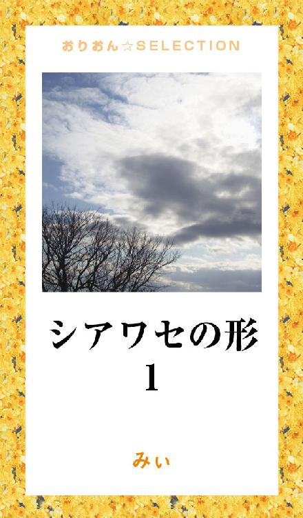
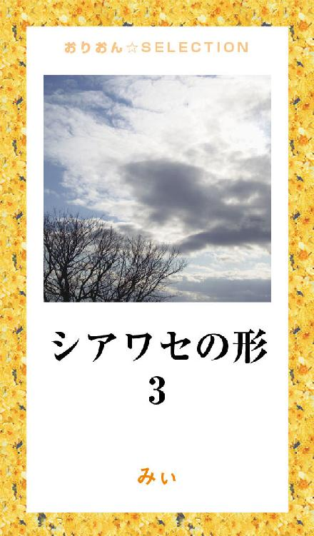

| シアワセの形 完全版 | |
| みぃ | |
この本は横書きでレイアウトされています。
また、ご覧になる機種により、表示の差が認められることがあります。

*･゜ﾟ･*:.｡. .｡.:*･゜ﾟ･*:.｡. .｡.:*･*･゜ﾟ･*:.
17歳。
何も考えず
バカなほどアツく恋をした。
*･゜ﾟ･*:.｡. .｡.:*･゜ﾟ･*:.｡. .｡.:*･*･゜ﾟ･*:
19歳。
３６５日
毎日
心臓が壊れそうなほどドキドキする恋をした。
泣いたり笑ったり。
喜んだり落ち込んだり。
恋に没頭し
恋に振り回された私は子供だった。
.:*:･'ﾟ☆｡.:*:･'ﾟ★｡.:*.★｡.:*
彼しか見えず
自分さえも見失うほどに
恋をできたのは
多分
何も知らない
10代だったからこそ。
ただ必死に追いかけた
この
2つの恋が
私を変えた。
*･゜ﾟ･*:.｡. .｡.:*･゜ﾟ･*:.｡. .｡.:*･゜*･゜ﾟ･*:."
「ゴメン、好きな人ができた」
......え......何？
......今、何て言ったの？
スキナヒトガデキタ
17歳、高校3年。
太陽が眩しく照りつける暑い夏。
私、海衣（みぃ）は
大失恋した。
*****
「ねぇ、カラオケ行かない？」
失恋から立ち直れず、
落ち込んでいたある日
クラスの男子に誘われた。
それまでの私なら、きっと
適当な口実を作って
その場で断ってた。
だけど
いつまでも落ち込んでる自分に
もういい加減飽き飽きしていた私は
「うん......そうだね。行こう」
吹っ切るキッカケを掴むように返事した。
「おう！ じゃぁ、放課後な。
違うクラスのヤツ1人連れて行くけど良い？」
「うん。別に良いよ」
1学年12クラス、４００人以上いる同級生たちの中には、3年間、話したことも無いような人がたくさんいる。
この時1人混ざってた
"違うクラスのヤツ"
も、私にとってはその中の1人だった。
3年間、同じ学校にいたのに知らなかった人。
この日
私は
初めて
コウスケと出会った。
放課後。
同じクラスの4、5人の女子と、男子4人。
そして......"違うクラスのヤツ"1人。
皆で集まってダラダラと自転車をこいでカラオケ店に向かい、
受付を済ませて部屋に入ろうとした時
「あ、紹介遅れたけど、こいつ、コウスケ」
そう言われて初めてコウスケと向かい合った。
だけど
挨拶もろくにしないまま、言葉を交わすこともなく
ペコリとお辞儀をしただけ。
「よし！ じゃぁ歌うかー」
「歌お♪ 歌お♪」
誰かの声に乗せられて、
私たちは、そのまま離れた席に座った。
学校の話、友達の話、今日の出来事......そんな他愛無い話で盛り上がる中、私とコウスケは
この日、一度も会話をすることは無かった。
何となく、近寄り難かったから。
話し方、歌い方、煙草......その雰囲気から見て、
結構、遊んでるんだろうな......。
初めて会ったコウスケはそんな印象だった。
歌って、話して、嫌なことを吹き飛ばすようにはしゃいだ数時間。
カラオケが終わって帰る頃には、もう空は真っ暗だった。
「楽しかったー」
「じゃあーねー」
「また明日ー」
「おう！ また明日な」
皆バラバラに帰って行く。
高校に入ってからずっと
違う学校の人と付き合ってた私は
放課後に同じ学校の友達と遊んだのはこの日が初めてだった。
こういうの、結構楽しいじゃん♪
新しい友達の輪。
いつもより遅くなった帰り道。
自転車のペダルを踏むと、
制服に付いた煙草の匂いを
風が運んでくる。
自分の前に新しい扉が現れたような気がして
何となく
ワクワクした。
「おはよー」
「おはよ。昨日、結構面白かっただろ？
......でさ、今日だけど、昨日のメンバーで放課後どう？」
「うん、良いよ」
少しずつ、皆と遊ぶ時間が増えていく。
原付の後ろに乗せてもらって花火に行ったり
誰かの家に集まったり。
そんな時間を過ごすうち、
いつの間にか
失恋の傷も癒えていた。
相変わらず会話をすることはなかったけれど、
コウスケは、休み時間になると私たちのクラスに顔を出すようになり、
放課後も一緒に過ごす日が多くなった。
「海衣！」
「うん？ 何？」
休み時間、いつも遊んでる男子がコウスケの話をふってきた。
「あのさ、コウスケって無口だろ？」
「うん、まだ会話らしい会話したことないよ、私」
「あいつ、クールなわけじゃ無いんだ。
ああ見えて女と付き合ったこともないしさ」
「えぇぇっ!?
意外......遊んでる人だと思ってた」
「だろ？ 実は全然！
緊張してんだよ」
「緊張？」
「そっ！ 女と何話していいか分からないんだとさ！
だから......仲良くしてやってよ、海衣！」
「う、うん......」
......そうなんだ。
なんだ、そうなんだ......。
意外だった。
軽そうに見えてたコウスケが、女の子と付き合ったこと無いだなんて。
緊張してるだなんて......。
何か可愛いじゃん。
その日から、急にコウスケを身近に感じて話しやすくなった。
休み時間も放課後も、よく話すようになって、少しずつコウスケとの距離が縮まっていく。
煙草は吸うし、バイクも乗ってる。
夢は音楽で食べて行くこと
だなんて言うし、
雰囲気が何となくチャラけて見える。
だけど
本当は真面目で、照れ屋。
そんなコウスケを知って、
私は少しずつ惹かれ始めた。
「お前ら、何か良い雰囲気じゃね？」
「えー？ そんな事無いよー......」
否定しながら、ほんとは自分でも感じてた。
......なんか最近、良い雰囲気じゃない？
って。
そんなある日の放課後、
「俺と、付き合わない？」
「うん......」
半年後に卒業という微妙な時期に私たちは付き合い始めた。
コウスケと一緒に過ごす毎日。
幸せで心地良いコウスケの隣。
だけど......
卒業を迎えた春。
私の１８歳の誕生日を目前に
した3月。
コウスケは
夢を追いかけるため
専門学校に進学。
東京に行くことを決めた。
私は美容師になるために
地元に残って就職することに。
コウスケの夢は音楽で食べていくこと。
地元の小さなライブハウスで歌っていても可能性は広がらない。
少しでも夢に近づくために
コウスケがずっと前から決めていた東京行き。
正直言って、
その夢が叶うとは思っていない。
だけど
夢を追いかけてるコウスケが大好きだった。
人がコウスケの夢を笑っても
現実を見ていないと言われても
私は、そんなコウスケが大好きだった。
今しか追えない夢は
今、追えば良いと思ってた。
そして、このまま2人の関係がずっと続いたら......。
コウスケとずっと一緒に居られる日が来たら......。
その時、夢の引き際を考えてくれたら良いと
そんな風に思っていた。
大好きな人と初めて離れた遠距離恋愛。
浮気とか心変わりだとか
コウスケとの関係に何も不安は無かった。
でも......。
思うように会えない日々は寂しくて。
毎日毎日、電話をしても全然足りなくて。
「会いたいよ」
「寂しいよ」
電話口でたくさん泣いた。
「今すぐ会いに来て！」
って何度もコウスケを困らせてた。
それでも
「俺も。会いたい。
今度の週末帰るから」
コウスケはいつも優しい。
欲しい言葉をちゃんとくれる。
今思えば、子供っぽくて笑ってしまうけれど、
「コウスケと結婚したい！」
「遠距離だから、せめて籍だけでも入れたいの！」
「もう結婚できる歳なんだから！」
なんて母に言ったり。
そんな私たちを
周りの大人たちは笑ってた。
18歳。
まだまだ子供だと言われようと
私たちは、子供なりに、この恋に本気だった。
だから
市役所に行って婚姻届を貰ってきたりもして。
2人で書いて、お守り代わりに持っていた。
いつか出せるようにって。
片道1時間40分、往復4万円の遠距離恋愛。
月に2回。
飛行機に乗り、日帰りでコウスケに会いに行っていた。
始発で行って最終で帰る。
一緒にいられる時間は長くても5時間程度。
それでも。
ほんの数時間でも会えればそれで良かった。
それだけで。
次に会うまでの2週間、講習と雑用ばかりの仕事を頑張ることができた。
修学旅行以外で県外に出たことなんてなかった私。
見知らぬ土地は、開放的で楽しかった。
*****
学生の頃にバイトの経験が無い私は、「学校」という枠を離れ、初めて自分で稼ぐことを知った。
コウスケは親元を離れ、自由になった。
そんな２人の想いはとどまる事など知らず加速するばかり。
新しい生活が始まり3ヶ月ほど経とうとしていた頃。
相変わらず月に2回、コウスケに会いに東京へ行く。
休みは毎週月曜日。
月に1度は連休が取れるはずの特別休暇も講習続きで取れず、東京へはいつも日帰り。
職場では、どんなに下っ端でもスタッフの一員である以上、サロンの看板を背負ってるのと同じこと。
常にクリエイティブでいるように厳しく言われた。
プライベートな時間の行動・言動。
職場を離れた後も常にアンテナを張ってなくてはいけなかった。
今から思えば大したことじゃない。
社会人として当たり前の事。
だけど、その厳しさが私にはまだ窮屈で。
思うようにコウスケに会えない寂しさも手伝い、耐え切れず、月・火と連休をもらうことにした。
毎日が新人講習のため、連休をとる新人なんて他には誰もいなかった。
だから、ズル休みでもするような罪悪感が頭をよぎった。
「いいの?? 他の子に遅れを取るよ。いいの？」
自分に問いかけた。
でも。
それでも。
その時の私はコウスケに会いに行くことの方が大切だった。
ただ、1日休みをとるというそれだけなのに、
罪悪感とも何とも言えない妙な気分で迎えた月曜の朝。
明日の火曜日は休みをとってる。
コウスケに会いに行く準備もできてる。
あとは行くだけ。
1泊2日で東京へ。
私は空港に向かう、いつもの始発電車に乗った。
小さな窓を覗く。
町並みが段々小さくなっていく。
いつも利用していた飛行機は
値段が半額の代わりに予約ができないという22歳まで使えるサービス。
当日、
運良く空席があれば乗れる。
だからいつも、飛行機が雲の中に入るとホッとした。
今日もこの便に乗ることができた。
今週もコウスケに会うことができる......って。
羽田空港に到着すると、そそくさとモノレール乗り場に向かう。
早くコウスケに会いたくて。
*****
初めて東京に来た時は、コウスケが迎えに来てくれた。
次に来たときは、コウスケを驚かそうと思って内緒で来た。
電車の乗り方も、キップの買い方すらも分からなかった。
どこに行けば良いか分からずに、表示を辿りながら上ばかり見て歩いた。
でも、もう慣れた。
早足で歩く人の波にも。
コウスケのアパートまでの道のりにも。
電車を乗り継ぎ
いつもの駅で降りると
心の中はもう
コウスケの事でいっぱい。
連休を取ったことで何となく感じていた、罪悪感のようなものもどこかへ行ってた。
コウスケと一緒に何を食べようか......。
どこに行こうか......。
何を話そうか......。
どんな夜を過ごそうか......。
そんなことばかり考えながら歩いていく。
やがてアパートが見えてくる。
男友達と2人暮らし。
ドア横のベルを鳴らすと
「海衣」
ドアが開き、大好きな笑顔が私を迎える。
後ろから、コウスケの友達が顏を見せた。
「あ、海衣ちゃん。いらっしゃい。
こいつ、ずっとソワソワして待ってたよ」
「そうなの？」
そんなの聞くとうれしい。
やっぱり連休取って来て良かった。
「海衣ちゃん入って。じゃ、俺は出かけてくるわ」
コウスケの友達はそう言って部屋を出て行った。
気を遣ってくれたんだ。
何か悪いな......。
そんな事を考えていたら
「気にするなよ。
彼女に会いに行ったんだから。
あいつ、今日はもう帰って来ないよ」
そう言って
コウスケが後ろから抱き締めた。
私は振り返りコウスケにキスをする。
「海衣、ちょっと出かけようか」
「どこに？」
「学校」
......学校？ ......
コウスケは出掛ける用意をすると私を連れ出した。
いつも通ってる道。
いつもの駅。
いつも買い物するコンビニ。
近くのスーパー。
小さな公園。
通ってる学校。
私の知らないコウスケの毎日。
私の見えないコウスケの生活。
日帰りで慌ただしく帰っていたそれまでと違って
この日は
遠く離れたコウスケの日常をたくさん知ることができた。
たった一泊。
一晩なのに、
夜になって
部屋に2人きりでいると一緒に住んでるかのような錯覚に陥る。
開放感と、束の間の幸せな時間に、完全に舞い上がっていた。
久し振りに会った私達は
いっぱい抱き合った。
「このままずっと一緒にいたい」
「2人で一緒に暮らしたい」
そんな思いを巡らせながら。
その日が......。
妊娠しやすい日であることは分かっていた。
コウスケとのＳＥＸ、避妊なんてしたこと無かった。
だけど......もう、ずっと基礎体温をつけていたから。
その日は最も体温の下がった日。
2、3日前からの下腹部の違和感を考えてみても、
それは......
ちょうど排卵日。
「子供ができてしまえば......」
おかしな考えが2人の頭をよぎる。
子供ができれば......
私たちはスグにでも結婚できる。
そしたら、会えない寂しさから解放される。
ずっと一緒にいられる......。
結婚・妊娠・出産......。
そして子供を育てるということ。
それが、どれだけ責任の重いことなのかも考えずに。
ただ、自分達の
「ずっと一緒にいたい」
その思いを満たすことだけ考えてた。
「中で......いい？」
「今日、多分......排卵日だよ？」
「赤ちゃん......できるかな」
「赤ちゃんできたら......私、産むよ？」
「いいよ、産もう。結婚しよう。ずっと一緒にいよう」
「うん」
感情に任せて
無防備に抱き合った夜......。
そして......
早まることも遅れることもなく、毎月同じ周期で来ていた生理が遅れた。
1週間、10日と待ち、もうこれ以上待てないと痺れを切らした2週間目。
薬局に行った。
初めて手にした妊娠検査薬。
なぜかコソコソと、うつむいたままレジを終わらせた。
家族が寝た頃、トイレで静かに箱を開けてみる。
説明書には、2週間では反応が出ないことがあると書いてあった。
だけど私はもう待てない。
早く結果が知りたくてダメ元で検査してみた。
最初は薄っすらと浮かび上がったその線は、あっという間に濃くなり......。
妊娠してた。
病院に行くまで確信はできないけれど、99％、間違いないだろう。
ドクンと大きく心臓が鳴った。
その瞬間、体も一緒に揺れたのではないかと思うほど大きく。
「どうしよう」
これが最初に頭に浮かんだ言葉。
成るべくして成った。
分かっていたはずの結果。
なのに。
初めての妊娠で、
初めて浮かんだ言葉。
ドウシヨウ
「ねぇ、コウスケ、妊娠したよ」
「ホントに？」
妊娠を告げると、コウスケは東京から帰って来た。
一緒に産婦人科へ行くために。
腕が良いと評判の先生。
待合室はいっぱいだった。
初めて産婦人科に行き、初めて診察台に乗った日......。
2人、ソファに腰を下ろすと私は問診表を書く。
「未婚」か「既婚」かの記入欄。
「未婚」を○で囲んだ......。
何となく、心地悪い......。
待っている間は落ち着かなくて、読みもしない雑誌をペラペラとめくる。
どれくらいの時間待っただろう......。
名前を呼ばれ、尿を取りに行き、
また少し待ってから診察室へ。
軽い問診の後、別の診察室に移ると、
下着を取り、足を開いて診察台に乗る。
下腹部の辺りから向こうはカーテンで仕切られていた。
開いた足が小刻みに震える。
「さあ。診てみようか」
と先生。
触診。
指なのか器具なのか...何か分からないものが私の中に入り子宮に触れる。
それから
冷たいジェルをお腹に塗ると機械が当てられた。
これが超音波？
カーテンの向こう。
先生には何が見えてるんだろう......。
「カーテン開けるね」
開かれたカーテンの向こう、白黒の画面。
それが超音波の映像だった。
初めて見たその映像は、どこに何があるのか分からなかった。
画面を指差しながら先生が説明してくれた。
「ここが子宮。それから、これが赤ちゃんの袋」
白く映った私の子宮の中。
そこにポツンと、小さな黒い点。
コウスケと私の初めての赤ちゃんは、まだ黒い点だった。
先生が聞く。
「今日、彼は来てる？」
「あ、ハイ」
「どうする？ 彼にも見てもらう？」
「......ハイ」
先生が看護師さんに言う。
「彼、呼んで来てあげて」
診察台の上で足を開いたままの私。
この格好のままで!?
恥ずかしさが込み上げてきた。
でも......。
コウスケにも見ておいて欲しかった。
それがコウスケの心を決めることに繋がると思った。
あの夜の約束が、もっと確かなものになると思った。
「どうぞー。こちらです」
看護師さんの声とコウスケの足音。
コウスケは......どんな顔をするだろう......。
「はい、どうぞー」
先生に促されコウスケが入って来た。
真っ直ぐこっちに向けられた画面を、コウスケはジッと見つめていた。
私は、そんなコウスケをジッと見つめていた。
先生が説明を始める。
「これがね......」
「あぁ......ハイ」
思っていたより普通の、明るい返事をするコウスケの反応に、私は少しホッとした。
一通りの説明が終わり、コウスケが先に診察室を後にする。
続いて私も、やっと診察台を降りた。
少しの待ち時間の後、最初の診察室へと呼ばれた。
「4週目ぐらいかな。結婚は......まだしてないね......。......どうしますか？......」
ドウシマスカ？
それはつまり、「産む」か「産まない」かの選択。
心の中では決めていた。
2人の間でも決めていた。
ううん......。
「決めていた」は間違いかな......。
「産みたい」と思ってた。
どっちにしても
妊娠の事は親に話さなきゃいけない。
「産みたい」ということも。
でも。
それより前に、もっと大切なことがあった。
確認しておかなくては。
コウスケは、どう思ってるのか。
少し間を置いた後、
「......まだ......分かりません」
そう答えることしかできなかった。
そんな私に先生が言う。
「妊娠に気付いたのが随分早かったね。
まだ心音の確認も取れないぐらい小さいよ。
産むとしたら......まだハッキリ分からないけど、予定日は3月29日頃。
もし結婚式するなら10月ぐらいまでならお腹が目立たないよ」
親切に結婚式の時期まで教えてくれた後、更に言葉は続いた。
「中絶するなら......」
中絶するなら、赤ちゃんが小さすぎて少し早過ぎる。
だけど、時間が経ち過ぎると体に負担がかかる。
先生は、中絶するのに一番リスクの少ない時期を私に伝えた。
そして
産むなら心音を確認するため。
中絶するなら手術の日を決めるため。
2週間後にもう一度来るように言われ、私は診察室を後にした。
超音波の写真はもらえなかった。
中絶することになった場合、写真を持ってると心が残るから......って。
超音波の写真。
欲しかった。
小さな点の赤ちゃんを
しっかり見てみたかった。
2週間後の予約をとって病院を出る。
「診察室に呼ばれた時、看護師さんに、『ご主人ですか？』って言われたよ」
コウスケが
頭を掻きながら照れくさそうに言った。
「で？ 何て返事したの？」
「ええ、まぁ......って」
2人、顔を見合せて小さく笑い合った。
束の間の「夫婦ごっこ」。
手を繋いで、笑いながら産婦人科を出る私たちの姿は、妊娠を喜ぶ若い夫婦の様に見えたかもしれない。
その日、私たちは少し浮かれていた。
でも。
本当は......。
きっとコウスケはとまどっていた。
超音波の映像を
目の当たりにしたからかな......？
*****
「......どうする？ 産んで良いんだよね？」
「うん。産もう」
心の隅に動揺を抱えたまま2人話し合った結果は
「産みたい」
何とかなる......どこかで、そう思っていた。
「話が......あるの」
この第一声で、多分、母はいつもと違う私の様子に気付いた。
母と私の間に緊迫した空気が漂った
「あのね......」
言い終わる前に、母が言う。
「......もしかして......妊娠でもしたの??」
何で分かった!?
全身の血が一気に頭に上るような緊張が走る。
「産みたいの」
母の答えは
「まだ早い」
私には分からなかった。
私たちはもう大人。
結婚できる年齢にもなってる。
人より少し早いかもしれないけど、早く結婚する人なんていくらでもいる。
何より、私の母だって19歳で結婚してた。
なのに、何で？
早いって何が？
でもね。
母は。
「産みたい」と言った私たちの
心の裏にある戸惑いを
見逃していなかったんだ。
「妊娠が分かってどう思ったの？」
......え......？
その意味が分からなかった。
母が何を言いたいのか。
私に何を伝えようとしているのか。
母が言葉を続ける。
「困ったと思わなかった？」
「......」
何も答えられなかった。
......母の
言うとおりだったから......。
私たちは困ってた。
初めての妊娠。
それが現実になって
戸惑ってた。
「赤ちゃんは望まれて産まれて幸せになるのよ。
心から望んだ妊娠なら困ったりしないのよ。
最初に困ったと思うような2人じゃ子供を幸せにできないわ。
何より母親になるはずの海衣が困ってるんだもの。
だから、まだ早いって言ってるのよ」
......何も言えなかった。
「産みたいの！」
と強く主張することも。
「そんなことない！ 幸せにできる！」
とも......。
母は、
「美容師として、1人の大人として、経済的にも、精神的にも一人前になってから子供を産んでも遅くはないわ」
そう言った。
その翌日には、妊娠の話を聞いたコウスケのお母さんが家を訪ねてきた。
「こんなことになって申し訳ありません」
と母に頭を下げ、
それから私に言った。
「もしも中絶したら、傷つくのは女である海衣ちゃんなんだから、どうするのか海衣ちゃんが決めて良いのよ。
産むなら経済的にも育児にも協力するし」
その言葉に、私はモチロン、母もビックリした。
今回は諦めるように......と考える母とは対照的に、
コウスケの家は、どちらかと言えば産む方向で考えていたから。
ただ、1つだけ条件があった。
コウスケが音楽をやりたいということに、賛成ではなく、東京行きも渋々許したコウスケのお父さん。
そんなお父さんから出された条件。
"東京のアパートを引き払い、コウスケが帰ってくること"
傷つくのは女だと言ったコウスケのお母さん。
男側の親である以上、中絶前提の話など出来なかったのかもしれないけれど......。
その話ぶりから、コウスケの御両親は、息子が帰って来て家を継ぎ、孫も見られることは、そう悪くないと思っているように感じた。
でも。
この条件に、コウスケの戸惑いは大きな心の揺れに変わった......。
「向こうで産むことはできないかな......」
"東京"も"夢"も諦められない様子のコウスケ。
私にしてみれば
コウスケに帰って来てもらって、住みなれた環境で子供を育てたい。
それが一番安心できる。
「東京でなんて......無理だよ」
「......」
「......」
次に産婦人科へ行くまでの2週間。
そう簡単に答えなど出せるはずもない。
私と母。
私とコウスケ。
そして多分、コウスケの家でも。
明るいとは言えない空気が流れる。
それでも母は、流産だけは無いようにと私の体を気遣った。
だけど......。
職場では1日中立ちっぱなし。
次々に来るお客様のシャンプーや、その他の雑用に追われ体は疲れていた。
吐き気こそ無かったものの、眠気や体のだるさなど、それは今までに感じたことのない、妊娠中独特のものだった。
体が重い......。
毎日、朝起きるのが辛い。
お腹に時々感じる鈍い痛み。
そんなある日、トイレで用を足した後、少量の出血に気付いた。
ティッシュに少し付く程度の少量のものだったけれど、
「流産だけはしないように気をつけなさいよ」
母の言葉が頭に響く。
でも、職場では誰にも相談することなどできない。
私はその日、たびたびトイレに行って確認した。
出血が増えることがありませんように......。
幸い、それ以上の出血は無かったけれど、時々お腹の痛みもあり心配になった私は母に相談した。
「海衣の体が一番大事なんだから職場にも言っておいたら？」
と、母の提案。
産めるかどうかも分からない妊娠を、あまり人に知られたくはなかった。
けれど、仕事はハード。
体の事を考えて、
マネージャーにだけ......。
そう思って話した。
「すいません、マネージャー。お話があります......」
マネージャーと2人、個室に入り妊娠と、今の体調について告げる。
*****
今の私なら分かる。
私は甘かった。
入社して1年足らずの私をプロのスタイリストに育て上げようとしてくれている社長やマネージャー。
毎日の研修と練習に時間を費やしてくれていた。
なのに、
妊娠した、体調が悪いので便宜を図ってもらいたい
などと、なんて甘々の社会人。
マネージャーにだけ......そう思って話したことは、その日のうちに社長の耳に入り、呼ばれた。
「今産んで、どうやって育てるんだ？」
言葉に詰まりながら、私は答える。
「親にも......協力してもらいます」
私はこの時、子供を産み育てることを親に協力してもらおうと思っていた。
それは当然で不可欠なことだと。
社長の顔が歪む。
「仕事も中途半端、精神的にも経済的にも中途半端。その上、最初から親の協力をあてにして産むつもりか」
煙草をふかしながら話す社長に私は嫌悪感すら感じた。
男の社長に私の思いなんて分かるもんか！
そう思っていた。
そんな私を見透かしたように社長が続ける。
「今のお前には何を言っても右から左へと抜けるんだろう。
でも、いいか？」
社長は言った。
「今回は中絶しろ。
物事は最初に無理をすれば、必ずシワ寄せが来る。
最初は小さなシワに見えても、無理からできたシワは後で必ず大きくなる。
今、お前が作ろうとしているシワは、親、お腹の子、お前自身、相手の男、それから職場にも、皆に無理のかかるシワじゃないか？
そのシワが幸せに繋がるシワかどうかよく考えろ」
そして。
「後になって、中絶を選んだことを、間違いではなかったと思う日が必ず来る」
と......。
産みたい！
でも......。
私は......
私とコウスケは、子供を幸せにできる......？
夢を諦めたコウスケがいつか後悔する日が来たら......？
子供の人生に、
コウスケの人生に
自分自身の人生に
私は
責任持てるのかな......。
──子供は望まれて産まれるもの。
心から望んだ妊娠なら困ったりしない......──
──そのシワは皆の幸せに繋がるシワか？──
母の言葉、社長の言葉が私の頭に、心に響き始める......。
大人の言葉に
納得し始めた自分がいた。
何より......。
コウスケには夢があり、
私はスタイリストどころか、アシスタントの仕事ですら覚え始めたばかり。
*****
コウスケの心が揺れ続ける。
どうやってお金を稼ぐか。
夢はどうなるのか。
今の2人が家族を作るなんてできるのか。
話をするにつれて、コウスケの前に、産むという現実が重くなってきている。
そんなコウスケを見て私の心も揺れ始める。
これは......無理なのかもしれない。
この無理を押しとおすことは、誰の幸せにも繋がらないのかもしれない。
色んな思いと、
色んな考えが交錯する。
そして出した、
2人の答え。
コウスケが言った。
「ごめん。
今回は諦めよう。
まだ夢を諦められない。
今は無理だと思う」
コウスケに諦めようと言われ、
私には
産めない条件が揃った。
産まないという選択をした私とコウスケ。
2週間後、2度目の産婦人科。
同意書をもらった。
手術の日を決めた。
手術までの間どれぐらいの日があったのか、今はもう覚えていない。
ただ、手術の日まで、
せめて、その日まで、
自分の体とお腹を、
それまでよりも
大切にした。
仕事を疎かにするわけにはいかず
体のだるさと重さは相変わらずだったけど
それは
私の罪ほども重くない。
皮肉なことに、
中絶を決めてから、
処置を施すその日まで、
今まで無かった食欲と、
胸の張りを感じた。
食べれば少し、吐き気がするようになった。
中絶が決まっていても、
私のお腹に居る限り
赤ちゃんは
育ち続ける。
こんな私のお腹の中で
育ち続けてる......。
中絶の日。
コウスケと母が私に付き添った。
待合室。
隣に座る妊婦さん。
大きいお腹......。
名前を呼ばれる。
私が行くのは手術室。
手術台の上に乗ると、すぐに先生が入って来た。
麻酔が始まる。
「1から10まで数えて下さい」
これで眠ったら
赤ちゃんは......。
7で意識が無くなった。
*****
眠っている間に全てが終わっていた。
目が覚めた時、隣に母がいた。
心配そうに私を見る母。
もしかして、あの時
私以上に母の方が、心が痛かったのかもしれない。
体を起こそうとする私に
言葉少なく話しかける。
「あ、どう？ 大丈夫？
麻酔が切れるまで休んで行くようにって......」
「大丈夫。もう帰る」
私は
この無機質な手術室から
すぐにでも出たかった。
少し残っている麻酔で真っ直ぐ歩けない。
母が私に寄り添う。
コウスケが私に手を差し伸べる。
でも......。
私はその手を取らなかった。
手術室を出て、注意事項を聞き、会計を済ませる。
それは、何より長い時間のように感じた。
少し張っていた胸の痛みも、食欲も、気分の悪さも、気だるい眠気も......。
私の中に赤ちゃんがいた時の体の変化は全て、何もなかったように元に戻った。
それは驚く程あっという間に無くなっていた。
ただ
止まっていた生理を取り戻すかのように
失くした命を
象徴するかのように
出血が続いた。
出血が止まる頃
検診の為、もう一度
産婦人科のドアをくぐる。
足を広げて診察台の上に乗ると
先生がやってくる。
私の子宮を見て
「傷もなく、きれいになってます」
私の子宮の中は元通り。
何も
無くなってた。
それは
もう赤ちゃんはいないのだと
私は中絶を選んだのだと
思い知る瞬間......。
この日から少し経ったある日。
私はコウスケに別れを切りだした。
本当はずっとコウスケと付き合っていくつもりだった。
そして、いつかもう一度コウスケとの命を授かることができたら......。
中絶の手続きに行ったあの日までは、そう思っていた。
だけど......。
コウスケと2人、中絶の手続きに行ったあの日。
この時のコウスケとの会話が私とコウスケとの溝になった。
あの日。
病院までの道のりがとても憂鬱だったのを覚えてる。
「病院行くの嫌だなぁ......。産むためならともかく、もう診察台に上がりたくないのに......」
その時、コウスケがポロリと言った言葉。
「別に平気だろ？ 股を開くぐらい......」
そう言って笑った......。
怒りと悲しさ......なんとも言えないショックを感じた。
だけど、私は何も言わず、思いを心の奥にしまっていた。
だって、コウスケはほんの冗談のつもり。
コウスケには悪気なんて全然ない。
それは分かっていたから。
でも、
私には
許せなかった。
「妊娠・中絶」という出来事の中で。
コウスケと付き合った月日の中で、一番
許せなかった。
別れを告げた私にコウスケは言った。
「なんで??」
「......どうしても許せないの」
「何が？」
「中絶の手続きの日の事覚えてる？」
「何？」
「診察台に乗るのがイヤだって言った私にコウスケ言ったよね？
『それぐらい平気だろ？』って」
「俺......そんなこと言った？
......だとしても、その一言で？
たったその一言で俺達終わるのか？」
「たったそれだけだよ。
その一言だけ。
でも、私にはそれが許せないの。
ずっとひっかかってるの」
コウスケは
自分の言ったことを覚えてはいなかった......。
「......俺は別れたくない。
あんなことがあったからこそ、亡くした子供のためにも一緒に居るべきだろ？」
......亡くした子供のため？？
2人で、産むと決めて妊娠した。
なのに、その子を自分達の為に勝手に犠牲にした。
亡くした子供の為だなんて、そんな言葉、ただの綺麗言。
「私は......コウスケと一緒に居ることが亡くした子供のためだとは思わない。
これからの私達にできるのは
例え互いの相手が変わっても
2度と浅はかな考え方を、
こんなバカなことをしないこと。
この先、この命のことを忘れない事だよ」
そう言ってコウスケとサヨナラした。
多分、本当はそれだけじゃない。
きっと全部なんだ。
大好きで一緒に居たくて妊娠した。
2人同じ気持ちだと思ってた。
なのに、夢を選んだコウスケが許せなかったのかもしれない。
私だけが傷ついたような気がしてた。
そして
あの日のあの言葉。
それが私の心を決めたんだ。
それから、何となく脱力感が生じた私。
でも、普通に毎日を過ごした。
恋愛なんて考えられず、誰かと肌を合わせるなんてとんでも無かった。
道行く人が小さな赤ちゃんを抱いてるのを見れば悲しくなり、
元気に遊ぶ子供を見ては
胸が痛む。
仕事に没頭した。
何も考えないでいるには
忙しく仕事をするしかなかった。
私は「これで良かったんだ」と自分に言い聞かせた。
この出来事は、私の「性」を大きく変えた。
今から思えば、コウスケはちゃんと責任を取ったのだと思える。
親に出してもらった中絶費用。
コウスケはバイトをしながら全額返した。
病院も、一度も欠かさず一緒に行ってくれた。
中絶したあの日。
手術の間、待合室で
私の母の隣で待っていた時間
コウスケも、きっと
とても長く感じただろう。
逃げ出したかっただろう。
だけど、その全ての瞬間に
ちゃんと向き合ったコウスケは
取り返しのつかない所まで来て途中で逃げ出すような男よりは、ずっと誠実だったと思う。
決して良い事じゃない。
だけど、その時の感情だけで、夢も諦められないままに家族になっていたとしても、幸せにはなれなかっただろう。
あの選択は大きな罪だけれど、間違いではなかった。
この時の選択次第で、皆の人生が大きく変わっていたのだと思うと、これは私の人生最初の大きな分岐点、選択だったと、今は思う。
そして、
これは
私の今に続く道の
ほんの始まりの出来事だった。
1年後。
新しい春が来て、職場では後輩ができた。
スタイリストデビューを目指してカットの練習に励む毎日。
小さな命を犠牲にしても
日々は過ぎて行き
生きていれば出逢いは繰り返すわけで......。
*･゜ﾟ･*:.｡. .｡.:*･ﾟ･
「ねぇ、海衣、今度の休み、皆で遊園地行くんだけどどう？」
同期の仲間、リサに誘われた。
サロンの中で同期は5人。
良い関係で仕事をしてる。
だけど、私は仕事が終わってまで一緒に過ごす気にはなれなくて、
この1年、リサたちとは1度もプライベートな時間を過ごしたことは無かった。
だから、遊園地に誘われたこの時にも
「うーん......多分行けないと思う」
そう言って、1度は断った。
だけど、
「えー！ 海衣はいつもそうなんだから！ たまには行こうよ」
結構強引なところがあるリサに押され
「じゃあ、行けるようだったら連絡するね」
そう言って、その場をかわしたのだった。
それから、何度か
「どう？ 月曜日行けそう？」
リサに声をかけられるたびに
「うーん......まだ分からないよ」
そう答えていたけれど
「もう！ 用事なんて無いんでしょ？！
絶対行くよ！
朝9時に集合だから」
半ば強引に集合場所と、時間を伝えられ
半分は
行ってみようかな......
そんな気になっていた。
月曜日。
リサの家に向かう。
行くのは私を入れて4人の同期と
リサの彼氏と、その友達が2人の、合計7人。
そこで出逢った1つ年上のアツシ。
エタニティーの香りを漂わせてた。
オシャレな人......。
そう思った。
だけど
この時は、まだ
私が
アツシと恋をするだなんて、夢にも思っていなかった。
アツシの車に7人全員で乗り込み遊園地に向かった。
ちょっと窮屈だけど、なんか楽しい。
最初は何となく入り込めないような気がしていたけど
すぐに皆と打ち解けた。
皆、とてもノリが良い人たちだったし、
アツシが盛り上げてくれたから。
遊園地ではしゃいで、帰る頃には、もう昔からの知り合いのように仲良くなってた。
帰り道、長い長いドライブの様な時間。
ミスチルが流れる車内。
皆が疲れて眠る中
私だけが起きていた。
ふと、
ミラー越しに、運転席のアツシと目が合った。
「あれ？ 海衣ちゃん、起きてるの？
人が運転してるのにコイツら気持ち良さそうに寝るよなぁ。
海衣ちゃんは
ちゃんと起きててイイ子じゃん♪」
私は
長距離の運転で疲れてるのにずっと皆を盛り上げようと気遣うアツシを見て
寝ちゃダメだって思った。
だから
一生懸命起きてたんだ。
この日を境に
同期の人と集まって、一緒に遊ぶようになった私。
ある日
「アツシが海衣のこと気に入ってるみたい」
リサと、リサの彼氏のその言葉で
最初は何とも思ってなかったアツシを少しずつ意識するようになった。
「アドレス教えて」
「いいよ」
そうして始まった、私とアツシ。
アツシの好意を何となく感じながら
メールをしたり
ドライブしたり
そんなことをしているうちに
いつの間にかアツシは
私の心に入り込んできてた。
19歳の終わり。
私はアツシに恋をした。
そして、ある夜。
「付き合おうよ」
「うん」
私はアツシの彼女になった。
それからは
会えば会うほど
一緒の時間を過ごすほど
どんどん、どんどんアツシを好きになった。
コントロール不可能。
自分さえ見失うほどアツシに恋をしてた。
今までの恋は3ヶ月もすれば、
ドキドキは慣れに変わり
一緒にいるのは当たり前になっていたのに。
アツシとの恋は
そうじゃなかった。
アツシしか見えなくて
毎日毎日ドキドキしてた。
会えた日には胸が高鳴った。
私、変じゃないかな？
私、太ってない？
この服、おかしくない？
昨日の喧嘩で、アツシは別れを考えてないかな？
明日も......アツシの彼女でいられるのかな......？
毎日、毎日が不安との戦い。
毎日、毎日が喜びの連続。
1ヶ月目の記念日、
1ヶ月と1日、2日......。
3ヶ月と......。
アツシと付き合っている日々を指折り数えた。
これほど毎日心臓を鳴らしていたら寿命が縮まるんじゃないかというぐらい。
毎日、毎日がドキドキで
大好きだった。
会えば、離れられなくて
朝方までドライブ。
車で2人きり。
何度も良い雰囲気になるけれど
恥ずかしさと緊張で
なかなか体を許せなかった。
だけど
アツシは絶対に無理強いはしなかった。
優しくキスして抱きしめてくれる。
帰り際
「じゃあ......もう仕事ヤバいから......会いたくなったらいつでも言って。すぐに会いに行くから」
そう言って
車を走らせるアツシ。
私は
アツシの車が
見えなくなるまで見送って......。
でもね
今、帰ったばっかりなのに
さっきまで一緒にいたのに
また、すぐ会いたくなるの。
『今、会ったばっかりなのにもう会いたいよ......』
アツシにメールすると
アツシは帰りかけてた道を
また戻って来てくれる。
「じゃぁ......あと30分だけ、一緒にいようか」
そう言って
優しく抱きしめられる。
そんなアツシが大好きで
私の心は
あっという間に
アツシでいっぱいになった。
アツシしか見えなくなった。
アツシじゃないとダメだった。
私の毎日に
アツシがいれば
それで良かった。
それだけで
私の世界は輝いてた。
そして
1ヶ月が過ぎ
2ヶ月が過ぎて
3ヶ月が過ぎる頃
私とアツシは
やっと1つになった。
アツシをもっと近くで感じたくて
アツシをもっと知りたくて......。
初めての時のように緊張したことを今でも覚えてる。
誕生日には指輪のプレゼント。
初めて、左手の薬指にはめられた小さな石が付いた指輪。
キラキラ光る指輪に幸せを感じてた。
そうやって
私たちの幸せな毎日が過ぎて行き
アツシと付き合って1年が経とうとしても
まだ、私は いつも
アツシにドキドキしてた。
会う時も
手を繋ぐのも
キスをするのも
体を重ねるのも......。
何度繰り返しても、壊れそうなほど胸が高鳴る。
こんな風にドキドキする恋もあるんだ......。
って、初めてそう思った。
でも......。
大切なものほど
壊れやすくて
大切にするほど
逃げて行く。
世の中ってそう言う風にできているのかな......。
帰り道が同じで、毎日一緒に帰っていた後輩。
カナ。
帰り道、自転車でゆっくり、ゆっくり進みながら
話し足りなくて
赤信号を何度も見送って
話し続けてた。
恋の話や仕事の話をたくさんしながら、毎日一緒に帰っていた。
ノロケ話やケンカした話、
付き合い始めたキッカケや
どんな仕事をしているか。
嫌な先輩、怒られたときの対処法、仕事のこなし方......
ホントにたくさん色んなことを話しながら。
*****
カナは、職場の飲み会に迎えに来てくれたアツシを一度だけ見たことがあった。
それからは
1度見ただけのアツシのことを
「カッコイー、あんな彼氏、羨ましいデス」
ってそう言っていた。
そう言われることは悪い気はしないし、むしろうれしくて、ちょっと自慢。
明るくて活発で可愛らしいカナ。
サロンでも皆に可愛がられていた。
カナは、
そのうち、私たち同期の集まりにも顔を出すようになった。
そしてある日。
アツシとカナが初めて居合わせた。
最初は言葉を交わすことも無かった2人。
そんな事が何度か続いた。
それなのに
ほんの些細な
イタズラメールが
アツシとカナ、2人の距離を近づけた。
皆でリサの家に集まったある日
アツシのケイタイが鳴った。
「うわっ！ 何だこれ？」
メールを見て驚くアツシ。
何だろう......？
「誰だよ!? これ。登録して無いアドなんだけど......」
知らないアドレスからメール......？
「何だろうね......？ いたずら？ ......にしても知らない人から......？」
アツシと一緒に不思議に思っていると
困惑してるアツシの後ろで
皆がクスクス笑ってる。
皆のイタズラだと気づいた私に
口に人差し指を当ててシーッって合図。
私はそっと1人に近づいて
「ねぇ......一体誰のアドレスから送ったの？」
「カナだよ。カナのアドだとバレないだろ？」
そのうち
困惑しているアツシの姿に、堪え切れなくなった1人が噴き出すと
アツシが気付く。
「あー!! お前ら!? ......ったく！ 何だよ......。
......でも、これ誰？ こんなアドのヤツいた？
おれ全員登録してんだけど......」
「カナのだよ」
「......あーね。分かんねーはずだわ」
そう言ってメールを消そうとしたアツシに......。
「どうせ、これからも集まるんだし登録しておけば？」
誰でもない。
私が言ったこの言葉。
口から出た言葉を取り消す方法があるなら教えてほしい。
あの時、何であんなこと言ったんだろう......。
カナがアツシを褒める言葉に気を良くしていたから？
カナには彼氏がいると安心していたから？
何てバカな私。
集まる人数が増えて楽しくなると、そんな風に思っていた。
結局、
「いや、いいよ、別に連絡とることないでしょ」
ってメールごと、アドレスも消去したアツシ。
なのに......。
アツシのアドレスを知ったカナが
私の知らない所で
アツシにメールをするなんて
この時の私は想像すらしていなかった......。
それからしばらく経ったある日。
私とアツシは喧嘩した。
ほんの些細なことで。
原因なんて覚えていない。
覚えていないほど些細なこと。
喧嘩をした勢いでアツシから貰った指輪を外した私。
いつも私ばかり不安で、
いつも私ばかりアツシを好きで。
指輪を外してみることでアツシの心を確認したかった。
でも
指輪が無いことに気付いたアツシと、もっと大きな喧嘩になった。
何か......、いつもと違う空気。
アツシが怒る。
「その指輪、どんな気持ちであげたと思ってんの？」
怒ってる......？
呆れてる......？
アツシは私に背中を向けたまま。
謝っても。
どんなに機嫌をとろうとしても。
この日、アツシは
「もういいよ」
と言って抱きしめてはくれなかった。
その日はそのまま
背中合わせで眠った。
指輪を外していたのが、そんなにアツシを傷つけた......？
それとも、この時はもう、カナに心を奪われていた......？
喧嘩のはずみで指輪を外した。
ただ、それだけだったのに。
次の日の朝、起きたとき、
アツシは何事もなかったような顔をしていた。
昨日の喧嘩はもう終わり？
私は許された？
アツシはいつもそう。
喧嘩をしていても、途中で口をつぐんでしまう。
「これ以上喧嘩したくないから」
と。
そして私はいつも不完全燃焼。
何で？
最後までケリつけたいのに。
アツシの思ってること、ちゃんと知りたいのに。
白黒はっきりつけたい私と、折り合いを付けたいアツシの喧嘩はいつもこんな感じだった。
でも、今度の喧嘩は、これ以上続けたくない。
何となくそう思った。
アツシに合わせて、私も何もなかったような顔をした。
これで
このまま自然にいつもの2人に戻って行くんだと、そう思った。
ぎくしゃくした空気が和らいで来たある日。
仕事が終わり、アツシと会った。
「風呂入れよ」
私は疲れていて、もう少し座っていたかった。
動く気がしなかった。
「うん......もうちょっとしたら入るよ」
ダラダラしていた私に何度も
「ねぇ、早く風呂入れば？」
「まだ入んないの？」
やたらとしつこいアツシ。
重い腰を上げて、お風呂の準備をした。
「じゃぁ入ってくるよ」
そう言って部屋を出たけれど......。
これは直感。
何かおかしい。
何か怪しい。
私を部屋から追い出すかのようにしつこかったアツシの態度が引っかかった。
私は
足音を立てず、こっそり部屋の前に戻った。
耳を澄ましてドアの前に立つ。
部屋は静か。
ドアを
開けてみた。
ガチャッとドアを開けたのとほぼ同時に、ベットの下に携帯を隠したアツシ。
慌てた様子で私に聞いてくる。
「何？ どうした？」
つかつかと部屋に入る私。
「何で携帯隠すの？」
「メールしてただけ」
今までそんなこと無かった。
アツシがメールしてる場面なんて珍しくもない。
でも、慌てて隠したりしたことなんて一度も無かった。
メールを見たわけでもないのに。
何で慌てるの？
いろんな「？」が私を包んだ。
「何？ 音も立てずに戻ってきたりして。感じ悪いな」
アツシの機嫌が悪くなる。
「別に。忘れものしたから」
何となく
これ以上聞けない。
これ以上聞きたくない。
これ以上言わない方が良い。
そんな雰囲気。
私は、そのまま部屋を出た。
お風呂から出ると、アツシの様子が少し変。
機嫌が悪いわけでは無いけれど、何となく重い空気をまとってる。
「あのさ......」
アツシが切り出す。
「カナ」
......え？ ......何？
「メールの相手、カナ」
「は？」
「だから！ 隠してると何か悪いことしてるみたいで嫌だからさ。カナとメールしてるんだ」
何で？ どうして2人がメールを？
わけが分からなかった。
だって、連絡とることないからって消去してたでしょ？
何で？ 何で？
さっぱり分からない。
事態が飲み込めずアツシに説明を求める。
「どういうこと？ 何でカナとメール？」
「あの日は確かにメールを消したよ。
でも......。
それから何日かして
カナの方からメールが来た。
無視するわけにもいかないから返信したら、頻繁にメールが入るようになったんだ」
そして、アツシはこう言った。
「別に大したメールじゃない」
って。
『今仕事が終わった』とか
『今日は疲れた』とか
『今帰り道』とか
そんな程度だって。
アツシは
『おつかれさま』
って、そんなことを返しているだけだ、って。
大したメールじゃない？
私にしてみれば、それこそが大したメールだよ。
『今仕事が終わった』
とか、そんなこと私がアツシに打つメールでしょ？
他愛ない、そんな内容こそ
彼氏・彼女のメールでしょ？
カナは自分の彼氏に打てば良いじゃない！
それを何でアツシに!?
おかしいでしょ。
ナイでしょ、普通。
頭に血が上った。
こんな時って
問い詰めない方が良いことまで問い詰めたくなる。
「いつから？
どんな？
今までに何回メールを？」
「大したことないなら慌てること無いじゃない」
「何で隠してたの？」
「私に見つからなければ、ずっと隠れてする気だったの？」
私にとっては
「大したことないメール」の内容は大問題だったし
それを慌てて隠すこと自体、不審に思えた。
だけどアツシは
「大したことないよ。ただメールしてただけ」
の一点張り。
「どうしてカナとメールしたの!?」
そう聞いた私にアツシが言った。
「お前とさ、喧嘩した日。
あの次の日ぐらいからだよ。
こんなに頻繁にカナとメールするようになったのは。
それまではカナからメールが来ても、適当に返信したり、しなかったりだったんだ」
あの日......？
あの喧嘩がキッカケ？
そう言われても
私にはどうにも出来ない。
時間を
あの日に戻すことなどできないのだから。
それからは......。
初めて他人のケイタイを覗いた。
良いことなんか一つもなかった。
それは「大したことない」内容なんかじゃなかった。
2人は私の知らない所で会ったりもしていた。
一番許せなかったのは
カナが
付き合ってる彼氏と別れるつもりはない
ということ。
そして、アツシがそれを承諾していたこと。
でも、それを問い詰めれば携帯を見たことがアツシにバレる。
アツシにバレたら
もう後には別れしかない。
だから、何も言えない。
ただ
1回メールを見てしまってからは
その後も、2人がどんなメールをしているか気になってたまらずに
何度もアツシの携帯を覗いた。
何も気付かないアツシ。
いつものように、
今までと同じように、
家に来る。
私に見せる、アツシの笑顔や優しさは嘘。
それでも私はアツシを失いたくない。
毎日見ているメール。
どんどん近付くアツシとカナ。
どんどん離れるアツシと私。
それを目の当たりにしながら
知らないふりをするしかなかった。
アツシと別れることの方が辛かったから。
例えば、
明日からアツシがいなくなる
それを想像しただけで
私は
壊れそうだった。
私は必要以上にアンテナを張り巡らせた。
アツシの一言一句、一挙一動に敏感になった。
アツシの仕事は変則だった。
朝早くから昼までだったり、昼から夜遅くだったり......。
それでも、今までは殆ど毎日を一緒に過ごしてきた。
実家に住んでる私の所に毎晩のように泊まっていた。
だからこそ
「今日は会えない」
という電話の向こうの音に耳を澄ます。
会えないと言いながら、カナと会っているのではないかと。
怪しい日には
片道１時間かけて
こっそりアツシの家を見に行った。
会えば、アツシが眠った後にはメールを見ていた。
見た後にはいつも気が狂いそうなほどの苛立ちと、悲しみと
私たちは、もう元の2人には戻れないかもしれないという切なさで張り裂けそうだった。
何も知らないリサ達は、いつものように皆で集まる。
その中には
私がいて、アツシがいて......カナがいる。
カラオケでアツシが歌う歌。
その、切ない歌にはどんな想いが隠れてるの？
誰への想いが隠れているの？
誰にも、何も知られていないと思っている2人の
何気無い会話が気になってたまらない。
帰りは同じ方向だからと、アツシの運転する車に私とカナが乗る。
私は当たり前のように助手席に乗り、当たり前のように後ろに乗るカナ。
カナを途中で降ろし私の家に向かうアツシ。
いつもと、今までと同じ。
何も変わらない。
だけど......本当は......2人の心はちゃんと通じているの？
私を挟んでいても、心はお互いを向いているの？
私......バカみたい......。
何もかもを知りながら
何も知らないフリをして......
バカみたい。
そんな毎日が続いたある日、私はとうとうアツシを問い詰めた。
何も知らないフリのまま。
「アツシ......あれからカナとどうなってるの!?
まだメールしてるの!?」
「......」
「ねぇ！ どうなってんの!? 隠したって分かるんだから！
アツシを見てたら何となく分かっちゃうの！
まだメールしてるんでしょ？」
「......」
「ちゃんと答えてよ！」
「......」
重い沈黙の後、意を決したようにアツシが言った。
「......俺は......カナが好きだ。でも......」
「......でも？ ......でも、何？」
「......海衣の事も好きだ」
「何......ソレ......」
「カナに無いものが海衣にあって、海衣に無いものがカナにはあるんだ......。
だから2人とも好きなんだ。
だけど......カナには彼氏もいるし、海衣のことも傷つけたくないから......」
何ソレ？
2人とも好きなら私を選んでよ。
カナには彼氏がいるじゃない。
「両方好き」なんて納得できない。
そんなのって無いよ!!
「一番大切な人」は1人でしょ？
一番は誰なの!?
「傷つけたくないから」何て言わないで。
だったら傷つけないでよ。
そんな程度の思いなら今すぐ止めてよ。
私は......もう......傷ついてるよ。
アツシ......私を選んでよ。
「今はどっちも選べないから......待ってほしい」
「待つって何？
いつまで待てば答えは出るの？
待ってる間、私とアツシはどうなるの？
待ってる間、アツシとカナはどうなるの？」
「少し時間が欲しいんだ。その間、カナとも海衣とも会わないから」
......ねぇ......
それは本当なの？
私と会わないだけで、カナとは会うんじゃないの？
それはカナと会う時間を作るための口実じゃないの？
何も信じられない。
ただ、アツシを失うのが怖い。
私は
アツシの答えが出るのをおとなしく待つなんてできなかった。
何で？
何で？
何で？
ねぇ......何でこうなったの？
何がいけなかったの？
あの時のイタズラメールがそもそもの始まりなの？
「登録すれば？」
あの一言がいけなかったの？
喧嘩したのがいけなかったの？
喧嘩して、指輪を外したのがいけなかったの？
それよりも何よりも、
アツシとカナが会ったあの日がいけなかったの？
どの場面の、どの私がいけなかったの......？
どの時に戻ればやり直しが効くの？
なぜ？
どうすれば？
後悔とも悲しみとも、憎しみとも、何とも言えない、その全てが混ざり合った初めての感情。
苦しくて、苦しくて、苦しくて。
どうしても
アツシとカナを引き離したかった。
このときの私は
ただ
アツシを取り戻そうと、それだけだった。
職場では、カナがロッカーに近付けば、
アツシにメールをしているのではないかと気が気じゃなかった。
仕事なんて忘れて、毎日カナを責めた。
「アツシと切れてよ！
会わないで！
メールもしないで！」
そう迫った。
うつむいたままのカナ。
「これ以上アツシと関わるのならアンタの彼氏に話すから！」
そう言うとカナは初めて顔をあげた。
「それだけはやめて下さい。彼を傷つけたくないの......」
「何言ってんの!?
自業自得でしょ？
私たちがこんなにグチャグチャなのに、アンタの彼氏だけ何も知らないなんてバカみたいでしょ!?
ずるいじゃない！
そんなに彼氏が大切なら二股なんてかけないで！
バカにしないでよ！」
仕事を終えて家に帰ってからも電話をしたりメールをしたり。
夜中まで責め続けた。
アツシと会ってるんじゃないかと気が気で無かった。
カナとアツシを引き離したくてたまらなかった。
そして......そのうち
カナは仕事を辞めた。
一番問い詰めたくて
一番監視したい相手が見えなくなったことは私を一層不安にさせた。
私が仕事をしている間にも2人は会っているのではないかという不安。
カナと会う回数が増えれば
アツシは完全にカナのものになってしまうのではないかという不安。
あれだけ毎日、一緒に帰り、恋の話も仕事の話もいっぱいしながら帰っていたのに。
私がアツシをどれだけ想っているか、1番分かっているはずのカナ。
そんなカナの仕打ちに
人は簡単に裏切り
踏みにじるものなのだと
身に染みた。
それは
怒りとも、憎しみともつかない感情。
この頃の私たちは......泥々で......メチャクチャだった。
私は何も見えてなかった。
リサ達に相談した。
何よりも、友達の輪と協調性を大切にするアツシだったから
皆に知られるのが1番困るはず。
そうすれば2人は切れるはず。
そう思ったから。
集まりにカナを呼んだ。
1人がカナに詰め寄る。
「どういうこと？ 何やってんの？ アンタ」
状況が把握できていなかったカナが部屋を飛び出した。
追いかける私。
立ち止まり、謝るカナ。
「ゴメンナサイ」
ゴメンて何？
そのゴメンは何なの？
アツシの心を奪ってゴメン？
二股かけてゴメン？
「もう2度とアツシと会わないで。メールもしないで」
カナはうつむいたまま
「もう、やめます」
確かにそう言った。
「今度2人が会ったりメールしたりしてたら......私、アンタを刺すから」
その時、1台の車がこっちに向かって来た。
あれは......アツシだ。
私とカナの前で止まるアツシ。
どっちを迎えに来たの？
アツシの隣に乗るのはどっち？
私？
それともカナ？
ドアが開く。
「乗れよ」
アツシが見ているのは...
私だった。
「乗れよ、帰ろう」
私を見ながら、もう一度アツシが言う。
アツシは、うつむいたままのカナをちらりと見たけれど何も言わず車を走らせた。
車の中。
「もう、こんなことするなよ。カナとはちゃんとするからさ」
「何？ それ。また元の私たちに戻るってこと？」
「そうだよ。それが一番良い。」
アツシは自分に言い聞かせるように言った。
それから少しの間、私たちは元に戻ったかのように見えた。
でも
アツシは
私に触れようとはしなかった。
優しいキスはしてくれたけど
それ以上
私を求めてくることは無かった。
きっと、アツシの優しい笑顔の下には、カナへの想いが隠れてたから。
アツシはそういう人。
好きな女しか抱けない。
男のくせに。
でもそんなアツシだからこそ大好きで
だからこそ
切なくて、悲しくて
カナが恨めしい。
アツシの隣にいても
私の心の底には不安が渦巻いていた。
いつも。
どんな瞬間も。
だから私は
アツシのケイタイをこっそり見るのを止めることはできなかった。
アツシとカナは本当に
会ってないだろうか。
メールをしていないだろうか。
いつもチェックしてた。
着信も発信も
送信も受信も
履歴も。
全部見てた。
新しいメールを消去した様子はない。
アツシとカナは
本当に連絡を絶っているようだった。
少しの間、2人は確かに連絡をとっていなかった。
そう。
少しの間は。
それは本当にほんの束の間のことだった。
ホッとしかけた頃
私の耳に入って来たのは
「アツシとカナが2人でいるの見かけたよ。高速から降りてきた」
2人は私が仕事をしている間に会っていた。
どうして？
遠くに行けば誰にも見られず堂々と2人で過ごせるから？
だから、県外にまで行ってたの？
2人、手を繋いで歩いたの？
どのCDをかけながら長い距離をドライブしたの？
アツシの隣は私の場所だったのに......。
アツシは、その日のことを
職場の仲間と出かけたと
嘘をついた。
私は、またメールを見た。
朝早くに向かえに行って遊びに行く約束をしたカナとのメール。
アツシとカナを見かけたという情報。
アツシが嘘をついていることは間違いなかったけれど
勝手にメールを見た私は
その嘘を受け入れることしかできなかった。
その日、職場まで私を迎えに来たアツシ。
車の中、
「おみやげ」
そう言って、差し出した小さなお菓子。
カナと一緒に行った証し。
ねえ
どうして？
どうして、そんなことできるの？
私、知ってるの
ホントは知ってるんだよ。
それはカナと一緒に買ったの？
「お前、高校野球、好きだったよね」
そう言ってラジオをつけるアツシ
それは......私じゃないよ......。
野球なんて見たことも無いよ。
高校野球が好きなのは
カナ
だよ......。
また2人を責める日々がやってきた。
毎日アツシを疑った。
毎日カナに電話した。
「あんたなんかより、私の方がずっとアツシを好きなんだから!!」
カナは電話に出なくなった。
毎日カナにメールした。
『彼氏と付き合いながらアツシともなんて許せない』
何度も何度も。
カナを責めた
「ホントにもう、今度こそ止めます」
何度も聞いたカナの言葉。
嘘だと知っている。
「カナの家知ってるでしょ？ 今から行く。連れて行って！」
友達を巻き込んで、夜遅くカナの家まで行ってケイタイからアツシのアドレスと番号を削除させた。
それでも
繋がる2人。
ねぇ、何で？
優しい彼氏がいるでしょ？
わざわざ私から奪うこと無いでしょ？
優しい彼氏
私の大好きな人
どうしてカナは2人の男に
愛されてるの？
ずるいよ。
私の何がいけないの？
何でカナなの？
もう何も見えない。
こんなことをしたって何もならないのに。
アツシの心は離れるばかりなのに。
だけど、カナを許せない。
どうしても
許せない。
アツシのことが諦められない。
どうしても。
カナを追い詰めたいだけなのか
アツシを取り戻したいだけなのか
分からなくなっていた。
2人を引き離したところで、アツシと私は、もう元の2人に戻れないのに。
ただ
このグチャグチャになった感情をぶつける場所が無かった。
そして、毎日カナを問い詰める私を知って
とうとう
アツシが
ハッキリと言った。
「海衣。ごめん。
これ以上一緒にいても傷つけるだけだから......
別れよう」
ワカレヨウ
......何？ それ......？
傷つけるから別れる？
私は
別れることの方が傷つくよ
アツシとカナが切れてさえくれたら
誰も傷つかないよ
何もかも、また上手くいくんだよ......？
私はアツシとの別れを受け入れられなくて
アツシとの縁は絶対に切りたくなくて
必死だった。
「イヤだよ。アツシと別れたくない。
私を傷つけたくないなら別れないで！
カナと切れてさえくれたら、それで良いのっ！」
泣いてすがる私に
アツシは
ただ
「ゴメン」
「海衣、ゴメン」
そういうだけ。
「ゴメン」
アツシの口からその言葉が出るたびに
私の胸は張り裂けそうになった。
もう、無理なんだと
思い知らされた。
謝るぐらいなら
私から離れて行かないで。
ゴメンなんて言わないで。
私には
アツシの
「ゴメン」が
「もう海衣のことは好きじゃない」
ってそう言ってるように聞こえる。
こんなにも
悲しくて、
切なくて、
どうしようもなくて......
張り裂けるほど苦しい
「ゴメン」
を私は知らない。
毎日
電話やメールで追いかけた。
そのうち
電話は拒否された。
アドレスは変わってしまった。
私が死ぬか、
それとも、カナを......。
私の存在をいつまでもアツシの中に残すには、どちらが良いんだろう。
罪を犯せば、私がどれだけ絶望してるか分かってくれる？
私がこの世からいなくなれば、私を裏切ったことを後悔してくれる？
私がいなくなれば
カナに、罪の意識を一生背負わせることができる？
でも......私がいなくなれば
2人は堂々とくっついてしまう？
そんなことを考えたりした。
結局、何もできない。
できるのは
毎日、泣くことだけ。
だけど、ある日......
毎日泣いて過ごす私に
リサが言った。
「アツシはなかなか他人に心を開かない人だから
男友達にさえ本音を隠してるところがあるでしょ？
でも
一度付き合った海衣だからこそ、そんなアツシを理解できることがあるんじゃないの？
そんなにアツシの傍に居たいなら、アツシを理解できる一番の友達になれば良いじゃない。
こんな風になっちゃったら、どっちにしても彼女に戻るのはもう無理でしょ」
ハッキリと
「彼女に戻るのはもう無理」
その言葉に傷つくことは無かった。
私は、もう充分傷ついていたし、疲れていた。
ホントはとっくに分かっていたことだった。
彼女としてアツシの隣にいることはもう無理なのだ。
でも
私はアツシを失いたくない。
アツシを完全に失わない方法は
アツシの『最高の女友達』になる、
それしかなかった。
リサの言葉が心に響く。
どんな形でも良い。
アツシの近くにいたい......。
でも......今、私はアツシに警戒されてる。
完全に拒否されてる......。
冷静にならなくちゃ。
私には時間が必要なんだ。
私はアツシと距離を置いた。
距離を置く、と言っても
アツシの方はとっくに私との距離を置いてるわけで......。
ただ、
家の近くに行ったり
アツシと会える偶然を期待してウロウロしたり
新しいアドレスへのメールと拒否されている電話......
その全てをやめるだけ。
私が、自分の心を抑えるだけ。
ただ、それだけなのだけど......。
アツシへの恋心を閉じ込めてしまうこと......
このときの私には
それが一番
苦しかった。
アツシと「友達」になるためには
私の恋心を彼に見せないこと。
それが
絶対条件。
だから
私はアツシの
『最高の女友達』という場所を目指して
アツシとの恋を諦めた。
アツシに関わらなくなった1年間。
それは、ひたすらにアツシを思っていた1年間。
時折出てくるアツシの名前、アツシの話。
それは私の心を揺さぶり続ける。
声が聞きたい。
顔が見たい。
偶然でも良いのに。
でも......
アツシと私の家は遠すぎる。
偶然なんてあるはずもなく。
そのまま時だけが過ぎて行く。
私にできることはたった1つ。
ナニモ シナイコト
3ヶ月が過ぎ
半年が過ぎ......
想いは残したままでも。
自分を抑えることができるようになった。
声が聞きたいという衝動
会いたいという衝動
それを止めることができるようになった。
そして
アツシの名前を聞いても
アツシの名前を口に出しても
顔色を変えないで話すことが出来るようになった。
アツシと連絡を取らないことにも、もう慣れた。
そこまでに
費やした時間は
1年。
楽しいことなら、あっと言う間に過ぎて行く1年。
充実した日々なら、足りない３６５日。
でも......。
見かけることもなく
声を聞くこともなく
狂おしいほど好きな人に
会えない1年は
永遠のように長い。
どんな日々でも
時間は
皆、平等に過ぎて行く。
私にもその時が訪れた。
アツシの声を思い出してみても
アツシの笑顔を思い出してみても
2人、楽しくて幸せだった頃の写真を見ても
冷静でいられるようになった。
私は
ケイタイを手に取った。
友達に、さりげなく聞いたアツシの最新のアドレスと電話番号。
少し手が震えた。
『海衣（みぃ）デス。
久しぶり。元気？』
たったこれだけ、
たったこれだけを打つのために
私はどれほどの時間をかけたのだろう。
アツシから返事は来るだろうか。
もう2度と顔も見たくないほど嫌われてはいないだろうか。
色んなことが
頭の中をグルグル グルグル。
心臓がドキドキ ドキドキ。
不思議なことに
恋のドキドキとは
少し違う。
何か、大きなことに挑戦している時のような緊張感。
その間、多分10分足らず。
やっぱり返事は来ないかと
諦めかけたその時に
ケイタイが
震えながら音を出す。
これはアツシじゃない。
多分、違う人。
期待をしないよう
自分に言い聞かせながら
ケイタイを手に取る。
『久し振り。元気。そっちは？』
アツシだった。
私のメールに応えてくれた。
更なる緊張と喜びで胸がいっぱいになる。
慌てず、メールを返す。
だって慌てちゃダメじゃない。
私はアツシの友達になるんだから。
私の恋心は
アツシに見せちゃダメなんだから。
せっかく
また繋がりそうなのに、
このチャンスを壊したくないじゃない。
だから
少し間を置いて
返信するんだ。
『うん。元気』
そうやって
何度か短いメールを繰り返す。
そのうちにアツシの方から
『メールじゃめんどくさい。電話する』
え......？
それは
予想外の出来事。
私、まだ
嫌われてはいなかった。
デンワスル
この時の
このたった一言で
どれほど心が躍ったかを
アツシは知らない。
知られては
いけなかったから。
私は冷静を保つ。
余裕なフリをする。
もうアツシへの想いなど忘れているフリをする。
『いいよ。
○△○－×××......』
自分の番号を入れて返信した。
だって
もしも
『番号何だったっけ？』
ってメールが来たら
私の番号、削除されてたってことでしょ？
そんなことで
また傷つきたくないじゃない。
諦めた恋なんだから。
友達になるんだから。
テレビをつける。
1人、静かに
アツシとのメールに集中してたと思われないように。
電話が鳴る。
すぐには出ない。
呼吸を整えて心を落ち着ける。
それから
「もしもし？」
明る過ぎず、暗過ぎず
普通に。
でも......明るく。
電話の向こう、懐かしい声。
また
会話をすることができた。
また
声を聞くことができた。
「元気ぃ？」
「おう。お前は？」
さっきメールでした会話。
でも、少しでも長く話したいから。
今、時間大丈夫なの？
今、仕事は何してるの？
仕事は、楽しい？
他愛ないことを話す。
明るく、緊張なんてしてないように。
そして
一番知りたいことを
一番普通に
一番サッパリと
聞いてみる。
「ねぇ、ねぇ、オンナできた？」
オンナだなんて
そんな言葉、使ったこと無かったよ。
でも、
彼女っていうより、サッパリ聞こえるでしょ？
女の子な私を少しでも閉じ込めていなきゃ
友達になどなれない。
「できてないよ」
返って来た答えに、また胸が高鳴る。
でも、私はもう
彼女候補にすら入れない。
この電話を切ったら、次にアツシの声を聞けるのはいつになるだろう。
今日のたった1回の電話の為に恋を諦めたわけじゃない。
こんな短い時間の為に1年を費やしたんじゃない。
次に繋げなきゃ。
私の口が勝手に動く。
「えー。マジで？ 誰か紹介してあげよっか？」
「マジで？ 紹介してくれる？」
「いーよー」
これで
私は友達になれるだろうか。
それも、ただの友達じゃない
「最高の女友達」に......。
「じゃあ、友達に聞いてみるわ」
「おう、よろしくな。
日が決まったらまた連絡して」
15分ほどの短い電話。
また
アツシに電話できる。
......女の子を紹介するために。
もう1回アツシに電話をする口実ができた。
この時の私にとっては
アツシの彼女にも
友達にもなれず
アツシがただの知らない人になってしまうより
アツシに女の子を紹介する方が
ずっとマシで
ただの友達としてでも
アツシと繋がってる
また電話ができる
普通に話ができる。
アツシの顔を真っ直ぐ見ることができる
そのことが
何よりも
大切だった。
私は段取りをする。
女の子を誘う時も
明るく。
誘いに乗って来た子に言っておく。
「一応、私の元彼ではあるんだけど......」
これは予防線。
とりあえず会ってみても
友達の元彼がイヤなら
付き合うことは無いでしょ。
ずるい私。
美人だけれど、
アツシの好みでは無いであろう子を誘う。
もし
万が一
2人が付き合ったとしても
長く続くことは無いだろうと。
彼女の方もアツシの方も
軽く付き合って
また次へ行ける程度の
恋になるだろうと。
そしてもう1人。
可愛いけれど
この子がアツシを好きになることは無いだろうと
そんな子を誘った。
*****
アツシと付き合った1年間
ただドキドキしてただけじゃない。
私はアツシの性格だって
好みだって
よく知っている。
ずっとアツシだけを想っていたんだから。
数日後、その日が来た。
2人の女の子を誘った以上、3人で勝手にどうぞ......というわけにはいかなくて
私も一緒に会うことになった。
大きめなアツシの車でドライブすることに。
私は後ろに乗り込む。
助手席は
違う女の子。
胸がチクンとなった。
最初から......というわけにはいかなかったけれど、少しずつ、皆の会話が弾みだす。
ＢＧＭは
「ゆず」
と
「ミスチル」
また、胸が痛む。
2人でしたドライブを思い出して。
カラオケで歌う声を思い出して。
こうして私は
友達への第一歩をクリアした。
それからというもの、ありもしない自分の恋話をしてみたり。
仕事の愚痴を話したり。
私とアツシの間には、もう
1年前の険悪な雰囲気など微塵も無くなっていた。
アツシとの距離はどんどん縮まったけど、やがてアツシに彼女ができて
少しだけ胸が痛んだ。
けれど
もう
最初にアツシを失くした時ほど痛くない。
私はいつでもアツシの恋の相談にのった
そんなことを繰り返すうちに
私は強くなった。
少しずつ
強くなり始めた。
自分の心を
上手く扱えるようになった。
そして
私の心は、いつの間にか
ちゃんと
アツシは友達
と思えるようになっていた。
恋を隠し、嘘から始まった友達
でも、時が私たちを
本当の友達にした。
その後、1度だけ
寄りを戻せるチャンスが訪れた。
でも
私はあえて
そのチャンスを掴まなかった。
2度と「別れ」をしたくなかったから。
もしも
もう1度付き合ったとしても、また別れが来たら
今度はきっと友達にすらなれない。
そう思ったから。
友達なら
よっぽどのことが無い限り
切れることなど無いでしょう？
恋が始まることが無い代わりに
恋が終わることも無い。
2度と
あの喪失感を味わうことは無い。
よっぽどのことが無い限り
切れることなど無いから。
アツシと初めて出会った日から、もう11年。
アツシと友達になった日から9年が経つ。
今も
友達としてアツシとの付き合いが続いている。
もちろん
私もアツシもお互いに別々の恋を繰り返しながら。
そしてアツシは結婚した。
私の知らない誰かと。
幸せにやっている。
私たちは、たまにはご飯に行ったりカラオケで歌ったりしながら
「今思えば、あれってストーカー行為でしょ」
「怖いよ、ありえねー」
なんて笑って話してる。
私という存在はアツシにとって
"最高の"が付く程の友達なのか
それは今も分からないけれど
最近
「俺さ、今やっとお前のことが分かり始めた。お前のこと理解できてるって感じ」
そう言われた。
それは
心から納得できた瞬間だった。
あの頃の自分に。
「友達」というポジションを選んだことに。
今の2人に。
私はもう
アツシに恋をすることはない。
この先もずっと友達。
*･゜ﾟ･*:.｡. .｡.:*･゜ﾟ･*:.｡. .｡.:*･*･゜ﾟ･*:.
初めて見たのは
ケイタイの小さな画面だった。
それは先輩の彼だった。
第一印象は最悪だった。
絶対に
関わりたくないと思った。
なのに。
そいつは
私の人生に大きく入り込んで来た。
*･゜ﾟ･*:.｡. .｡.:*･゜ﾟ･ ･゜ﾟ･*:.｡. .｡.:*･゜ﾟ･**:.｡. .｡.:*･゜
その時、私は24歳。
アツシへの恋が終わり
その後いくつか恋をして
仕事では一応スタイリストと呼ばれるようになっていた。
でも
仕事というのは、ちゃんと
次から次へ課題と壁が用意されているもので......。
行き詰まり、全てがメンドクサイ。
そう思っていた。
それに......サロンではメインのスタイリストは誰も結婚してなくて。
指名数と売上の高さは
独身のスタイリストの年齢に比例していた。
30歳を過ぎても結婚してない人ばかり。
何となく恋をしてはいけない雰囲気。
皆、彼氏がいることは隠していた。
段々と、この環境で仕事をしていることが不安となっていた。
もしかして私は、
この先ずっと恋愛を隠して
結婚もできず、子供も産めないの??
そう思わずにはいられない環境だった。
そんなとき、先輩に飲みに誘われた。
4歳上、28歳のサヤカさん。
サヤカさんは男友達がやっているというバーに私を連れて行った。
居酒屋とは違う雰囲気。
私は初めて
その空間に足を踏み入れた。
サヤカさんの友達とは言え、いたのは男の人ばかり。
サヤカさんは私を
一番信頼している後輩
と皆に紹介した。
良い人ばかりで、
皆が私を妹のようにかわいがってくれる。
新鮮で楽しかった。
それから私はたびたびサヤカさんと飲みに行くようになった。
職場は、恋愛の話などできないような環境。
でも、仕事を一歩離れると先輩達だって、ただの女。
女同士、たくさん恋の話をした。
ある日、サヤカさんが私にケイタイの写真を見せた。
若い男の子と2人でピースの写真。
若っっ。
男の子は......顔は良いけど、ふざけた感じ。
軽そう。
お調子者っぽい......。
それが私の第一印象。
「コレ彼氏。20歳」
サヤカさんがニッと笑う。
「マジですか!?
えー若いっ！ サヤカさんにはもっと良い人いますよ！
絶対!!」
って、つい口から出ちゃった。
仕事もできる、信頼できる、大好きなサヤカさんの彼氏がこれ!?
って、ショックで......。
でも、ちょっと安心した。
だって
絶対に聞くことのなかった先輩達の恋の話。
普段は恋愛なんて興味なさそうな顔をして、バリバリ仕事してる先輩達だって、私たちと同じように恋をしているんだと思って。
私はサヤカさんに聞いてみた。
「なんで、8つも下の人と付き合ってるんですか?? 話合います？」
「うーん......確かに8歳も下だと、仕事への理解はないかな。
よくケンカになる。
だけど、夢があるって言うか、勢いがあるって言うか......自分に無いものがあるのよね」
ってサヤカさん。
28歳には無い、輝きのようなものが彼にはあるらしい。
そんな所に惹かれるんだって。
だけど、それから少しして、サヤカさんは8つ年下の彼と別れた。
28歳のサヤカさんには、それなりの人付き合いもあり、仕事での立場もある。
すれ違いが多くなり、
「なんか、疲れちゃった」
そう言っていた。
サヤカさんと年下の彼が別れたと聞いて、しばらく経ったある日
私は別の先輩とバーに向って歩いていた。
1人の男が
大きな声で先輩を呼びながら駆け寄って来る。
シラフとは思えないテンションの高さ。
何だか不快だった。
誰だろう。恥ずかしい人......。
先輩は男と軽く会話を交わして手を振ると、また私と歩き出した。
「あの子、この前までサヤカが付き合ってた子」
「え!? そうなんですか......。
やっぱり若いですね
テンション高い......」
ケイタイ越しに見た第一印象と同じく
実際もやっぱり良い印象を持てなかった。
「若いからね......」
これが彼と私の初めての出会いだった。
それから程なくして彼との2度目の出会いが訪れた。
いつも行くバーで飲んでいた夜。
聞き覚えのあるテンションの高いしゃべり方。
振り返り、視線を向けると彼だった。
目が合う。
私に気付いた彼。
「この前会ったよね、名前教えてよ」
無視するわけにもいかず
「どうも。海衣です」
「海衣ね。覚えとく。俺はヒロト」
そういうと彼は私に手を差し出した。
渋々握手をした私。
やっぱり不快だった。
*****
どうやら彼は
よく飲みに来るらしく
次に会った時は
とても酔っていた。
馴れ馴れしく話しかけて来た3度目。
彼は私の名前を覚えていた。
「おっ！ 海衣じゃーん。
俺、覚えてる？」
「ヒロト......でしょ」
何度会っても
彼に対する私の印象が変わることはなかった。
サヤカさんの元彼
軽そうな男
関わりたくない
それ以外
何も無かった。
ある日の仕事帰り。
いつものようにバーに行くと
ヒロトはカウンターの中にいた。
バイトを始めたのだとか。
私とヒロトは
スタッフとお客さん。
「いらっしゃいませ。何飲む？」
そして会話をするようになった。
ヒロトのテンションの高さには少々ついて行けなかったけど
話しているうちに
これが
イマドキの20歳なんだ......。
と納得した。
*****
飲みに行くことにすっかり慣れた私は
時には1人で行き
時には後輩を誘い、飲みに行くようになっていた。
サヤカさんがしてくれたように。
そして
自然とヒロトへの不快感も消えていった。
その頃の私は週の半分以上飲みに行っていた。
私より4歳年上のマスターの会話は興味深かったし
ジュースのように甘いカクテルは何杯でも飲めた。
薄暗い店内は大人の空間だと感じた。
仕事の話なんかもいっぱいしてた。
先輩と一緒の時は愚痴を聞いてもらい、相談にのってもらい。
後輩と一緒の時は愚痴を聞いて、少しだけアドバイスをしたりして。
だから
毎日が楽しくなった。
仕事も、仕事の後の
この時間も。
そんな私に
ヒロトが少しずつ近づいて来た。
いつものように話をしてたその日
カウンターに座る私の目の前にいたヒロト。
ヒロトが私を誘う。
「海衣、月曜日休みだよね？ デートしようよ」
「は？ デート？ しない、しない」
「何で？ 映画とか」
「別に見たいのないし」
「じゃぁ、ドライブは？」
「だから......デートなんてしないって！」
「何でだよ？ いいじゃん」
「し、な、い！」
めんどくさかった。
恋をする気も無かったし
1人で自由でいたかった。
毎日
何度も
何度も
断る私。
なのに
毎日
何度も
何度も
軽いノリで誘うヒロト。
ヒロトの軽いノリが嫌だった。
たった20歳の男の軽い誘いに、24歳になった私が軽く乗るのは
プライドが許さなかった。
ヒロトの目に自信を感じたから。
「このオンナをオトす」
そんな、妙な自信があるのを感じてた。
だから
そんなヒロトに
まんまと引っ掛かるのが嫌だった。
それでもヒロトは
会うたびに何度も私を誘い
私は会うたびに断っていたけれど
ある日、いつもそれを見ていた後輩が私に言った。
「1回ぐらい良いんじゃないですか？
確かに軽そうに見えるけど、ヒロトが海衣さんを気に入ってるのはホントだと思いますよ」
あまりにも毎回断り続けているうちに
私は自分でも分からなくなっていた。
私は何を頑なに
なってるんだろう......。
1回ぐらい行ってみても良いかもしれない。
意識しなければ良いんだ。
オチなければ良いんだ。
そして
ヒロトの軽い誘いにのって
軽い気持ちで
最初のデートをすることになった。
*****
デートなんて久しぶりだった。
悪い気はしなかった。
むしろ、少し楽しみだった。
どこに行くのか
どんな1日になるのか。
仕事はいつもパンツ。
だから飲みに行くのもいつもパンツ。
でも、約束の日はスカートをはいて行くことにした。
デートの日。
迎えに来たヒロトの車に乗る。
いつもと違う私の服装に気付く。
「あ、スカートじゃん」
それ以上の言葉は何もない。
何を期待してたのか、少しガッカリした。
「どこに行きたい？」
別に行きたい所なんて無かった。
何よ......散々誘ってたくせに
何も考えてないの？
「どこでも」
素っ気なく返事をした。
「じゃあ俺の、とっておきの場所、行く？」
「何？ それ、どこ？」
「やっぱやめようかな。
大事な女しか連れて行かない場所だから......」
なんだ？ それ！
ヒロトと話してると何だか苛立つ。
「じゃぁ、やめとけば？」
苛立ちをヒロトには見せなかった。
ヒロトの術にハマって手の平で転がされるなんてゴメンだ。
「ウソウソ。行こう」
そう言って車を走らせる。
その頃は車の免許すら持ってなかった私。
仕事、仕事の毎日で免許を取り行く暇なんてあるはずない。
車を運転している
それだけで、自分より4歳も下の男が少しだけ大きく見える。
着いたのは海。
ゴツゴツした石の転がる砂浜を越えると、そこから繋がる橋の上。
満潮になると、橋のギリギリまで水面が上がり、まるで海に浮かんでいるかのように感じた。
「すごいだろ？
ここに女を連れてきたのは、2人目」
ふーん、そうなんだ。
......ん？ 1人目って誰だろう......。
声には出さなかった。
苛立ちでも何でもない。
ただ普通に
そんな疑問を持った。
何となく感じたのは
1人目はサヤカさんでは無さそうだということ。
帰り道
砂浜で、よろけた私にヒロトが手を差し出した。
だけど私はその手を
とっさに振り払った。
何で？ 自分でも分からない。
ただ......アツシとの
あの苦しい恋の後から
私は誰にも
女の自分を素直に
見せられなくなっていた。
甘えられない。
だから
メンドクサイ
1人で自由にいたい
そんなことを言いながら
深入りしない、適度な恋をして過ごしていた。
「人がせっかく......もう、いいよ」
そう言ってヒロトは先に行ってしまった。
少しの間、気まずい雰囲気だったけれど、ヒロトはすぐに笑顔になって
帰り道
いつものバーに
2人で寄った。
「あれっ？ 何で一緒なの？」
マスターがニヤニヤしながら聞く。
「デート」
ヒロトが答える。
それから少しして
見覚えのある女の子が店に入って来た。
私は彼女を知っていたし
多分彼女も私を知っている。
来るたびに、彼女の姿を見かけていたから。
一度、ヒロトとケンカして店から飛び出して行ったのを見たこともある。
彼女はチラチラとこちらの様子を伺いながら、少し座ってから帰って行った。
「良いの？」
「別に関係ないよ」
ヒロトは素っ気なく答えた。
何となく感じる女の影。
色んな所で耳に入る情報。
「ヒロト、女と一緒に住んでるよ」
「ここによく来てる女、ヒロトが手を出したんだ」
「ヒロトはやめとけよ」
そんな風に言う人もいれば
「俺は、海衣さんのことホントに好きだと思うよ」
って私の背中を押す人もいた。
ヒロトに関するいろんな話を聞きながら、私の心は硬くなっていく。
この男を信じてはいけない。
ずっと、そう思っていた。
......本当は心のどこかに
信じたい気持ちもあった。
だけど、もう辛い恋はしたくなかったし
自分を見失うような恋もしたくなかった。
だからヒロトのことを信じなかった。
信じないようにしていた。
ヒロトには彼女が居る......
それは薄々感じてた。
だけど、それで良かった。
口説かれることは悪い気はしなかったし
私も遊び半分の軽い気持ちでいられる。
口説くヒロトをやんわりと断りながら
付かず離れず。
そうしていれば、自分を見失う程の恋にならないで済む。
軽いのはお互い様
そう思っていた。
ヒロトとの2度目のドライブ。
夜遅く
夜景の見える場所に車を止めて
いつもより真面目な顔をして
ヒロトは言った。
「付き合って」
「......」
「海衣......？」
返事をしない私にヒロトの顔が近づいてくる。
キスをすれば、きっと
その先も......。
何となくそんな気がしたから
私はヒロトを避けた。
今までだって
私は彼氏以外と一線を越えることは絶対に無かった。
好きな人だから唇を許せる
好きな人だから体を許せる
今時、硬過ぎると言われても
子供じゃないんだからと言われても
あの
妊娠以来、特に。
ＳＥＸは本当に心を開いた人とだけする。
当たり前のことだけど
それが私の戒めだった。
軽く......はありえない。
まして
ヒロトとの間は全てが曖昧だった。
簡単にオチたと思われるのもシャクに触る。
「返事を聞くまで帰らない」
車を動かそうとしないヒロト。
時計はとっくに0時を回っていた。
「付き合って」
「無理だよ」
そんな会話を繰り返していると
ヒロトのケイタイが音を立てた。
「出たら??」
「いい」
「出てよ」
ヒロトはケイタイを手に取ると
「お母からだ......」
そのままケイタイを置いて無視を決め込むヒロト。
そのうち電話は切れた。
「電話してあげたら？」
「いいよ、時間がもったいない」
......女だ。
誰かが言ってた通り
やっぱり女がいるんだ。
アツシとの恋で培われた妙な勘。
分からなくて良いものを分かろうとしてしまい
見なくて良い些細な変化を見てしまう。
「ねぇ、付き合ってよ」
「彼女、いるんでしょ？」
「いないって。海衣のことが好きなんだもん」
「......うそだよ」
「ホントだって。海衣が好き。だから付き合って」
何度も言うヒロトに根負けしそうになっていた。
軽い付き合いで良いのなら私も軽く付き合う。
だけど騙されるのだけはイヤ。
彼女がいるのか、いないのか、ちゃんと知っておきたい。
本気で恋をすることに臆病になっていた私。
二股をかけられるのは全然構わない。
むしろ
本気にならなくて済む分だけ気が楽なぐらい。
だけど、騙されて
影で笑われるのだけは我慢ならない。
本当のことを知っておきたい
私の想いが辛く苦しいものに変わらないためにも......。
「彼女と住んでるって聞いたし、それ以外の事も色々耳に入ってくる。彼女いない、は嘘でしょ？」
「いないって言ってんじゃん。
何で俺より他の人の言葉を信じるわけ？」
そういうことじゃない。
私は真実を知りたい。
「本当のこと知っておきたいだけだよ。
嘘ついたって、こうやって会ってたら、いつかは分かることだよ」
「......」
「本当のこと知らないまま付き合うなんてできないよ」
......しばらくしてヒロトが口を開く。
「......確かに女と一緒に住んでる」
だったら私の答えは簡単。
「じゃあ付き合わない」
「違うんだ！ もう別れてるんだ。ただ......行く所が無いから出て行ってないだけで......」
「そんなの信じられない。
別に付き合わなくても、これからもこんな感じで良いじゃん」
これからも
こんな感じで
たまに時間が合えば、
気が向けば会うような感じ
私はそれが一番、気楽。
でも......
「俺は......こんな感じじゃ意味ない。
こんな、ただの友達のような関係じゃ、また俺みたいな男が現れたら、オマエ他の男の所へ行くかもしれないじゃん。
何度会ったって海衣が俺のものじゃないと意味ないよ」
ヒロトの、この言葉に少しだけ心が揺れた
もしかして......ヒロトは本気なの......？
半信半疑のまま、
私はヒロトに条件を出した
「じゃぁ......。
彼女とちゃんと別れたら」
「だから、別れてるよ」
「一緒に住んでるんだったら同じことよ」
「じゃぁ、どうしたら良いんだよ？ どうすれば俺と付き合う？」
「別れて、彼女の家を出たら考える」
「マジで？ 女の家、出たら本気で付き合えよ？」
「付き合うじゃなくて考えるんだよ。
ちゃんとキレイに別れて、
ホントに彼女の家を出たと分かったら......そしたら考える」
ヒロトが本当に彼女と別れて家を出たかどうかを
確かめる術なんて何一つ無い。
でも
そう簡単に彼女とは別れないだろうし
こんなことを言う女なんてメンドクサイって、きっと向こうから離れていく。
もしも......彼女と別れるとしても、まだ先のこと。
そう思っていた。
だけど......。
そんな私の考えとは裏腹に
ヒロトの行動は意外にも早く、1週間もしないうちに
「家、出たから。これで付き合う？」
そう言って来た。
それから しばらくの間
電話のかかる時間帯
電話の向こうの音
それとなく聞く周りの人からの話。
そんなことで
ヒロトの女の影を探った。
そして
彼女と別れたのは本当だと
そう判断した。
*****
今となっても真実は分からないけれど、少なくとも付き合ってる間のヒロトには
他の女の影は無かったと
それだけは今も信じている。
ただ付き合っていただけの
その間だけは......。
ヒロトから女の影が無くなったことを感じながらも
私はズルズルと
付き合うことを拒んでいた。
確かめていた。
ヒロトが私に本気なのかどうか......。
私は余裕を見せた。
ヒロトに何の気も無い事を見せた。
他の男の子達と仲良く話して見せた。
そして
ヒロトが嫉妬する様子。
ヒロトが心配する様子。
ヒロトが不安になる様子。
ヒロトが怒る様子。
それを見ながら
いつもヒロトの心の内を覗こうとしていた。
それだけヒロトを信じられなかったし
男そのものを信じられなかった。
自分の心は閉ざしたまま、ヒロトの心を知ろうとしてた。
「俺と付き合うんじゃなかった？」
「考えるって言っただけだよ。今、考えてる」
そう言ってヒロトとの距離を保とうとしてた。
そんな日が続いたある夜、お風呂上がりに、ふとケイタイを見ると何件もの着信。
ヒロトだった。
......何だろう......？
ケイタイを片手に濡れた頭をタオルで拭いていると、またヒロトからの着信。
「もしもし？」
「何してたんだよ？！
男でもいるんだろ！」
「は？ いないよ。
お風呂入ってたから......」
「お前、女と別れたら付き合うって言ったよな？」
「考えるって言ったんだよ」
「考えるのはもういいよ！ どうするかハッキリしろよ！」
ヒロトはかなり酔ってるようで、怒っていた。
「何？ 酔ってるの？」
「酔ってねーよ」
「酔ってるじゃん」
「そんなこと、どーでも良いからハッキリしろよ！
俺がここまで言っても
そんな態度ならもういいから。他行くから」
ヒロトにそう言われて、
その時初めて
少しだけ
ヒロトが私から
離れるかもしれない淋しさを感じた。
だから
「分かった、ちゃんと付き合うよ」
「マジで？ ......俺、夜のバイトなんかしてるけど、それでも良いの？」
「別に良いよ」
私はいつもの様に
余裕を見せたまま答えた。
「じゃあさ、今、先輩たちと飲んでるからお前も飲みに出て来いよ」
「嫌だよ。もうお風呂入ったし、メンドクサイ」
「何だよ！ 来いよ」
「嫌よ。ヒロト、かなり酔ってる感じだし」
「酔ってないって」
「......何？ 私に会いたいの？」
「......はっ!? もういいよ！ じゃーな」
「じゃーね」
そんな風にして始まったヒロトとの付き合いは最悪だった。
20歳と24歳。
歳の分だけ考え方も違い、すれ違いも多い。
それに私は......自分のペースを壊したくないし、
ヒロトはヒロトで、女を優しく包むような包容力なんて持ち合わせてなくて......。
休みの日、2人で会っていても些細なことでスグに喧嘩になっていた。
「私、帰るわ！」
「帰れよ!! 勝手にしろ！」
「あっそ！ じゃーねっ！」
喧嘩はいつも意地の張り合いで平行線。
それでも、時々、
「会いたい」だとか
「もっと一緒にいたい」
だとか、そんな言葉がヒロトの口から出る。
だけど
お互いが会いたい時、
都合が合う時に会えばいい
それが私のスタンス。
甘い言葉に一喜一憂したりしない。
振り回されるような恋は
もうしない。
だって......本気になって深入りして、またアツシの時のように傷つきたく無いから。
ヒロトはきっと、私を傷つける要素を持ってる。
そう思いながらヒロトと付き合っていた。
だから
ヒロトに本気にならないように、心が動いてしまわないように、いつも自分を保ってた。
心に1つ線を引いて......。
頻繁にかかるようになった電話に出なかったり
それまでと同じように男友達とも出かけてた。
仕事は、拘束時間が長く
定休日だからといって休めるとは限らない。
休みの日にだって、講習だとか、ミーティングだとか用事が入る。
完全ＯＦＦの日など、月に2～3回あれば良い方だった。
だけど私は
休みだからといって
ヒロトとの時間を最優先になんてしなかった。
朝から夜まで働く私と
夕方から明け方までバイトのヒロトは
ただでさえ会う時間なんて無いのに。
それでも
かわいい女になって甘えるなんて
そんな気は
さらさら無かった。
ヒロトはそんな私に、いつも苛立ってた。
不安もあったのかな......。
ケンカのたびに
「お前、俺の事好きなの？」
って、よく聞かれた。
「好きじゃなかったら付き合わないんじゃない？」
曖昧にしか答えない私にヒロトが余計に腹を立てる。
そんな事の繰り返し......。
*****
それから少しして
私とヒロトが付き合い始めたことを知ったサヤカさんが、ある時、私に言った。
「ヒロトと付き合うことにしたんだって？
頑張って。
海衣なら上手くやれるかもしれないわね。
私は......ヒロトといるとホントの自分を見せられなかった......。
ヒロトには忘れられない人もいたみたいだったし...。
何でか、ヒロトとはいつもケンカになってたから」
その時はあんまり気に止めてなかったサヤカさんの言葉。
でも
私も少しずつ
サヤカさんの言ったことが分かるようになっていく。
付き合って3ヶ月が経つ頃......。
私は、まだ心に線を引いていた。
ヒロトと一緒に夜を過ごしても、1度もＳＥＸはなかった。
だって体を許すということは
心を許すということ。
私は
まだヒロトに心を許して無かった。
だけど
だんだん、ヒロトを好きになっていく自分もいた。
......本当は初めてデートに行ったあの日から好きになり始めてたのかもしれない。
だから
最初にヒロトの女の影を探ったのかもしれない。
だから
付き合うなら
彼女と別れるのが条件だと言ったのかもしれない。
多分、自分を抑えていただけ。
余裕を持って
自分を見失わないように。
一線を越えられず、心も解放できず......
でも、少しずつヒロトに心が傾いてる自分を無視できなくなってきてたある日、
ヒロトが家に泊まった。
やっぱり まだ
ヒロトとのＳＥＸをできずに迎えた朝。
その朝
「リコ......」
私の知らない女の名前を呼んだ。
......誰？
リコって誰......？
不安か、怒りか、よく分からない感情で胸がざわついた。
だけど
私は知らないふりをした。
聞いていないふりをした。
そして
ヒロトとの間に
また1本、線が増えて
開きかけてた私の心は
また閉じてしまった。
可愛くなれない私。
すぐに怒るヒロト。
私達、合わないのかな......。
そんな事を考えていると、少しだけ、寂しくなる自分に気付く。
だけど、まだ
自分を見失うほどの恋はしていない。
私はいつも
強気な態度でいた。
そうすることで、
自分の心をコントロールしようとしてた。
それなのに、
時々、頭を過ぎる不安。
サヤカさんの言葉を思い出す。
ヒロトが忘れられない女って誰だろう。
どんな人だろう。
その人は今もヒロトの心の中にいるのかな......
「彼といるとホントの自分を出せなかった」
私も同じだ。
真っ直ぐに人を好きになる
周りも見えないほどに好きになる......
それが恋をした時のホントの私。
そんな自分を出さずにいる
出せずにいる。
ヒロトと上手く付き合えない......
いつも些細なことでケンカになる......。
何でこんなにすれ違うの？
そんな風に考え始めたとき
余裕を持っていた私は
どこかに行ってしまったんだ。
だんだん
ヒロトと会う時間を作るようになって
少しずつ
ヒロトに振り回され始めた。
「今から会おう。出て来いよ」
バイトが終ると、朝の3時や4時にでも電話をかけてくるヒロト。
「今から？ 眠いからヤだ！ こんな時間に電話しないでよ！」
最初のうちは
そう言ってた。
でも、そのうち......
ケンカになるのが嫌で......
ヒロトに会いたくて......。
そのまま仕事に行ける準備をしてヒロトに会いに行くようになっていた。
それは
アツシとの恋に振り回されていた時と
よく似ていた。
「俺と結婚する??」
20歳のヒロトは
軽々しくそんな事を口に出した。
きっと言葉の裏には
責任など、欠片もない。
20歳の頃、バカな私が軽く考えていたのと同じ。
でも......
私には重い言葉。
「私は死ぬほど好きな人じゃないと結婚しないの」
「何？ お前、俺の事、死ぬほど好きじゃないんだ？」
「......死ぬほど......じゃないな......」
言っちゃいけない事だったかもしれない。
だけど、真っ直ぐヒロトだけを見つめるには
まだまだ不安要素がたくさんあった。
ヒロトの心の内も、いまいち掴めないでいた。
初めて出会った時の
軽そうな印象を拭えたわけでは無かった。
寝言にまで出てくる
リコって女。
その存在が気にならないわけでは無かった。
だけど
常に私との時間を優先するヒロトに
不安は少しずつ解消されていく。
それでも
アツシの時と同じように
電話の向こうの声だとか
電話のかかる時間帯だとか
メールの返信の早さだとか
どんな些細なことにも
いつも神経を研ぎ澄ましていた。
ヒロトの向こうに女の影が無いかどうか
いつも
探っていた。
そんな毎日の中、近づいてきたクリスマス。
「クリスマス、どうする？」
「私は仕事だよ」
「俺、ちょうどバイト休みだよ。
......何か欲しいものとかある？」
「別に......ない」
「......指輪......とか言わないの？ 女ってそういうの欲しがるじゃん？」
「いらない」
「あっそ」
「プレゼントとか、無しにしよ」
「それで良いのか？」
「うん。良い」
付き合い始めて間もない私たちは
今年のクリスマスは
お互いにプレゼントはやめにしようってことにした。
ヒロトがあんまりお金無いの分かってたし、
欲しいものなんて本当に無かった。
別に何も欲しくなかった。
それと......
「別に何も要らない」
素っ気なく、そう答えたのは、いつもの可愛くない私が顔を出してたせいもあった。
でも......。
私は内緒でプレゼントを用意してた。
ヒロトがいつも来ているのとチョット違う感じのオシャレなTシャツ。
ケンカばかりで過ごしてる私たちだったから
ヒロトの好みなんて分からなくて、とっても迷った。
何時間も店内をウロウロして
自分にあててみたり
店員さんにあててみたり
ああでもない、こうでもないって迷い続ける私に
店員さんも苦笑いだった。
でも......。
大切な人と迎えたい特別な日に私たちは大喧嘩した。
いつもと同じ。
些細なことで。
......こんな大切な日にどうして喧嘩なんてしたんだろう......。
せっかくのプレゼントも
渡せずに終わりそう......。
憂鬱な気分で仕事してた。
クリスマスなのに
ケンカして、
ケンカしてるのに
ヒロトからは何の連絡も無い。
今日、このまま連絡がなかったら
もう
終わりにしようかな......。
やっぱり私たちは
合わないんだ。
仕事の合間に何度もメールをチェックした。
だけど何回見ても
ヒロトからはメールも着信も無かった。
......今日このまま連絡くれなかったら......
私、終わりにするよ？
いいの？ ヒロト......。
私からは絶対連絡しないって決めてた。
だって
何か負けた気がするから。
付き合い始めてから今日まで、ずっと強気でいた私が
こんな日に自分から連絡するなんて
負けのような気がするから。
20時になっても
21時になっても
仕事が終わって
22時になっても
私の電話は音を鳴らさなかった。
あんなにも迷って買った
プレゼントがむなしかった。
部屋の片隅にチョコンと座る紙袋。
それを見つめながら
しばらく考えていたけど、立ち上がり、ヒロトの家に行くことに決めた。
プレゼントを......
置いてくるために。
ヒロトの家の、門の前に立って部屋を見上げる
電気が付いてる。
あの部屋でヒロトは今何をしてるんだろう。
1人でいるんだろうか
それとも誰かと......？
こんな日に、ケンカしたままで私を放っとくヒロトが
腹立たしくて、悔しくて、
私は何も言わずに
そっと、門の前にプレゼントを置いてヒロトの家を後にした。
プレゼントの中には
別れの手紙。
ヒロトは
あのプレゼントにいつ気付くだろう......。
中身を見て
手紙を見たらどうするのかな。
私たち......このまま終わるのかな。
自分から
ヒロトと終わりにしようとしてるクセに寂しくて......。
でも......、期待してた。
プレゼントと手紙を見た
ヒロトからの連絡を。
朝になってヒロトから電話がかかった。
「海衣、家に来てた？」
「うん。プレゼント、一応買ってたから。
手元に残したまま別れるのも嫌だったし。
それ、あげるから」
一応買ってた......
って選ぶのに何時間もかかったくせに。
そのまま別れるのも
って、昨夜はずっと電話を待ってたくせに。
そんなの全部隠して
素っ気なく答える。
「別れるって何だよ？ そんな事言ってないだろ？」
「昨日のうちに連絡なかったら別れようって決めてたの」
「そんな事言うなよ。
......プレゼント......うれしかった」
「もういいよ。
私たち、もうヤメよう......」
「そんなこと言うなって。今から行くから。会おう」
「......分かった」
期待してた言葉。
考えてた返事。
その日はちょうど月曜日。
お昼からヒロトと会って、結局、私たちは仲直りした。
それから5日後。
大晦日の夜。
今度は
ケンカにならないように
少しは可愛くしてた。
クリスマスのあの夜から
私はヒロトを好きだと、
自分の気持ちを認めざるをえなかった。
*****
好きだから
好きにならないようにしてた。
好きだから
深入りしないようにしてた
好きだから
私を追いかけさせたかった
追いかける恋より
追いかけられる恋がしたかった。
でも
......人を好きになるって
恋をするって......
そんな風に計算できないものなんだ......。
12月31日。
時計の針が
新しい年を迎えようとしてる。
たった1秒の差。
それだけなのに新しい年が来る。
何となく心も入れ替わる。
......素直になってみよう。
その夜、私は
初めてヒロトの体に触れた。
それから少しして
私は初めて実家を離れ
1人暮らしを始めることにした。
ヒロトとの時間がもっと欲しくなったから。
そうすれば
昼の仕事の私と
夜の仕事のヒロトとの
時間のすれ違いも
すれ違いから起きる
些細な喧嘩も少なくなると思った。
もっと自由にヒロトとの恋を楽しめると思った。
これから私たちは
きっと上手く行く。
そう思って始めた1人暮らし。
これが
私を
奇跡の出逢いへと
導いた。
〈２巻につづく〉
*･゜ﾟ･*:.｡. .｡.:*･゜ﾟ･*:.｡. .｡.:*･゜
*:.｡. .｡.:*･゜
.:*:･'ﾟ☆｡.:*:･'ﾟ★｡.:*
ある日、天使が降りてきた。
知らなかった幸せ。
......でも
そこに辿り着くまでの道のりは想像以上に険しくて。
手探りで、
1人ぼっち。
苦しみながら歩いた。
泣きながら歩いた。
そこは暗闇だった。
だけど、それが
天使と私を結ぶ道......。
*･゜ﾟ･*:.｡. .｡.:*･゜ﾟ･*:.｡. .｡.:*･゜ *･゜ﾟ･*
･*.･:☆'.･*.･:★'.･*.･:
年が明けて
「1人暮らし始めるから」
そう言った私に、母は大反対した。
突然、1人暮らしをしたいから家を出るなんて
それは1人暮らしじゃなく2人暮らし。
そこにヒロトが来ることは母じゃなくても、
誰でも予想がつくこと。
私の家族と顔を合わすことを嫌がって家に寄りつかないヒロトを母は快く思っていなかった。
だから余計に反対した。
だけど
「ヒロトと一緒に住む為じゃないよ、社会勉強。
皆やってることだよ。
私なんて遅いぐらい。
大丈夫だから」
何が大丈夫なのか自分でもよく分からないけれど
24歳にもなった私は、
母の言うことなんて聞くはずもなく、
こうして強引に家を出た。
......それからずっと後まで
母は、
この「社会勉強」を、
強引に家を出た私を
渋々でも許してしまったことを
とっても後悔することになった。
そう......。
とても
とても
後悔した......。
ヒロトと付き合い始めて4ヶ月。
私は家を出た。
「俺もそこに行くよ？」
「うん」
初めての1人暮らしは
そのままヒロトとの2人暮らしになった。
これって同棲......ってやつ......？
何となくワクワクした。
一緒に暮らし始めて
ケンカも減った。
「何で急に家出たの？」
そう聞くヒロトに
「別に、社会勉強だよ」
「俺と一緒にいたかった？」
「うん。まあ......」
素っ気なく答えたけれど、それまでと違ってヒロトは余裕を見せた。
だって、家を出たことが何よりの証拠。
それをヒロトも分かってたはず。
素直になり切れず
でも今までとは少し違う。
「俺、何でこんなに海衣のこと好きなんだろう......。
こんなに人を好きになったのは初めてだよ」
ヒロトが私を抱きしめる。
甘く優しく私を包むヒロトを感じるたびに、2人の時間が少しでも増えたことがうれしくて。
家を出て良かった。
って思った。
だけど、ある朝......。
「リコ......」
隣で眠るヒロトの口から、また、その女の名前が出た。
ハッとして目を覚ましたヒロトに聞いてみる。
「ねぇ、何？ 今の誰？」
「うん？ 何が？」
「前にも、その名前呼んでたよ？ ......誰？」
「......前の女......」
「......何よっ！ 間違えないでよっ!!」
「たまたま間違っただけだろ？ 名前似てるし」
「似てないよっ」
「うるさいっ！ もう、いいよ」
そう言うと、ヒロトは
部屋を出て行った。
追いかけた。
だけど、もう姿は見えなくて......電話しても繋がらなくて、メールしても返って来なくて
どこに行ったの......？
誰の所に行ったの......？
もしかして......リコって人の所？
ヒロトの態度が私を不安にさせた。
完全に形勢逆転。
追いかけられてた私は
追いかけるようになって
強気だった私の目からは、涙が出てた。
前にサヤカさんが言ってた
......。
ヒロトの忘れられない人って......やっぱりその人......？
まだ...忘れられないの......？
ヒロトに最後のメールを入れる。
『すぐ帰って来なかったら別れるから』
これは私の切り札。
別れを匂わすことでヒロトを試してみる。
すぐに電話が鳴った。
ヒロトからの着信。
「は？ 何で、すぐそうなるんだよ！」
「だって、そうやって逃げてたら向き合えないじゃん。私と向き合う気が無いなら付き合う意味なんて無いよ」
「......今から帰るから......」
ヒロトを試すように
別れを切り出しても
ヒロトは
決して私を離そうとはしなかった。
やっぱりヒロトは
私の事が好きなんだ
そんなことで
また安心してた。
*****
ケンカしては仲直り。
ヒロトとの恋は忙しい。
気付けば私は
いつの間にかヒロトとの恋にどっぷり浸かっていた。
めまぐるしく毎日が過ぎて行き、
3月。
私の誕生日が近づいていた。
もうすぐヒロトと過ごす
初めての誕生日。
なのに......気分は最悪だった。
3月に入るとスグに私の誕生日。
その日、ヒロトから
「今日、店に飲みに来いよ」
そう言われ
仕事帰りに立ち寄って
1時間ほど経った頃
私の電話が鳴った。
「今日、誕生日だよね？
少しだけ来ない？
そこに迎えに行くから」
男友達から誘われた。
どうしよう......。
今日はヒロトに呼ばれて来ているのに......。
ヒロトをチラッと見る。
「どうした？」
「男友達に誘われたんだけど......」
いつもならムッとするヒロトが
「行って来いよ」
「でも......」
「いいから。行って来いよ。どうせバイト終わるまではゆっくり話せないし」
機嫌が悪いわけでは無さそうだった。
誕生日の夜なのにヒロトはバイト。
許しも出たし、
どうせ、ヒロトとゆっくりできないんだったら......
私は、友達との約束の場所に向かった。
店を出ると、友達は
すぐそこまで迎えに来ていた。
「はい。オメデトウ」
そう言って渡された花束がうれしかった。
「ありがとう」
「こっち、ついて来て」
付いた所は知り合いのバー。
「こんばんわ」
「こんばんわ。ココ座りなよ。何飲む??」
「んー......カシスオレンジ♪」
その瞬間、店にいたお客さんが全員立ち上がって......
「オメデトー」
「おまえ、気付けよー！」
？？？ 何事？？？
「ハイ♪ 海衣さん！ おめでとうございます♪」
戸惑ってる私の前にケーキが出て来た。
「ホラ、周りよく見て♪」
周りを見渡すと
お客さんだと思っていたのは皆、私の友達だった。
職場の後輩たちが
私に内緒で
サプライズ・パーティを用意してくれていた。
集まっていたのは
職場の後輩たち
アツシ
いつも集まっていた同期のメンバー。
その中には
もうとっくに職場を辞めた子もいた。
「何で......？ どうやって......」
「段取り大変だったんだから」
「凄い......どうやって連絡したの？」
「凄い連絡網でしょ？ 最近海衣が落ち込んでるって聞いたからさ、頑張ったんだよ！」
「良い後輩持ったな、おまえ。無いよ？ こんなこと」
「うん......。うん......」
ヒロトとケンカ続きだった私を元気づけるためにと、皆が集まってくれていた。
うれしくて涙が溢れた。
最悪の誕生日になりそうだった
その夜は
最高の誕生日だった。
「ホントはヒロトも誘ったんだけど......」
いつも
私の方の友達の輪に入りたがらないヒロト。
分かってはいたけど
また少し落ち込んだ。
誕生日ぐらい良いじゃない
*****
夜中2時過ぎ
パーティーが終わった後
ちょうどバイトを終えたヒロトが迎えにきた。
別の店で2人で飲みなおす。
パーティーに参加してくれなかった事に少し引っかかりはあったけど
これがヒロトの性格だから仕方ない
そう自分を納得させた。
いつもなら
ここでケンカになるところだけど
計画を知っていて
サプライズ・パーティに
快く送り出してくれたヒロトがうれしかったから。
それから
マンションに帰ると
ヒロトなりの不器用なお祝い。
「ずっと一緒に居よう」
ヒロトが優しく囁く。
その一言で、私の中で引っかかってた全てが解消された。
彼が言った。
「結婚したい」
その言葉を
丸ごと信じたわけではないけれど
私は
その日
とても素直になれた。
いつかのように
「死ぬほど好きな人じゃないと......」
なんて意地悪な返事はしなかった。
「うん。いつか、できたら良いね」
って
そう答えた。
ケンカ続きだった2人の間に
久し振りに流れた温かい空気。
それは
私を
幸せな気持ちにした。
この、私の誕生日の3日後。
中学生からの友達で
10年来の親友、
花菜（ハナ）に
女の子が産まれた。
妊娠中、花菜は
日に日にお腹が大きくなり
体つきは少しずつふっくらして来て
不思議と どんどん優しい表情になっていってた。
そんな花菜が
私はとても羨ましかった。
ただ羨ましかった。
幸せを実感してるとき、人は、こんなにも優しく笑うんだ......
そう思った。
出産後、里帰りをしていた花菜の家に、生まれたばかりの赤ちゃんを見せてもらいに行った。
花菜は
産まれたばかりで
首も据わらない我が子を
私の膝にヒョイっと乗せて
抱かせてくれた。
小さいけれど
しっかりとした重み
温かい......。
19歳の時の中絶以来、赤ちゃんを見ても何も感じなくなっていた私は
この時、初めて純粋に
赤ちゃんを
ただ
可愛いと思った。
25歳。
次々と
結婚して行く同級生。
母になって行く友達。
皆とても幸せそうで......
その頃から
私は
子供が欲しいと思い始めた。
母親になりたい。
自分の子供が欲しい。
その思いは段々と強くなっていった。
そして
湧き上がるその思いを助長するかのように
この頃のヒロトと私の間には、それまでに無い程良い空気が流れていた。
私たちは、
私の知る限り
とてもうまくいってた。
「結婚したい」
「いつになったらできる？」
ヒロトが言う。
20歳。
私が妊娠した頃と同じぐらいの歳のヒロト。
繰り返し囁くこの言葉に
浮ついた気持ちになることは、無かったけれど
子供が欲しい。
ヒロトと抱き合えば
抱き合うほど
その思いが溢れて来る。
この頃から
私とヒロトは
いつ妊娠してもおかしくない
そんなＳＥＸをしてた。
そして
母になることへの思いは日に日に強くなっていた。
それから1ヶ月後。
6年前と同じ体調の変化にすぐに気付いた。
生理が遅れて2週間目
家に帰るまで待てず
仕事の合間に検査薬を買って
そのまま近くのトイレで結果を待った。
いつかと同じ状況。
でも、何度繰り返しても同じ。
結果が出るまでの数秒間はとても長い。
数秒後
うっすらと線が出た。
結果は【陽性】
「ドクンッ！」
と心臓の音が聞こえた。
胸が高鳴る。
すぐにヒロトにメールをうつ。
『妊娠したみたい』
『マジで？ 仕事が終わったら帰りに店に寄って』
その日は1日中
仕事をしながら
色んなことを考えていた。
産まないことを選んだ19歳。
あの時
確かに私は自信が無かった。
それに
周りの大人たちの言うことが正しいことだと思えた。
だけど
今は違う。
大人になった。
国家試験もとっくに受かった。
指名数や売上を言えば
まだまだだけど
スタイリストと呼ばれるようにもなった。
それに何より
私は
この子を望んでいる。
何の迷いもなく。
この子を望んでいる。
この現実を目の辺りにしたらヒロトは戸惑うかもしれない
これが自分の行為の結果だと分かっていても
諦めてくれと
言うかもしれない。
逃げ出してしまうかもしれない。
それでも
例えシングルマザーになったとしても
誰に何を言われようとも
私は絶対にこの子を産む。
絶対に産むんだ！
だって
私は
あの19歳の時から
決めていた。
もう2度と
産めない命は
つくらない。
今度
命を授かる時は
その命を産むとき。
だからこの子は
このお腹に宿る前から
産むと決めていた命。
私が産みたい命は
誰でもない
今、このお腹にいる
この子なんだから。
職場からヒロトのいる店まで約10分。
仕事が終わってバーに向かう道を歩きながら、いろんな反応を予想してた。
ヒロトはまだ20歳。
6年前の私とコウスケと同じぐらいの歳。
妊娠が現実になった今
ヒロトの中ではどんな答えが出てるんだろう。
私はどんな答えを聞くんだろう......。
また昔と同じ答えを聞くことになるのかな......。
もしもヒロトが産まない事を選択したら、
ヒロトと別れて産もう。
そんな思いで
10分の距離を歩いた。
キィッ...
開店前の店のドアを引く。
何だか今日は、このドアが重く感じる。
店に入るとカウンターの中で、ヒロトが忙しそうに開店の準備をしてる。
「おつかれ......」
ヒロトが私を見た。
「マジで？ マジで妊娠したんだ？」
「うん。検査薬だけど、ほぼ間違いないと思うよ」
次の言葉を待つ。
「お前さ、そういうことって普通、メールで知らせる？」
ヒロトは笑ってる。
私どうしたらいい??
産んでも良いのかな？
ヒロトは
一緒に頑張ってくれるかな......。
「......ねぇ......」
「......お前は？ ......」
私が言葉を続けようとしたとき、ヒロトの声が重なった。
ヒロトが続ける。
「お前はどうしたい??」
「産みたい」
「じゃあ、産めよ」
......え......？
「ほんとに？ そんな簡単に決めて良いの？
ヒロトはまだ20歳だよ？
子供ができれば
生活だって今までのようにはいかないんだよ。
皆が思いっきり遊んでる時に諦めないといけないことがたくさん出てくるよ？
ほんとにいいの？」
そんなやり取りを何度繰り返しただろう。
私は何度も同じことを聞いた。
その度にヒロトは同じ答えを繰り返した。
「産めよ」
って。
こうして2人の答えは決まり
お互いの親には
病院へ行ってちゃんと確認してから話すことにした。
......でも......
私の中にはこの時から
もう、ヒロトへの不信感が芽生えていた。
忘れもしない4月26日。
ヒロトと2人、産婦人科に行った。
6年前と同じ産婦人科。
次に来る時は産む時と決めていた。
そんな事
ヒロトには言わなかったけれど
問診表も尿検査も、診察も
2度目だった。
「オメデタです。
まだ赤ちゃんの袋だけ。
こんなに初期なのに、よく妊娠に気付いたね。
彼にも見てもらう？」
「はい」
6年前のあの日と同じことを繰り返す。
ヒロトが入って来ると
先生は超音波の映像を見せた。
「ここに黒い点があるのが分かる......？」
ヒロトへの説明が終わり
私だけ診察室に残される。
そして先生は、私に2つの説明をする。
中絶と
出産について。
何もかも、あの時と
同じ手順
同じ会話。
ただ1つ
違っていたのは私の心。
中絶の話など聞かなくても答えは決まっている。
「産みます」
そう答えた瞬間、世界が変わった。
本当に変わって見えたんだ。
だって
産む選択と
産まない選択では
その瞬間から
人生の進んで行く方向が違う。
私の言葉を聞いた先生は
改めて説明を始めた。
出産
に向けて。
幸せな空気感。
6年前と同じ病院
同じ先生
同じ診察室
同じ診察台
なのに
診察室の窓の向こうは
全然違う景色に見えた。
私の赤ちゃんは
まだ何週目かの判断も出来ないほど小さくて
2週間後
もう1度診察を受けることになった。
心音と予定日を聞くために。
診察室を出るとき
先生が1枚の紙を渡してくれた。
それは
私の子宮の中にいる
赤ちゃんの写真。
小さくて黒い点だけど
私はそれを
ジッと見つめた。
初めて手にした超音波の写真。
それは
私を
今までに感じたこと無い
温かい気持ちにさせた。
診察室を出ると右手に見える新生児室の窓。
私は
手術室を横目に
新生児室に向い
ガラス張りの部屋を覗いた。
小さな手足を動かす
小さな天使たちに
私の心は
また、温かくなった。
2週間後
産婦人科に行った時
小さな命は
しっかりと私の子宮に着床していて
心臓の音が確認できた。
2枚目の超音波の写真を受け取り
「予定日は12月26日ですよ」
そう聞いて
ますます決心が固くなる
これほど望んでいる妊娠・出産。
けれど
きっと母にも、職場にも
反対される。
この小さな命を否定されることを考えただけで
どうしようもなく苦しかった。
でも......。
伝えなきゃいけない。
ちゃんと話せば
きっとお母さんだけは分かってくれる。
同じ女なんだから。
同じ母親なんだから......。
私の中で
母にだけは、
この想いを分かって欲しいのと
きっと分かってくれるだろうという
期待にも似た感情が
渦巻いていた。
母とヒロトのお母さん、それぞれに妊娠を伝える。
母は、中絶という過去があることと、25歳になった私の、女としての気持ちだけは理解してくれた。
でも......
「海衣も、もう25歳にもなったんだから、結婚も出産もすれば良い。
19歳の頃とはもう違うんだから。
でもね......相手がヒロト君なのが......ね......。
あんまり賛成できないな」
母から見たヒロトは、
どこか軽薄で、それでいて
肝心な時にはよそよそしい
そんな印象だった。
そして
私が借りたマンションに転がり込んでいるような男。
そこに、何となく嫌な感じを受けていた。
「ヒロト君とは2、3回しか会ったことないから、
そんなに深く知ってるわけじゃない。
でも......何となく好きになれない......」
──何となく好きになれない──
......今思えば
これは母親の勘だったのかもしれない。
「ねぇ、海衣？ 何も今じゃなくても......またチャンスはあるでしょ？」
「チャンスって何？
今度中絶したら2回目だよ？
3回目の妊娠があるっていうの？
もし子供が産めなくなったら？
お母さんは責任とってくれるの？
19歳の時、私は確かに自信もお金も無かった。
でも今は違う。
望まない妊娠じゃない。
迷ってもない。
この子を産みたいの！
どうしても許さないっていうのなら......お母さんと親子の縁を切ってでも産むから！」
「......」
「お母さん、私......、もしも、もしも......ヒロトが途中で逃げ出したとしても......1人で
も産むよ」
「......」
黙っている母の隣で、私たちの話を静かに聞いていた弟が口を開く。
「......それって、間違ってるんじゃない？
もしも逃げても......って、そんな男なの？
まだ妊娠が分かったばかりのこの段階で、シングルマザーになることまで考えなきゃいけないような男なのか？
それにさ、縁を切ってでも...って言うけど、
オカァがそんなことするわけ無いって分かってて言ってるだろ？
そんな説得の仕方無いんじゃないの？
1人ででも産むなんて言ってるけど、子供産んで育てるってそんな簡単じゃないよ？」
「うるさい!! そんな事分かってるよ！ 簡単になんて言って無い！
私は絶対産みたいの！
どうしても産みたいの！
今じゃなきゃ、この子じゃなきゃダメなの！」
──中絶して、もしも
もう妊娠ができなくなったら？──
その私の言葉に母は何も言えなかっただろう。
──親子の縁を切ってでも......！──
私の、この言葉に母はどれだ傷ついたんだろう......。
母や弟の言ってることが理解できないわけじゃない。
だけど、
私の妊娠を、
お腹にいるこの命を、
両手を広げて喜んでもらえない悲しさと悔しさでいっぱいだった。
このときの私には
母の気持ちなんて考えてる余裕なんて無かった。
どうしても産みたい!!
その私の想いを訴えるだけで精いっぱいだった。
母や弟と分かり合えないままヒロトのお母さんにも話す。
ヒロトの家は少し複雑な家庭で、父親の暴力で離婚。
その後、お母さんは再婚したけれど新しいお義父さんとヒロトの関係は上手く行かなくて
ヒロトは自分の実家にさえ寄り付かず、お祖母ちゃんの家で暮らしたり
1人暮らしの彼女の家で暮らしたり......
そんな事を繰り返してた。
そんなヒロトにお母さんは、いつも
「あの子には申し訳ない」
そう言って、行動をあまり干渉する事は無かった。
何でもヒロトの意見を尊重しようとしてた。
だから、妊娠を告げたときも
「ヒロトが産むって言うなら」
そう言って賛成した。
職場の反応は予想通り。
6年前と同じだった。
何か悪い事をしている人を見るかの様な目を感じた。
私が入社してからの8年の間に、子供ができたという理由で退職した先輩、後輩は何人かいたけれど
いつも
職場の人たちは
それを良く言わなかったし、良く思っていなかった。
でも
一見、冷たいように思うその態度は
当然と言えば当然。
不意の妊娠は
いい歳をした社会人が
避妊をせずにＳＥＸをした結果で、
それは
社会人としては
無責任......。
昨日まで、苦楽を共に働いたスタッフたちの間には
私という人材への
諦めのムードが漂っているように感じた。
つい1ヶ月前
サプライズ・パーティを開いてくれた後輩たちからは
信頼を失ったように感じた。
サロンにいても
ただ動いているだけ。
それまでのように
イキイキと働けるような
雰囲気は無くなった。
それでも
サロンは忙しく
お客様は、絶えずやってくる。
その中で
私だけ浮いていた。
母からの反対。
1日の殆どを過ごしている職場からの反対と、冷たい態度に私の心は孤独だった。
だけど昼夜のすれ違いのせいもあり、私の置かれている状況なんてヒロトには分からない。
そんなこと話す時間も無い。
何より......。
私の思ってる妊娠・出産に比べてヒロトの受け止め方は軽いように感じた。
妊娠→産みたい→結婚→出産......。
そんな風に単純に考えているように感じていた。
そんな孤独感と寂しさの中、私より一足先に母になった親友、花菜にも妊娠を伝えた。
「妊娠したんだ......。
産むよ、私。
でも皆に反対されてる。
それでも、お母さんと縁を切ってでも、例えヒロトがいなくても産みたいの。
1人ででも産む覚悟はできてる」
誰かに強く背中を押して欲しかった。
「それだけの覚悟があるならやれる！」
「頑張れ！」
って......。
私と同じ位置で、同じ目線で見てくれる誰かを探していた。
だけど、花菜の反応は私の期待とは違っていた。
花菜は、私が思っていた以上に母になっていて......。
「何言ってんの？ 子供には両親が必要だよ。
子供産んで、ほんとにそう思う。
子供に父親は必要だよ。
最初から1人で産むなんて考えてちゃダメ。
それにね......。
親との縁を切るだなんて
そんな事、簡単に言っちゃダメだよ。
お母さんの気持ちもわかってあげなきゃ」
優しい口調で、でも、この時の私にとっては厳しい言葉だった。
どうしようもない寂しさに襲われた。
きっと花菜だけは分かってくれる
花菜は私の欲しい言葉をくれると思っていたから。
だけど1時間近く話して、電話を切る時に花菜が言った。
「海衣、おめでとう」
「......ありがとう」
この時
花菜から貰った
「おめでとう」は
家族さえもくれなかった
言葉。
初めての
たった1人からの言葉だった。
そして
私のひとりぼっちが始まった。
思い描いていた
幸せなはずの
マタニティライフは
淋しさとの闘いだった。
何度話しても、快く賛成してくれない母とは何度もケンカになり
時には大声で
時には泣きながら話した。
親戚にも反対された。
特別、頭が良いわけでも
特別、優等生というわけでもなかったけれど、
中学、高校、社会人......と真面目に進んできた私は、大人たちには
「しっかりした子」
という印象を与えていたようで......。
そんな私が
「親子の縁を切ってでも産む！」
だなんて事を口走り、
相手の男は4歳も年下の
夜の店でバイトをしてる男だと知り
人からの
今までの私への評価はガラリと変わった。
「あんなに仕事を頑張っていたのに......」
「しっかりした子だと思っていたのに......」
と。
居場所の無い職場。
私の妊娠が耳に入ってからと言うもの
ずっと私と目も合わさずに
無視し続けていた後輩達は
「妊娠の事、きちんと説明をして下さい」
そう言った。
だけど
家族との話も順調に進んでいないのに、説明なんてできるはず無かった。
皆、私と目を合わせることもなく
会話をする事もなく
それでもお客様を前にすれば笑顔をつくる日々。
先輩の1人は、私に
「何で産むの？」
と質問した。
「産みたいからです」
それしか言いようが無かった。
そして......
何より聞きたかった
たった一つの言葉。
「産めよ」
じゃなくて
「産もう」
とヒロトからの言葉。
その時の私にとって
この二つの言葉の差は
とても大きかった。
孤独感と寂しさの中で毎日が過ぎていく。
そんなある日、ヒロトとお母さんが家へ挨拶に来た。
何度も喧嘩しながら話し合い、それでも、絶対に産むと譲らない私を、
もう許すしかなくなって来ていた母は
その日、半ば渋々ヒロトに会い、そして聞いた。
「ホントに海衣と結婚して良いの？
海衣は1人でも産むって言ってる。
ヒロト君はまだ若いんだから
やりたいこともあると思う。
一時の感情や周りへの体裁で結婚を選んで、後々ダメになるぐらいなら
今の思いに正直に、無理なら無理って言っていいのよ」
これは
母の心からの言葉だった。
何かに流されるように結婚を選び、出産を選び
後に大きな後悔と不幸の渦に巻き込まれることの無いように
無理なら無理と
ハッキリ言うことも
誠実
の1つなのだと。
その母の言葉が
この時のヒロトの心にどれほど届いたのか分からない。
ヒロトは
「2人でやっていきます」
と母に答えた。
ヒロトの言葉を聞いた母は
彼に伝えた。
「離婚して母子家庭で子供を育ててきて
娘には幸せな結婚をして欲しいと思ってきた。
若い2人だから貧乏しても苦労しても構わない。
だけど助け合えないこと程
辛いことはい。
2人でいながら淋しさを感じるぐらいなら最初から1人の方がマシなのよ。
お金の貧乏はしても
心を貧乏にしないようにね」
母の想いを聞いた私は
「縁を切ってでも産む」
なんて、母が賛成せざるをえないような言葉で
半ば強引に押し切ったような形になったことが申し訳なかった。
それに
ヒロトからの聞きたい一言が聞けない淋しさを
見透かされているような気がした
「産めよ」
じゃなくて
「産もう」
1人じゃなくて
2人なんだという
実感をできないでいる
そんな寂しさを......。
母は1つだけ
ヒロトのお母さんに尋ねた。
それは......
「失礼ですけど......ヒロト君のお母さんは、どうして離婚なさったんですか？
......暴力とか......？」
暴力とは無縁の所で生きてきた母。
だからこその不安。
お酒、暴力、ギャンブル、女は
家族を不幸にする素になる。
中でも暴力は
「暴力を見て育った子供は、いつか暴力を振るうようになる」
「暴力は直らない」
テレビのニュースや週刊誌に載る情報、人の話から、そう感じている母。
だから、ヒロトに
暴力癖が無いかどうか
その要素が無いかどうか
それを確認した。
でも......
「いえ、お金が原因なんです......暴力は無いです」
キッパリと否定した。
それは
私がヒロトから聞いていた話とは違ってた。
ヒロトのお母さんは
嘘をついた。
なぜか感じた、
暴力の中で育ってはないかという母の不安。
それも......母親の勘だったのかな......？
暴力が離婚の原因の1つだったことを隠した、ヒロトのお母さん。
だけど私も......
知っていたけど言わなかった。
また母に反対される材料が増えるから......。
全ての話が終わった後、
「海衣ちゃんと話したいんだけど......良いかな？」
そう言って、私を外に連れ出してヒロトのお母さん。
「ヒロトの父親に暴力があったことは言わないでね。
そんな事を知ったら
海衣ちゃんのお母さんも心配するだろうし、上手く話が進まなくなるかもしれないでしょ？」
「ハイ......」
こうして
暗い陰が見え隠れする中
少しずつ話は進んでいった。
入籍の条件は
ヒロトが夜のバイトを辞めて、昼の仕事に就くこと。
それまで
私たちは
未入籍のまま。
一応の顔合わせと話し合いはしたものの
母は、まだ
私たちの結婚・出産を、
１００％賛成したわけじゃ無かった。
多分、母の中には、
何となく拭い切れない不安が残ってた。
そんな母と私の間は
前のような明るい親子の雰囲気は無くなって溝ができ始めた。
ヒロトの方は
バーのマスターに
バイトを辞めると言い出せず
その上
母が私たちを快く賛成したのではないことを察していて、
「お前のお母さんて俺の事嫌いっぽいよな。
まぁ、俺も苦手だけど」
「そんなことないよ......」
「そんなことあるよ」
母とヒロトの間にも
見えない壁ができていた。
職場でのスタッフの態度には諦めがついても
これから家族になろうとする母とヒロトの関係は諦められない。
「お母さん、もうちょっと普通にヒロトに接してよ」
「何が？ お母さんは普通よ」
「そんなこと無い。何となく避けてるでしょ？」
「そんなこと無いわよ！
でも......
すぐに入籍出来る状態になるわけでもない、ヒロト君のことも、まだよく分からない。
そういうのが態度に出ちゃうのかもしれないわね。
だけど、少しぐらいは仕方無いわよ？」
「......」
母と話しても
ヒロトと話していても
険悪な雰囲気なる。
話せば話すほどケンカになり
何かしようとすればする程
2人は遠ざかって行く。
私は......
どうしたら良い？
どうしたら
皆に祝福されて
この子が産める？
ヒロトと
母と
ヒロトのお母さん
どうしたら
皆が上手く行く？
普通に喜ばれて
普通に子供を産みたい。
普通で良いのに。
それだけなのに。
妊娠って、出産って......本当はおめでたいことなのに。
どうして誰も笑顔にならないの？
寂しくては泣いて
考え込んでは泣いて......。
そんな時に
必ず鳴る私の電話。
「今日、暇？ ご飯でもどう？」
いつ聞いてもホッとする。
冷たくなった私の心を包むのはアツシの声。
不思議。
悲しい時、
落ち込んでる時
行き詰っている時
なぜかタイミングよく
アツシから連絡がある。
ただの偶然なのに、
なぜかいつもタイミング良く。
アツシ......
あなたは
あんなにも酷かったのに
あんなにも私を拒んだのに
それなのに
アツシの声は私を救う。
4年前アツシへの恋を諦めたあの日から
私とアツシは完全に友達。
髪を切ったり
ご飯に行ったり
お互いの恋の話をしたり
笑い合って話ができるようになった。
少しお腹が目立ってきてる私を乗せたアツシの車が
近くのファミレスでとまる。
アツシとのご飯は
ファミレスとかラーメンとか。
恋人じゃないから
もう気取る事も飾ることも無い。
「どうした、何があった？」
「うん......ヒロトがね、夜のバイト辞められなくて、お母さんにも反対されててさ......。
何か、色々上手く進まなくて......。
まだ籍も入れられないの。
だからチョットだけ
ヘコんでた」
少しだけ
今の状況を話した。
簡単に、とても簡単に。
「てか、ごめんごめん！
こんな暗い話」
笑いながら顔をあげてアツシを見ると......。
「別れろよ。その子、俺が、一緒に育ててやろうか？」
ソダテテヤロウカ？
一瞬、時が止まった。
「え...？」
アツシの目が赤い。
涙ぐんでる。
「ま、でも、無理か。
俺なんかだとお母さんの反対は同じだろうな」
そう言って
笑うアツシ。
分かってる。
分かってるよ。
あれは冗談。
私を元気づけようとした。
本当に
本当にそれだけ。
私は知ってる
アツシはそういう人。
そういう慰め方をする人なんだ。
「もう！ 何言ってんの。そんな気も無いくせに」
そう言って笑って受け流した。
本当はアツシの言葉に胸が熱くなって
どうしようもないうれしさが込み上げたけれど
それは、もう恋じゃない。
「俺、お前に悪いことしたと思ってる。
だからお前が困ってるときは
絶対俺が助けなきゃってそう思ってるから」
また、胸が熱くなった。
そう
アツシはこんな男。
だから私は
死ぬほど好きになったんだ。
ねぇ、アツシ。
このときのアツシの言葉を真に受けてたら
私たち、どうなってた？
きっと
何も無いよね......。
私たち友達だもんね。
あの時の私は
ちゃんとアツシを忘れて
ヒロトに恋をしてた。
......今でも......
このときのアツシの言葉、
涙ぐんだ目
忘れられない。
アツシは
「俺、そんなこと言ったっけ？」
って笑うだろうけどね。
アツシ、ありがとう。
この一瞬で
私は
もっと頑張ろうって思えたんだ。
「今日はありがと」
「何かあったら電話しろよ」
「うん。ありがと」
アツシの車を見送り部屋に戻ってベッドに横になる。
ヒロトがバイトの間に元彼と会ったことが少しだけ罪悪感。
......私にとっては友達だけど
アツシが元彼であることには変わりないもんね。
そう言えば......前に、ヒロトが私と元カノの名前を呼び間違えて怒ったっけ。
でも
今日の私は
それより
悪いことしたのかな。
いいよね？
今日は。
だって心が軽くなった気がした。
また頑張れそうな気がした。
それに......
──俺が育ててやろうか？──
アツシのあの言葉に
動揺しなかった私は
やっぱり
ヒロトのことを想ってる。
どんなに喧嘩しても
結局私はヒロトが好きなんだ。
それから数日後の月曜日。
私はある場所に向かってた。
それは
地元で有名なタロット占い。
占い好きの私は
何かあったら見てもらう。
このときも
やっぱり行ってみた。
「何を占いますか？」
「あの......。
今、妊娠してて、結婚を考えてるんですけど......その人と上手く行きますか？」
占い師さんがタロットを混ぜる。
グルグル混ぜるそのカードに吸い込まれそうになる。
手が止まり
カードを並べ、1枚ずつめくられて行く。
「......」
どんな答えが出るんだろう......。
ドキドキしながら言葉を待っていた。
すると......
「あなた、結婚しないわよ」
思いがけない言葉だった。
「え......？」
......確かに今は少し、行き詰ってる。
だけど......
それでも私たちは
結婚と出産に向けて進もうとしているのに？
「まず、仕事が無くなるわ。
それから......お金にも困るようになるわね。
この男の人とは別れるね」
「それは......私は子供を産まないってことですか？」
「ううん......あなたは子供を産むわよ。
子供を産んで、一生懸命育てる姿が出てる」
......どういうこと？
私は1人で産んで育てるの？
疑問はたくさんあったけど
聞けなかった。
ただ......
最後に1つだけ
1番気になることを聞いてみた。
「それで、あの......私とこの子は幸せになれますか？」
すると、占い師さんは言った。
「幸せになれるかって？ それは私には分かりません。
でも、幸せは、
なれる、なれない、じゃなくて、自分で掴むものじゃないですか？
あなたと子供の幸せは
あなた次第じゃないですか？
ここには、今
あなたが頑張ってる姿が出てる、私が言えるのはそれだけですよ」
ヒロトと別れるって言われたのが腑に落ちなかったけれど、
「頑張ってる姿が出てる」
そう言われたことに
「その子を産んでも良いんだよ」
って言われた気がして
お腹の赤ちゃんを
初めて誰かに認められた気がして
とてもうれしくて
胸がいっぱいになった。
とても前向きな気持ちになった。
今
私が進もうとしている道に幸せがあるのか
選ぼうとしてる道が幸せなのか
そんなの分からない。
だけど
幸せは、そこにあるものじゃない。
自分で作って行くものなんだ
占いが当たるとか当たらないとか
そんな事じゃなくて
私の未来は私が作るんだ。
例え今は
ヒロトと別れる未来が出ていても
それは塗り替えられる。
私の思う幸せに。
幸せな未来は
私の手の中にあるんだ。
私は
この道を進んでいくことに決めた。
子供を産んで
ヒロトと一緒に育てていく、
この道を。
もっと頑張ろう！
そう思っていた矢先に、
信じられない出来事が起きた。
明け方、突然の電話。
時計はまだ5時を指していた。
「もしもし??」
眠い目をこすりながら
耳にあてた電話の向こうから飛び込んできた言葉に耳を疑った。
「......死んだって！」
「......は......？」
「交通事故」
「は？ 何が？ 誰が？ お母さん何言ってんの??」
状況が把握できなかった。こんな朝早くにふざけてるのかと思った......。
「だから......今朝方早くに事故に遭って......結衣ちゃん亡くなったって......
病院に運ばれた時にはもう......」
「何言ってんの......？ 嘘でしょ？」
「本当なのよ、海衣！
うちにも今電話があって......お母さんも信じられないの。
......結衣ちゃんを見るまでは信じられない......」
弟の嫁が交通事故で亡くなった。
......嘘でしょ？
つい最近
実家に遊びに来ていた時に会ったばっかりだよ？
その腕に子供を抱いてたでしょ？
私のお腹を触って
笑って話したじゃない。
何で？
死ぬって何？
「とにかく......また後で電話するから」
「うん......分かった......」
母との電話を切った時
隣で寝ていたヒロトが目を覚ました。
「何？ こんな朝早く」
「結衣ちゃんが......亡くなった......って」
「マジで？
じゃぁ...お葬式とか行くよな......。
喪服あったかな......」
結衣ちゃんと面識の無いヒロトは、完全に他人事で冷静だった。
太陽が高くなり、
だんだん外が明るくなる。
9時になるのを待ってサロンの社長に電話した。
「すいません...嫁が事故して......」
そこまで言うと社長は
「だから......お前が筋の通らないことをするから不幸が起きるんだよ......」
事故を知ってるような口ぶりだった。
「すいません......お通夜とかお葬式があるので3日ほどお休みを...」
「おぅ、分かった」
電話を切ってテレビを付けると......。
早くもニュースとなって流れてた。
昼過ぎに母から連絡が入った。
「バタバタしてて連絡遅くなったけど......
今、遺体を連れて帰ったの。
海衣、喪服ある？」
遺体を確認して、現実を受け入れるしかなかったのか、母はやけに冷静だった。
「喪服......？ 無い」
「じゃぁ、後で買いに行こう」
夕方、マンションに迎えに来た母と喪服を買いに行った。
翌日はお通夜。
そして翌々日がお葬式。
その夜、遅くに結衣ちゃんに会いに行った。
畳に敷かれた布団の上で眠っているようだった。
私は
弟に何も声をかけられず、
「しーっっ！
ママ、お熱で寝てるの」
泣いてる大人たちに
そんなことを言ってる2歳の姪を見ながら涙も出なかった。
結衣ちゃんの姿が
あまりにも綺麗だったから......。
翌日のお通夜には
「ヒロト君は出なくて良いから」
と母が言った。
私とヒロトはまだ夫婦でもなく、結衣ちゃんとの面識も無かったから。
そのことを伝えると
「やっぱり俺は認められてないんだ」
ヒロトは機嫌悪そうにつぶやいた。
*****
お通夜の日、結衣ちゃんは棺の中にいた。
私はこの時、初めて
身近な人の死に直面した。
2歳の娘を残して逝った彼女を思うと
母親の死を理解できずに笑っている2歳の姪を思うと
突然の死に、何の別れも言えず、何の思いも伝えられず、ただ見送ることになった弟を思うと
涙が止まらなかった。
放心状態のままお通夜から帰った私に
ヒロトが言った言葉。
多分
あの言葉
私は一生忘れられない。
「お前も向こうに連れて逝かれたら」
私はボーゼンとした。
死ぬことと生きること。
今まさに、私はその両方に直面していた。
自分のお腹の中の新しい命。
2歳という小さな命を残して逝ってしまった22歳の命。
命の尊さを実感する日々の中、ヒロトからのその言葉は冷たく突き刺さった。
今思えばこの言葉こそ
少しずつ
ヒロトの影の部分が
見え始めた証しだったのかもしれない。
でも、この時の私は
自分自身のことさえも
ままならない程
日々の出来事に心が
浮いたり沈んだりしていて
ヒロトの中の影なんて
見えていなかった。
妊娠4ヶ月に入る頃
少しずつお腹が目立ってくるようになった。
朝、着替える前に鏡の前に立ってみる。
夜、お風呂に入る前に鏡の前に立ってみる。
お風呂の後、鏡の前に立ってみる。
1ヶ月に1回の検診。
超音波の写真も増えていく。
最初は小さな黒い点だった天使の卵が
コッペパンのような長い丸になり
頭と手足がはっきり分かるようになっていた。
超音波の映像をビデオに収めるため
検診のたびに
忘れずビデオテープを持って行った。
ビデオには映像と共に
小さいながらも一生懸命生きる
心臓の音が残されて行く。
育つ命の喜びを感じていた。
これが
私の唯一の幸せの瞬間だった。
8月の暑い夏の日。
「おい！ 海衣！ 海行くぞ!!」
バイトから帰って来たヒロトが私を起こした。
「海？」
「そう！ 海！ 早く用意しろよ！ マスターも待ってる」
「う、うん......用意って言っても......水着は着れないし......」
「一応水着持って行けよ」
「うん......」
バーのマスターに誘われて皆でバーベキューに行くことになった。
「おはよーございます」
「あ、おはよっ！」
10人程、集まった中には初めて会う子もいた。
女の子も男の子もたくさんいて、
海には入れなかったけど水際で足を冷やしたりして楽しんだ。
母とヒロトの問題は残ったまま。
問題は山積み。
でも、こうやって、いろんな人と関わりながら、たまには笑えることもある。
ヒロトとはケンカもするけれど、何とか上手くやって行こう。
そんな事を考えながら海ではしゃぐヒロトを眺めてた。
だけど......。
ヒロトは少しずつ変わり始めていた。
朝ごはんを出せば
「この味噌汁、不味い、玉子焼ももっときれいに丸められない？ 下手だな。
前の女は料理上手かったけどな」
「お茶！
メシ終わったら熱いお茶入れろよ。
気が利かねー......」
私が作るご飯の手順や
メニュー、味、食後のお茶の出すタイミング、
全てのことに文句をつけた。
ヒロトがいない間の私の行動や友達。
色んなことに口を出すようになってきたヒロトに
私は少々息苦しさを感じていた。
でも、それは
これから夫婦になる2人に訪れる、必然の変化なのだと思っていた。
夫婦になるとは
そういうことなんだ。
皆、こうやって
夫婦になっていくんだと思っていた。
例え、今は籍を入れられなくても、私たちは夫婦になるんだから......。
そう思っていた。
ある朝
いつもより帰りが遅いヒロト。
どうせ、またマスターに誘われて帰れなくなってるんだろう......
そう思って
いつものように朝ごはんを作っていた時
ヒロトから電話がかかった。
「もしもし？」
「......」
電話の向こう、ざわめく音の中、無言のままのヒロトに私は何度も声をかける。
「もしもし？」
「どうしたの？
酔ってる？
もうすぐ帰って来る？」
いつもと変わらない朝。
いつもと変わらない私。
だけど
ヒロトから返って来た言葉は
「別れよ......」
冗談だと思った。
いつもの冗談。
ただ
酔ってるだけなのだと。
「何言ってんの。
酔ってるの？」
「今日は酔って無いよ」
「じゃ、どうしたの？」
次の瞬間
嫌な言葉が私の耳に入って来た。
「俺、浮気したから。だから別れよ」
ウワキシタカラ
浮気??
浮気したって今言った？
?? 何？
私とヒロトはいっぱい喧嘩もしてきた。
だけど、それは
些細なすれ違いだったり
嫉妬だったり
上手く気持ちを伝えられない、はがゆさだったり
上手くやっていきたいのにできない、もどかしさだったり
それらを解消するための
2人一緒に進んでいくための
通り道だと思ってた。
それなのに
今のは何？
浮気って
何？
「とにかく帰って来てよ」
電話の向こうのヒロトに呼びかける。
返事をしないヒロトに
「1回帰って来てよ。
どっちみち、このままじゃダメでしょ？」
お腹にヒロトの赤ちゃんがいるにも関わらず
浮気をされたのは私なのに
別れようって言われたのは私なのに。
私の方が
ヒロトを諭すように
優しく呼びかけた。
*****
その日、私は
お腹の調子が悪いから
と仕事を休んだ。
ヒロトの話を聞くために。
ヒロトとのこれからを考えるために。
ヒロトが帰って来るまでの間、いろんなことを考えていた。
お腹の赤ちゃんのこと
ヒロトへの気持ち
浮気はホント？
なぜ？
ホントなら許すべき？
私は浮気を許せる？
それとも
許さずに
別れる？
そうなれば
この子の父親は？
私は
シングルマザー？
「ごめん。俺、浮気した。別れよう」
帰って来たヒロトが改めて言う。
私は問いただす。
「それは浮気なの？ 本気なの？
その人のことが好きになっちゃったの？」
それがただの浮気なら
許そうと思っていた。
「浮気は絶対許さない」
「浮気したら別れる」
それが口癖だった私の
最大の妥協。
「ただの浮気。好奇心。
遊びだよ」
そう言って
部屋の鍵を置いて出て行こうとするヒロトを
私は
引き止めた。
自責の念に駆られているのか
それともただ逃げたいだけなのか
私から離れて行こうとする
ヒロトを
引き止めた。
「とにかく、ちゃんと
話をしよう」
と。
「もう、真っ直ぐお前の顔見られないから」
と何度も部屋を出て行こうとするヒロトに
「でも、赤ちゃんいるんだよ？ 父親になるんじゃなかったの？」
必死で訴えた。
だって
その時は
父親と母親がいて子供がいる
そんな普通の家庭を夢見ていたから。
これを乗り越えれば
きっと上手く行くはずだと
思っていたから。
*****
堂々めぐりのまま夜が来て
ヒロトはバイトに行った。
「そのまま出て行ったりしないで
バイトが終わったら、絶対ここに帰って来て」
そう言って送り出した。
ヒロトは
朝になったら
帰ってくるだろうか。
不安な夜を過ごした。
朝になって、私が行く頃になってもヒロトは帰って来なかった。
2日も続けて休むわけにはいかない。
仕方なく仕事に出掛けた。
仕事中、暇を見つけてはヒロトに電話をしてみる。
だけど......
「おかけになった電話は、電波の届かない所に......」
電源を切ってる......。
何回かけてもヒロトが電話に出ることはなかった。
お昼休み、不安に駆られて職場から10分の部屋に自転車で帰ってみる。
そっと鍵を開けて中に入ってみても......ヒロトはいなかった。
......どこ？
......まだ帰ってないの？......。
もう帰らないつもり......？
ヒロトのバイト先を訪ねてみる。
閉店後のバーは真っ暗だった。
ドアを押してみると
──...キィッ......─
と鈍い音をたててドアが開いた。
中に入ってみると
ヒロトが
ソファーに横になっていた。
「......ヒロト......ヒロト？」
「......うーん......」
「ヒロト！ 起きてよ！ ちゃんとマンションに帰って」
「うるさいよ......」
寝ぼけたままのヒロトが私の手を払いのける。
「ヒロト！ ちゃんと話さなくちゃ。
ねぇ、夕方までには帰って」
「分かってるよ！ 帰るから！ 放っとけよ......」
そう言うとヒロトは、また眠ってしまった。
そうしているうちに、お昼休みが終わる......。
仕方なく店を後にしようとした時、開いていたヒロトの携帯が目に入った。
ヒロトはよく眠ってる。
物音を立てないように静かに携帯を手に取り、ボタンを押してみた。
明るくなったディスプレイにはメール画面。
『ゴメン。今日は仕事だから無理だよ』
......女からのメール......？
今日は無理って何？
画面には未読のメールマーク。
だけど......
ヒロトが開けてもいないメールを見てしまえば、勝手に見たことがバレてしまう......。
それ以上、メールを見ることはできす、携帯をそっと元の場所に戻して店を後にした。
女からのメール。
あの内容を見ただけでも、ヒロトが誘ったことが想像できる......。
どういうこと......？
こんなになっても、まだ、女と会おうとしてたの......？
仕事に戻ってからも
1日中考えていた。
ヒロトとのこの先をどうしようかと......。
その日は1日中、悶々としながら仕事をしてた。
そして、夕方、いつもより早く部屋に戻り、そっとドアを開けると
真っ暗な部屋の中に
ヒロトがいた。
「ヒロト......。
......ねぇ、ヒロト。
ヒロトはどうしたいの？
罪悪感とか、そんなの全部無しにして考えてよ。
ヒロトは私と別れたいの？
一緒にいたい？
ヒロトの気持ちはどうなの？」
これで
別れたいと言うなら、別れよう......
そう思っていた。
だって......
浮気をされたのは私なのに、
悲しくて、逃げだしたいのは私なのに......
それなのに、この2日間、私はヒロトを引きとめた。
追いかけて、精一杯投げかけた。
だから
これでダメなら
もう別れよう。
もう引き止めない。
そう思ってた。
ヒロトは
「一緒にいたいよ。でも
海衣は俺を許せる？」
そう答えた。
「ヒロトが私と一緒にいたいって言ってくれるなら1度だけ、今回だけは許す」
私は、うつむいたままの
ヒロトを抱きしめた。
1度だけ
そう思って
ヒロトを許した。
*****
この時
ヒロトと別れていたら良かったのかな？
別れていたら
あんな思いはしなくて済んだのかな......。
......うん。
きっと
この時、別れていたら
辛い日々を過ごさなくて
済んでた。
*****
この選択が
私を
闇へと
突き落した。
この日を境に
ヒロトは
変わった。
今思えば、そんな兆候はあったのかもしれない。
それまでの私が
ヒロトへの好き
だけで走っていて
そこに気付いていなかっただけなのかもしれない。
子供っぽい喧嘩
些細なことで腹を立てたり
人が傷つくようなことを
平然と口走ったり。
どれだけ話しても分かってくれないと思って
仲直りを諦めた喧嘩もあった。
でも
その全てを
私は
「合わないんだろうか」
と、それぐらいにしか
思っていなかった。
それからのヒロトは
あの浮気のことを
堂々と話した。
私にも
それ以外の人にも。
笑って話した。
その行為の事までも。
話を聞きながら
少しずつ
ヒロトの浮気が鮮明になっていく。
浮気の相手は
数週間前に一緒に海に行ったアヤちゃん。
アヤちゃんは細くて
色の白い可愛い子だった。
誘われるままについて来て
何も持ってなかったアヤちゃんに
私は水着を貸してあげた。
アヤちゃんは
少し出た私のお腹を触ってた。
あの日......ヒロトは、海に入れない私を砂浜に残して、アヤちゃんを誘って遠くまで泳いで行った。
その時にケイタイの番号
聞いたんだって......。
教える方も教える方......。
これから、その男の子供を産もっていう女がそこにいるのに......。
ヒロトは......
「アヤちゃん、めっちゃ白くて、壊れそうなぐらい細かったよ。
締りも良くてさ、すぐイキそうになっちゃった」
「あの子、彼氏以外とシタこと無かったらしいよ」
「10代の肌は、やっぱお前とは違うよなぁ」
ご飯を食べる時も。
ベッドの中でも。
私と
アヤちゃんを
比べるように話した。
25歳。
妊娠6ヶ月目が近づいて
膨らんだお腹の私と
18歳。
高校を卒業したばかりの
初々しさの残るアヤちゃんを
体も
行為も
反応も
全てを
比べるように
話した。
そこには
あの時見せた
反省の色など
欠片もなかった。
そして......。
何度も浮気話を聞くうち
私は気付いた。
あの日
仕事に行ってる私の電話に
ヒロトからの着信が何度もあった。
「今日、帰り遅くなる？」
「今日、早いの？」
「何時頃帰る？」
「仕事が終わったら電話してよ。途中で会ってご飯食べよう」
その時は
特別おかしいとは思わなかった。
外でご飯を食べたいから
終わる時間を確認したんだと思ってた。
仕事が終わって
歩いて待ち合わせの場所に行って手を繋いで
知り合いの店にご飯に行った後
バイトに行くヒロトについて一緒にバーに行った。
開店前の誰もいないバーで
ヒロトは私に
優しいキスをして抱きしめた。
でも
その
まさに
数時間前
ヒロトは浮気してたんだ。
あのアヤちゃんを抱いてたんだ......。
他の女に触れた唇で
私にキスをして
他の女を撫でたその手を
私と繋いでた？
他の女を抱いたその腕で
私を抱きしめた？
その映像が
頭の中を駆け巡る。
苦しくて
辛くて......。
でも、そんなこと
親にも
友達にも
誰にも
言えなかった。
自分の中の
女としての
プライドと
何が何でも子供を産むと
反対を押し切ってここまで
やってきた事への意地と
淋しさと
悲しさと
それに
ヒロトへの
好きがあったから。
妊娠6ヶ月目に入る頃。
あの頃は毎日が最悪だった。
今になっても
良い事は何1つ思い出せない。
お腹の赤ちゃんの成長以外に
生きてることへの
楽しさや
喜びは感じられなかった。
私を取り巻く
全てが
私を突き放しているように
そう見えていた。
それは
「マタニティーブルー」
そんな言葉では済まされない。
この頃から私は
毎日、夜中に
ヒロトからバーに呼び出されるようになった。
大きいお腹で
タバコの煙とお酒の中で
明け方、
ヒロトの仕事が終わるまで待った
時にはお腹が張って体調の悪い日もあった。
だけど、それを理由に帰ることは許されなかった。
「海衣ちゃん、大丈夫？」
見兼ねた周りの人が声をかけてくれる。
私は笑って
「大丈夫です」
って答えた。
そんな様子を見ていたヒロトは
「辛そうな顔して座ってるからだろ？ 笑えよ。
しんどくても笑ってろ」
そう言った。
ヒロトがやってたスポーツの練習にも付き合った。
練習が終わるまで寒い体育館の中でずっと待っていた。
今日は寒いから
今日は疲れてるから
だから1人で行って来て
そんな事を言えば
ケンカになる。
ただ
ヒロトに従って
ヒロトについていけば
ヒロトは機嫌が良かった。
私だって
気が弱い方じゃない。
言いたいことはハッキリ言うし
気に入らないことがあれば腹が立つ。
周りから見れば、きっと
気が強い方。
だけど
なるべくケンカはしたくない。
ケンカさえしなければ......
ヒロトを怒らせさえしなければ
楽しいこともたくさんあったから。
でも
そんな楽しさは
まやかし。
ある昼下がり、友達と会っていた私はヒロトからの電話で飲み会に呼ばれた。
「今から来いよ」
「え......でも......今、友達といるから無理だよ......」
「は？ いーから来い！」
「でも......」
言いかけて止めた。
これ以上拒むとケンカななるから。
「分かった......もう少ししたら行く」
「早く来いよ」
久しぶりに東京から帰って来てた友達にひたすら謝り、15分程して居酒屋に到着した。
「おせーよ！ 座れ」
ケンカ腰のヒロトに周りは苦笑い。
でも、そのうち......
「こっちに来い」
「ちょっと待って」
「早く。立てよ」
トロトロしていた私の
腕を掴み座敷の部屋を引きずるヒロトを、周りの皆は呆れた顔で見ていた。
「ヒロトやめろ！ 妊娠してるんだぞ！」
「何やってんの!? あんた！」
周りの人が止めに入り始めると、
「もっと笑えよ。
気が利かねー。お前がそんなだから俺がこんな風に言われるんだよ。
恥かかすなよ」
耳元てヒロトが囁いた。
帰り際には、降りようとした階段の上で、おどけて私を押すマネをして見せた。
よろけた私を周りにいた人が支えてくれたけれど、
もし......あの時、靴下をはいていた私の足が、ほんの少し滑っていたら......どうなってただろう...。
そんな私たちを見て
皆が私に同情する。
「もうやめな！ あんな男。別れたらいい。訴えるなら弁護士紹介するよ？」
「弁護士......？」
「そう。アイツ最低。
あんなのと居ても絶対幸せにはなれないよ？」
「......」
「まぁ、いつでも言って。紹介するから」
そう言って、名刺をくれた。
......弁護士だなんて......
ヒロトと別れるなんて、
ヒロトを訴える勇気なんて......
......ない。
まだ、諦められない......。
その渦中にいる時は
ただ、
その場をしのぐだけ。
ただ
その時が過ぎるのを待つだけ。
きっと私もいけないんだ
私が上手くやれば良いんだって
そう思ってた。
だって
それ以外の時のヒロトは
優しかったから。
優しいヒロトを感じたら
やっぱり好きだって
私の心はそう言ってた。
それから数日後。
些細なことで......。
ホントに些細なことで
ヒロトは突然キレた。
その日は2人揃っての休日で、お酒を飲んでたヒロトは気分良く酔っていた。
トイレから出て、
ベッドで横になっているヒロトに近づいた時
突然ヒロトが私を蹴った。
「痛い！ 何!? やめてよ！」
「謝れ！」
ヒロトが怒鳴り
もう一度私を蹴った。
何のことだか分からない。
......何を謝るんだろう。
ヒロトは何をこんなに怒ってるんだろう......。
私、何かした？
突然怒りだしたヒロトに
理由も分からず驚いていると
「お前さ、今、トイレの水、2回流しただろ」
音を消すために1回
流すために1回。
確かに私は2回流した。
「何で？ いいじゃん、それぐ......」
言い終わるか、終わらないかの その時
「はぁ？ もったいないだろ？ 水が」
「お前、俺のことなんだと思ってんだよ！」
「俺の言うこと聞けねーの!?」
ヒロトは大声で怒鳴りながら周りにある物を手当たり次第投げ始めた。
壁を殴り
そこらじゅうに置いてある物を蹴った。
玄関の扉はヘコみ
ゴミ箱が壊れた。
ガラスのテーブルは割れて
柱には傷が入った。
一瞬で......
部屋中がグチャグチャになった。
「ヤメてよ！」
「うるせーよ！ お前が悪いんだろがっ！」
恐かった。
ただ、ただ
恐くて......
このままこの部屋に居たら何をされるか分からない......
逃げるように
部屋を飛び出した。
もう夜中......。
人通りは無く
街灯だけがポツポツと光る道。
大きなお腹で
小走りになる私の背中に
部屋の窓からヒロトが怒鳴る。
「おい！ 戻って来い！」
あの部屋に帰る気になんてなれない......。
帰れば何をされるか分からない......。
そんな恐怖でいっぱいだった。
振り向きもせず、
ヒロトの声を振り切って行こうとした時、ケイタイが鳴った。
「おい！ どこ行くつもりだよ!?」
「......家に......帰る」
「戻って来いよ！
そのまま実家に帰ったら
お前の家に火ぃ付けるゾ！
......何もしないから
今すぐ戻って来い」
......家に火をつける？
あの勢いならやりかねない
私は部屋に戻るしかなかった。
恐る恐る戻ってみると
さっき以上に物が散乱し
ドアはもっとヘコみ
携帯電話が2つに壊れていた......。
私は......
トイレの水を2回流しただけだったのに。
そっと中に入ると、
ベッドに横になっているヒロト。
私が部屋に入ったことに気づき、落ち着いた口調で言った
「寝ろよ」
さっきの激しさがウソのように落ち着いていた。
「......シャワー...浴びてくる」
「そんなのいいから寝ろ！」
妊娠中の体は分泌物が増え、何となく心地悪い。
その上、夏の暑い夜。
汗で濡れた体を流したかった。
だけど......
落ち着いてはいるけれど
低い声のヒロトに逆らえず
私は惨めさと
悔しさの中で朝を待った。
*****
朝になって
冷静さを取り戻したヒロトは私に謝った。
「ゴメン」
「......」
散らかったままの部屋。
割れたガラス......。
ゴメンなんて言われても、昨日のヒロトが目に焼き付いていて......忘れることなんてできない。
あれは......いつものケンカとは違ってた......。
いいよとも
気にしてないよとも......言えない。
無言の私に
「何だよ、まだ怒ってんの？」
ヒロトのその言葉が怖くて
「......怒ってない」
そう答えるのが精いっぱいだった。
それからは
ヒロトを怒らせるたびに
物が壊れていった。
そんなこと......
誰にも、何も、相談できず
毎日が過ぎていった。
ただ......
いざと言う時のために......
もしも......
自分の身に、お腹の赤ちゃんへの危険を感じたときの為に......
その時は
いつでも部屋を飛び出せるように、服と下着を数枚、袋に入れて用意していた。
ケンカになるたびに
「また 暴れるよ？」
そう言うヒロト。
それは
まるで......
いつか見たドラマのワンシーンのよう......。
それが現実で
私の身に降りかかるなんて
今までは考えたこともなかった。
でも
これはドラマの中なんかじゃない
現実。
*****
ヒロトの顔色を伺いながら日々を過ごし、
それでも怒らせてしまった時には
暴れるヒロトに怯え
悲しくて......
悔しくて......
どうしようもない日々。
そして......
そんなヒロトに耐えきれなくなったある日
私はついに
背中に刺さるヒロトの言葉を振り切り
タクシーに飛び乗って
実家に帰った。
妊娠してから初めて
私は別れを考えていた。
実家に帰ると
何も知らない母は
「あら？ どうしたの？
喧嘩でもした？」
「うん、まあ......」
今まで私は
ただでさえ、ヒロトのことを良く思っていない母に
ヒロトの浮気はもちろん
些細な喧嘩も
喧嘩のたびにヒロトが暴れて物を壊すことも
何も言わずに黙っていた。
日に日に大きくなっていくお腹。
赤ちゃんは、どんどん成長していくのに
産まれてくる日を
待ってはくれないのに
妊娠6ヶ月を過ぎているのに
ヒロトは
夜のバイトをいつまで経っても辞められず、
昼の仕事を探している気配も見えず、
未だ入籍もできず......。
その上
妊娠中の浮気。
殴りこそはしてないものの
ケンカしては暴れる......。
母にとって
これ以上の悪条件は無い。
だから
何も言えずに
この日まで来た。
「ちょっと喧嘩して......今日は、こっちに泊まるから」
母にそう言って
久し振りに実家で過ごしていた。
テレビを見ながら笑って......でも......
心はざわついていた。
ヒロトとの別れを考えていた。
別れ話をするにしても
もう1度会って話さなきゃいけない。
2人きりで話して大丈夫......？
お母さんに相談するべき......？
この時の私はヒロトと別れることばかり考えていた。
布団に入り、寝付けないまま考えていると、夜中になってヒロトから電話がかかってきた。
声なんて聞きたくない。
話したくもない。
しばらくして着信が止まったと思ったらメールが入る。
『帰ってこい！』
『嫌。少なくとも今日は帰らない』
『今すぐ帰れ』
『もう別れたい』
絶対許さないと言っていた
浮気さえ許した私からの別れ話。
すぐにヒロトから電話がかかり、出なければ、またメールが入った。
『ちゃんと話そう。とにかく電話に出て』
『話したくない』
『出ろよ』
『物を壊して暴れたりするヒロトと何を話すの？
話しなんて出来ない』
『もう暴れないから。落ち着いてるから』
『今日は話さない。
時間をおきたいの』
そんなことを何度も繰り返した後、隣で寝ていた母が目を覚ました。
「いい加減にしてよ。
喧嘩してるんでしょ？
隣でゴソゴソしてないで
寝るなら寝る。
話すなら話しなさい」
母に言われ、仕方無く電話に出た。
電話の向こうで、ヒロトは
「すぐに帰って来い」
と怒ってみたり
「帰って来ないなら火をつけるぞ」
と脅かしてみたり
「頼むから帰って来てくれ」
と落ち込んで泣きそうな声になったり......。
それでも
「今日は帰らない」
と電話を切り、布団に入ると、母はまだ起きていた。
「もう！ 寝れないじゃない......大丈夫なの？」
「ヒロトが......怒って物を投げたんだ」
どうすれば良いか分からなくなっていた私は、母に聞かれ、ヒロトが暴れたことを話した。
暴力をふるったわけでは無かったけれど
感情を物にぶつけるヒロトを知って
母は怪訝な顔をした。
別れるにしても、とにかく話し合わなきゃいけない
明け方になって、部屋に帰ることにした私を
母は車で送ってくれた。
「部屋まで一緒に行く。何事も無いのを確認しないと安心して帰れないから」
「お母さんが一緒だと、余計にヒロトを怒らせるかもしれないからイイ」
断る私に
「15分ここに居るから。
部屋に上がって、もし何かされそうになったら電話を鳴らしなさい。
すぐに上がって行くから」
「うん......ありがとう」
電話番号を表示して、ボタン1つ押したら良いだけにして部屋に向かった。
振り返ると母は、私をジッと見送っていた。
ヒロトとのことで
溝ができたと思っていた母の優しさが、うれしくて......申し訳なかった。
部屋に上がると、ヒロトは
「ごめん」
と謝った。
暴れて物を壊す時のヒロトと
そうでない時のヒロトは
いつも別人のよう。
落ち着いているヒロトとなら......
今なら話ができる。
ヒロトと別れる覚悟はできていた。
私は今までの全ての感情をぶつけた。
悔しかった浮気のこと。
浮気の現場が見えそうな程詳しく話された時の惨めさ。
ケンカの時の暴れる癖。
仕事のこと......
それらを全てクリアして
快く母に祝福してもらえるようになりたかった事。
「産めよ」
としか言わないヒロトに
最初からずっと不安だったこと。
ヒロトは
私の話を
静かに聞いていた。
そして約束した。
「分かった。
もう2度と暴れたりしない
夜の仕事も辞める
2人のことを皆に認められ
るように努力する」
と。
それから
「お前じゃないとダメだ。
子供も産んで欲しいと思ってる」
そう言って
私を優しく抱きしめた。
......この優しさに
私はいつも騙された......。
浮気に続いて
また、
私は
ヒロトを許してしまったんだ。
だって、
やっぱり
ヒロトの事が
好きだから。
こんなにも
不安定な私たち。
でも
お腹はどんどん大きくなっていく
妊娠7ヶ月頃には
しっかりと
胎動を感じるようになっていた。
お腹の中から蹴られるって変な感じ。
味わったことのない不思議な感覚。
赤ちゃんは確かに、私のお腹の中で成長してる。
初めて感じた
この不思議な感触に
喜びと
更に深い愛しさを感じるようになった。
そして......。
夏が終わる頃
私は退職し
ヒロトの収入だけでは2人暮しが出来なくなった。
ヒロトの実家には帰れない。
私の実家に一緒に住むか
ヒロトのお祖母ちゃんの家でお世話になるか
どちらかを選ばなきゃいけなかった。
ヒロトのお母さんは
「海衣ちゃんの家でお世話になるのはヒロトにストレスが溜まって逃げ場が無くなるから......
もう少し安い部屋を探してもいいわよ。
家賃は私が出すようにしても良いから」
ヒロトのお母さんが家賃なんて出せるわけ無い。
それは経済状態から分かっていた。
だけど......もうずっと誰も使って無いお祖母ちゃんの家の部屋に移り住むのは嫌だった。
それに......車も無い私たちにはそこは遠すぎた。
最初は嫌がっていたヒロトだったけれど、話し合いを重ね、
まだまだ出産費用も
貯めなければいけない状況にあった私たちは
2人して私の実家で
お世話になることにした。
2人で暮らしていた部屋を出ることになり
私は引越しの準備に追われていた。
ヒロトは
夜のバイトが終わり、
朝方になって帰って来ると
昼過ぎまで寝てしまう。
引越しの準備は、
ほとんど私がやった。
この頃にはもう......
私は完全に
ヒロトが分からなくなっていた。
朝方、帰って来るヒロトは
果たして本当に仕事なのか
女と居たのか......。
軽く見えるヒロト。
浮気したヒロト。
すぐ怒るヒロト。
時々、優しいヒロト。
私のことを本当に思ってくれてるように見えるヒロト。
私をただ傍に置いてるだけのようにも見えるヒロト。
その心の内......
本当のヒロトはどんな人間なのか......
それすら掴めない。
引越しの準備をしていたある日、ヒロトの荷物を整理していると
3つの古い携帯電話が目に止まった。
あの、
初めて暴れた日に壊した電話が1つ。
そして......
私の知らない電話が2つ。
そういえば
このマンションに越して来た時に持ってきてた。
「これ、今のに変える前に使ってたケイタイ。
お前、見るなよ」
なんて言いながら......。
だったら何で持って来たんだろ......
私の知らない過去が入ってる電話。
開けてはいけない秘密の箱を......私は開けた。
3つの電話を充電して
ヒロトの過去を覗いた。
私と付き合う前のヒロト。
きっと
サヤカさんと付き合ってた頃の電話......。
1つ目の電話......。
彼女からのメールと
ヒロトの送信メール
2人はとても仲良さそうだった。
『俺の事好き？』
『好きだよ』
その彼女は
私とは違う。
好きという素直な返信。
ケンカのメールや
仲直りのための優しいメール。
『ゴメン。俺が悪かった』
私とのケンカでは
ヒロトは謝らない。
でも彼女には......。
メールの内容は2人の仲を物語っていた。
メールの送り主は
何度か名前を間違えた彼女......。
リコ......。
間違いない......。
サヤカさんが言ってた
彼の忘れられない人は
この彼女。
そう確信した。
2つ目の電話......。
そのうちメールの中に
別の女の名前が出てくるようになった。
......サヤカさん...。
二股の気配。
リコって彼女が居ながら
サヤカさんとも......？
サヤカさんあてに
『今から行く』
の送信。
リコという人に
『今日は仕事で帰れない』
どんな風に嘘をつき、
どんな風にごまかしながら
2人の彼女と付き合っていたかよく分かった。
そして、3つ目の電話は
私とのメール。
初めてヒロトと出会い
付き合うことになってからの全ての記憶と重なった。
女の影があると感じていた頃。
別れると言った頃。
女の影を感じなくなった頃......。
全ての記憶が蘇る。
安心した部分もあった。
メールには
他の女の影が見当たらなかったから。
リコという彼女も
サヤカさんも。
それ以外の女の名前も
何もなかった。
あの時......
別れたのは本当だったんだ......？
私に言ってた言葉は真実だった......？
だけど......
今は違う。
何が本当で、何がウソなのかヒロトの言葉と態度からは何も見えない。
「サヤカさんと元カノ」
が
「自分と浮気相手の女」
と重なった。
私に上手く嘘をつき
平気な顔して私と過ごしていたヒロトを安易に想像できる。
どうしようもなく腹立たしい。
私はもっと
ヒロトを信じられなくなり
些細な言葉の言い回しや、
電話での様子
出て行く時間帯
帰って来る時間帯......
その全てに、ますます神経を尖らせるようになった。
アツシの時と同じ。
いつもそう。
それは決して開けてはいけないパンドラの箱と同じ。
開けたら最後。
良いことなんて1つも無くて
ただ
苦しみが増すだけ。
*****
今となっても
ヒロトが本当は私をどう思っていたのか
お腹に宿る命をどう思っていたのか
どうしたかったのか
何が本当で
何が嘘だったのか
私には想像もつかない。
〈３巻につづく〉

「お世話になります」
「こちらこそね」
一応、笑顔で挨拶したものの、母とヒロトは心の底ではお互いを敬遠していた。
そんな、ギクシャクしたままの母とヒロトの関係が修復できないまま、
私の実家での同居生活が始まった。
ヒロトも母も
お互い必要以上に気を遣い合い、それが余計に険悪な雰囲気を誘う。
唯一、時間が重なる夕食に時間も、2、3回一緒に食事をしただけで、それ以外はヒロトは部屋から出て来なかった。
私はそんなヒロトの傍に、いつも付いていなければいけなかった。
「お前がもっと気を遣え」
そう言われたから......。
2人の間で
神経を使う毎日。
もう2度と暴れない
努力する
そう言ったあの日から
少しは収まっていたヒロトのイライラも
また
出始めた。
明け方には帰って来ていたのが
昼近くまで帰らないこともしばしばあった。
そして
気付いた
2度目の浮気。
その朝、ヒロトは
いつもより遅い時間に帰って来て、ベッドに横になっていた。
帰って来たヒロトに気づいた私は
寝息を立てて眠るヒロトにそっと近づいた。
眠ってるときのヒロトは穏やかな顔してる。
次に目覚めたとき
優しいヒロトに変わっていてくれたら
私は安心して傍にいられるのに...
そんなことを思いながら
そっと触れようとした
その時
視界に入った
丸めて置いてあった服
もう！
また、こんなにグチャグチャに置いて......。
溜息交じりで服を手に取る。
そして見つけた
不自然な汚れ。
それは
明らかに
浮気の痕跡。
私だって子供じゃない
それがどうして汚れているのが
どうすれば
こんな風に汚れるのか
それぐらい分かる。
また
ヒロトと
他の誰かの行為が
目に浮かぶ。
この服、ヒロトはどうするつもりだったんだろう...
服を洗濯機に放り込んだ。
もう
許せないとか
悔しいとか
そんなことより
こうやって
ヒロトの汚れものを
捨てることもできず
洗っている自分が
ただ
惨めで
情けない。
部屋に戻ると
ヒロトは
メールをしていた。
誰とメール？
女？
そんな言葉を飲み込み
ヒロトに声をかける。
「服、汚れてたから洗ってる」
「あ、あれ？ 捨てといて」
捨てる？
それなら
私が見つける前に自分で捨てれば良いじゃない。
ヒロトに
罪悪感という言葉は無いのだろうか
浮気の後の その処理を
私がしてるのに
顔色1つ変えないで
ステトイテ
捨ててなんか、やらない
「何で？
まだ使えるんだから
洗えば良いよ」
顔色1つ変えないで
そう答えるのが
私の精いっぱい。
その日から
ほとんど毎日
ヒロトの帰りは
お昼を過ぎるようになっていた。
今度の浮気の相手は
どんな女だろう。
そんなことを考えながら
ぼーっとしていたら
ふと、部屋の隅に転がっているデジカメが目に入った。
そう言えば
付き合い始めの頃、
私のデジカメを失くしたヒロトが
「俺の使って良いから」
って言ってた。
他人のデジカメなんて
何となく使いづらくて
私は、まだ1度もヒロトのデジカメを使ったことが無かった。
あぁ、そうだ。
お祭りの日
このデジカメで写真撮ったんだ。
電源を入れてみた。
勝手に見るとか
そんなつもりじゃなくて
ただヒロトが
「使って良いから」
ってそう言ってたから
何気なく見てみただけ。
少しお腹の出た私。
浴衣を着てヒロトの横で笑ってる。
1枚目、2枚目と進んでいくと
制服を着た女の子。
あれ......？
見覚えのある部屋
見覚えのあるベッド
......。
そこは
2人で住んでた部屋だった。
何これ。
何これ。
何これっ。
何で
私の部屋に
知らない女の子が？
何でそんなにも
笑っているの？
そこが私の部屋だと知らずに笑っているの？
それが私のベッドだと知らずに腰をかけているの？
「俺達の部屋に他の人を入れるな」
ヒロトは
そう言ってたのに
私がいない間
女を部屋に入れてた？
私が
居場所のない職場で
孤独を感じながら
仕事していた間に？
今度の浮気の相手は女子高生......。
あぁ、そうか。
あのマンションを出る前からの関係なんだ。
ヒロトは
あのマンションで私と暮らしている間
1度も
家賃を払ってくれたことは無かった。
水道代も
光熱費も。
出していたのは食費だけ。
それも
時々。
私名義で
私がお金を払っていた
私の部屋。
そこに
ヒロトが勝手に女を入れていたことが無性に腹立たしかった。
私のベッドで
屈託のない笑みを浮かべて腰をかけてる女の子に
カメラを向けてるヒロトが許せなかった。
どこかのホテルならいざ知らず
私の部屋に。
私の物で溢れた部屋に
平気で女を入れるその神経が許せない。
こいつは
浮気のルールも知らない男か。
ケイタイを手に取り、
今日もまた
帰りの遅いヒロトに電話する。
「もしもし」
低い声で電話に出たヒロト
「もしもし？ あれ何？ 今度は女子高生？」
いきなりの私の言葉で
ヒロトは気付いた。
私がデジカメを見たことに。
「は？ 何だよ？ お前デジカメ見たの？
何勝手に人の見てんだよ!?」
電話の向こうでキレるヒロト。
「勝手にじゃないよ。使って良いって言ってたでしょ!?」
怒りにまかせて
私の口調も強くなる。
マンションに居た時とは違う。
今は私の実家に住んでいるんだ。
ホームで試合をしているのと同じこと。
それだけで心強かった私は
強気に出た。
「待ってろ！ 今帰ってるから」
電話は切れた。
どうしよう。
怒ってる。
でも、私は悪くない。
絶対に悪くないから。
もう許せない。
これ以上 許しちゃダメだ。
10分足らずでヒロトは帰って来た。
この間の汚れた服と
デジカメの写真をつき出して
私はヒロトを責めた。
この証拠を前にしても
いつものように否定するヒロト。
それでも問い詰める私に
開き直りを見せ始めたヒロトが言った。
「それは遊び。
でもさ 俺が浮気するの
はお前にも責任あるよ」
「私の責任？ どうして？」
「お前に女としての魅力が
足りないからだろ？」
私がヒロトを満たしていれば
浮気などしない
と、ヒロトはそう言った。
妊娠が分かってからも
求めてきたヒロトに
私はいつも応えていた。
ヒロトのＳＥＸを拒めないことを
心の中で
お腹の赤ちゃんに謝りながら。
浮気の前も
浮気の後も
他の人と比べられながらも
私が
どんな想いで
そうしてきたか
ヒロトは
何も分かって無い。
「......勝手にすれば良い......浮気でも何でも勝手にすれば良い！
でもね、1回ついた嘘はつき通すことよ。
隠し通せないなら嘘なんてつかないで！
浮気するのならバレないようにやってよっ！
浮気するなら、それなりのルールを守ってよね」
「うるせーよ！」
......その日もまた......
物が壊れた。
私は
黙ってそれを片付けた。
そして、それからもヒロトとの生活は続いた。
許しちゃいけないと思っていたのに...。
......全てが上手くいかない......。
何もかも......。
母は気を遣い
私達と距離を置くようになった。
何も干渉しない変わりに
私と母の間の会話も減って行く。
私は
ヒロトと母に上手くやってほしかった。
私の思う幸せは
お互いの家族が認め合い
歩み寄る中で
祝福されて子供を産むこと。
だけど......
最初の約束から1ヶ月が過ぎても2ヶ月が過ぎても
ヒロトは夜のバイトを辞められず
私たちは入籍できないまま時間だけが過ぎていく......。
いつもより早い朝
バイト帰りのヒロトから電話がかかった。
機嫌の悪い声だった。
「今、帰ってるから3万用意しとけ」
その時の私達にとって3万は重要だった。
それに、この1週間で2度目のお金だった。
理由を聞くと、どちらも賭けで負けたお金。
12万そこそこのヒロトのバイト代の中から
生活費を親に頼り、肩身の狭い思いをしながら
出産費用と出産後の為に
貯めていたお金だった。
渡せない。
「もう帰って来なくて良いから!!」
私は一方的に電話を切った。
でも
鍵を持ってるんだから帰って来ないはずが無い。
しばらくして
玄関の開く音がしたと思ったら
ヒロトは勢いよく部屋に入って来た。
「何勝手に電話切ってんだ
よ!?
金は!?」
「無いよ。賭けごとなんかに使えない。
ギリギリの出産費用なんだよ！」
そう言った時
私はすでに
部屋の隅へと
追い詰められていた。
そして
次の瞬間
ヒロトの振り上がった拳に
目を閉じた。
鈍い痛みが走った。
私はとっさに左の頬を手で覆った
部屋の隅、座り込み
左手で頬を触る女。
そんな女を見下ろす男。
テレビの中でしか見たことなかった、そんな場面。
それが今、
私の身に起きた。
一瞬、動けなかった。
少しして我に返った私は自分の部屋を飛び出した。
母や弟に気付かれないように隣の部屋に座り込む。
ヒロトもまた
私の家族に気付かれないように私を追って来た。
殴られた頬が腫れていくのを
手の平に感じる......。
「こっちに来い。部屋に戻れよ」
首を振る私の腕を掴み
私を立たせようとするヒロト。
私は、無言で
その手を振り払った。
「そんなに怖がるなよ。何もしないから、部屋に戻れ」
時計は7時過ぎ。
もうすぐ母が起きてくる。
弟も起きてくる。
この状況を見られるわけにはいかない
部屋に
戻るしかない。
ベットの片隅には
置いてあったランプの
割れた電球が飛び散っていた。
小さな家の
小さな部屋の片隅で起きた出来事。
私は
すぐそこで家族が眠る
この家の中で
まさか
殴られるとは
夢にも思っていなかった。
部屋で
座り込み
声を上げて泣くこともできず
ただ静かに
涙だけがこぼれた。
そんな私を見て
ヒロトが言った。
「お前が 俺を怒らせるから悪いんだ」
8時前
家族が起きてくるのを耳で感じた。
私は
息をひそめて
慌ただしい朝の音を聞いていた。
その日
知り合いの試合を見に行くと約束していたヒロトは
「試合、見に行くから。
お前も出かける用意して。
それからお義母さんに車借りて」
ヒロトは
私も一緒に連れて行くつもりだった。
こんな
殴られた顔で
私は外へ出かけなきゃいけない......？
ヒロトと一緒に
出かける気など無かった。
だけど
「お前が家にいたら、その顔、お義母さんに見られるだろ？ 時間が無いから早く用意しろよ」
その言葉で、
仕方なく服を着替え
私は
ケンカの後の涙を
タオルで拭うようにして
左の頬を隠し
自宅の1階で美容室を営んでる母の店のドアを開け
少しだけ覗きこんで
「今日、出かけるから
車貸してくれない？」
精一杯、普通に
母に声をかける。
「いいよ」
母が近づいてくる。
何となく顔をそむける私。
母は
泣き腫らした目に気付いたのだろうか。
「どうしたの？ また喧嘩？ 仲良くね」
そう言ってヒロトに車の鍵を手渡した。
鍵を受け取りながら
ヒロトは
「はい。
もう仲直りしたんで大丈夫です。
すいません。車借ります」
笑って答えていた。
下を向いたまま何も言えない私は
母とヒロトの
その会話を聞きながら
また、惨めさと悔しさで涙が落ちる。
ちょうど仕事に行くところだった弟は
「お姉、いつまで泣いてんの？ 出かけるんだろ？」
そう言って
玄関を出て行った。
弟の、その言葉にも
ヒロトは笑顔で答えた。
「なかなか泣き止まないんだよね」
そして
弟の車が出発する音を確認した後
私たちは出発した。
*****
その日、ヒロトは
1日中、あちこちの試合会場に私を連れて行き、
人前に出れるような顏じゃない私は
1日中、駐車場の車の中で過ごした。
ヒロトは時々
車で待つ私の様子を見に来て
「まだ泣いてんの？ いい加減にしろよ。またムカついてくるから」
そう言って、また
試合会場へと戻って行く。
悔しさと
やるせなさでいっぱいの私。
その日は
夕方になり
ヒロトがバイトに行く時間のギリギリまで
家には帰れなかった。
夜になって
私を1人、部屋に残し
ヒロトはバイトに出かけて行った。
私は
何だか手を放すのが怖くて
1日中、頬を覆っていたタオルを
そっと外し
そっと
鏡に顔を映してみる。
目が
少し小さくなったように見えた。
赤く腫れた目の下
少しだけ
青い所もあった。
そっと触ってみる。
頬骨に痛みが残っている
鏡に映る私。
こんな顔の私、初めて見た。
私、本当にヒロトに殴られたんだ......。
あの瞬間が鮮明に蘇る。
その瞬間は恐怖。
惨めさ
情けなさ
そして
最後に
悔しさが込み上げる。
殴られたのは初めてだったけど
この痕が、どんな風に変化して行くのかは容易に想像できる。
きっと
完全に
いつもの私の顔に戻るまで
1週間はかかるだろう。
1週間も
家族に顔を隠して過ごすなんて出来るわけない。
でも......。
「暴力だけは絶対にダメ。
暴力は直らないから」
そう言っていた母。
このことを
母や弟が知ったら
私は
お腹の子は
ヒロトは
どうなるんだろう......。
バカだね。
私は
殴られても
まだ
ヒロトと自分
そしてお腹の子
3人のことを考えていた。
3人でつくる家族を
諦められなかった。
そんなことを考えていた時、ケイタイが鳴った。
ヒロトから。
「もしもし......」
「殴られたことお義母さんにバレてない？」
バレテナイ？
ヒロトの声が
耳に残る。
あぁ......そうか
ヒロトは私の心配なんてしないんだ。
「......バレてないよ......」
「そっか。じゃ」
ヒロトとの電話を切った後。
寂しさと
むなしさに襲われた。
そして
私は
電話をかける。
向いの部屋の弟に。
「もしもし？ 何だよ。同じ家にいるのに何で電話？」
「......私、殴られたんだけど......」
「は？」
電話を耳にあてたまま
弟が部屋に入ってくる。
こんな惨めな姿を見せたくなくて
うつむいてる私に
「どこ殴られた？ 見せて」
顏を上げる。
「......お姉、それは
オカァに話しとこ......」
「でも......」
拒んだ私を無視して
母を呼びに行く。
母が慌てて部屋に入って来た。
「どうしたのっ!! いつ!?」
「今朝......」
「じゃあ......車の鍵を渡すときにはもう......？」
「うん......」
「......」
母は
それ以上何も聞かず
「それ、治るのに1週間はかかるよ......」
「うん......」
それから
「もう別れなさい」
そう言った。
別れる......そうだよね。
ここまで来たら
もうダメだよね。
別れる......？
私は
うまく別れられる？
眠れない夜を過ごした。
私が考えてる間も
お腹の赤ちゃんは元気に動いていた。
朝方
バイトの帰り
電話をかけて来たヒロト。
「顏、見られた？」
「うん」
「じゃあ、おれが殴ったこと知ってるんだ」
「うん」
「そっか、俺、もうそこには帰れないな」
電話が切れる。
ヒロトは
家族に知られたことが分かり
その日
家には帰って来なかった。
そして
殴られた日から2日後。
この件は
母からヒロトのお母さんへと伝わり
私と母と弟と
ヒロトとヒロトのお母さんと
5人で話をすることになった。
その日
家に来たヒロトのお母さんは
殴られた左頬が所々
黄色くなって来た私の顔を見るなり
「申し訳ありません......」
深々と頭を下げて謝った。
だけど
そこにヒロトの姿はなくて......。
「ヒロトは、昨日お祖母ちゃんの所に泊まったみたいで......電話で、今日はちゃんと来るようにと伝えてます......」
ヒロトのお母さんの目には涙が浮かんでた。
ヒロトは来るだろうか......
このまま逃げ出すんじゃないだろうか......。
そこにいた
誰もがそう思っていた。
だけど......
少し遅れて玄関のドアが開く音が聞こえる。
......ヒロトが来た。
ヒロトは逃げなかった......
それだけでも
私は救われた気がしたんだ。
ヒロトはうつむいたまま静かに腰をかけた。
そして
母親に促されて初めて
頭を下げて謝った。
弟が口を開く。
「どういうことだよ!?
女殴るってサイテーだろ！
俺だって腹が立つことあるよ。
でも、どんなに腹が立っても女だけは殴ったことない。
女は力じゃ、絶対男には勝てないんだ。
絶対勝てる相手に暴力ふるうなんて卑怯だろ!?
男のすることじゃないだろ！」
「......」
ヒロトはうつむいたまま。
「あの日、ただの喧嘩だと思って何も知らずに送り出した俺らってホントにまぬけだよな...。
お前あの時、笑ってたよな。
よく笑えたよな。
今度、お姉のこと殴ったら俺がお前を殴る。
同じ痛みと恐怖を感じさせるから」
弟が......。
小さい頃からやんちゃで
悪さをして迷惑をかけてた弟が
結婚して、子供ができて
大切な人を失って......
たくさんのことを乗り越えて......
いつの間にか
大きな大人の男になってた。
このときの弟の言葉が
私は
何よりうれしくて
心強くて
そして
頼もしかった。
私は別れるつもりで話し合った。
この数ヶ月
ずっと
2人でいるのに
1人でいるような孤独があった。
最初から1人で戦っている孤独より
2人でいるのに
1人だと感じる孤独の方が
何倍も寂しい。
2人でいて寂しいのなら
最初から1人の方が
強くなれる。
母だって
女手1つで私と弟を育ててきた。
私にだってできるはず。
だけど......。
私にとって
自分自身がどうか
ということよりも
産まれて来る子供にとってどうか......
それが何より重要だった。
もしかしたら
子供が産まれたら変わるかもしれない......
そんな
わずかな希望もあった。
ヒロトとの別れを決める
ことは
産まれてくる子供から
父親という存在を奪うかどうか......
それを決めること。
いろんな想いが交錯する中
母たちを残して
私とヒロトは
もう一度2人きりで話し合った。
ヒロトの口から
反省と
後悔と
私と子供への想いが
語られた。
もう2度としないと涙を流して謝った。
もう1度だけ
チャンスが欲しいと
涙を流した。
これを
信じて良いのだろうか。
私は
もう1度
ヒロトを信じて良いのだろうか。
ホントに
ホントに
ヒロトという人は
父親として
私の夫として
変わるのだろうか。
もう少し
頑張ってみる価値はあるのだろうか。
ヒロトが好きだから
3人で家族になりたいから
ヒロトに
温かい家庭を、
帰る場所をつくってあげたいから
だから
私は
もう1度やり直す。
浮気をしたり
物を壊したり
私を殴ったり
傷つく言葉を投げかけたり
そんなヒロトは
私の恐怖。
だけど
私を
好きだと
一緒にいたいと
家族になりたいと
そう囁くヒロトは
私の最愛。
・浮気
・暴力
・お金
私の
「絶対に
これだけは許せない」
3本の指に入る項目。
その全てを
私は許してしまった。
恋の前では
「絶対」
はありえない。
どんな時も。
「もう1回やり直してみる」
2人の母にそう報告した私たち。
ヒロトのお母さんはホッとした顔を見せた。
私の母は驚いていた。
だけど......結局は2人が決めること。
私たちが別れるということはお腹の赤ちゃんに父親がいなくなるということ。
だから誰も、そう簡単に
別れることを決められない、すすめられない......。
「こんなにケンカになるのは夜のバイトのせいよ。
時間のすれ違いがダメなのよ。
すぐにバイトを辞めて
昼の仕事を探しなさい」
ヒロトのお母さんの言葉に、それまではバイトを辞めることを急かしていなかった私の母も賛成した。
「そうね......夜の仕事をしていても上手く行ってる夫婦もいるわ。
バイトのせいだけとは言えないけど......原因の1つなのかもしれないわね。
今のままじゃ国保にも入って無い状態だし、きちんと就職して、社会保険に入って。
じゃないと、出産費用もおりないし、籍も入れられない。
もう7ヶ月なのよ」
私と、私の家族は
1度だけ
ヒロトの暴力を許した。
だけど......
「じゃあ、今日は帰るわね」
ヒロトのお母さんが席を立ち、見送ろうとしたその時
さっきまでの涙と、
申し訳ないと言った、
その舌の根も乾かぬうちに
ヒロトのお母さんが発した言葉に
私と母は、あ然とした。
「コレぐらいのアザなら
1週間後には化粧をすれば隠せるわね。
1週間後の親戚の49日に
海衣ちゃんも来なさい。
その場を借りて
皆に紹介するから」
......紹介？
毎日赤ちゃんは育ち、
お腹はだいぶ目立ってきてる。
それなのに
まだ入籍もできず
その上
殴られた傷跡を隠して
49日の席で？
お悔やみの席で
オメデタの報告をするなんて聞いたことが無いよ......。
私と母は顏を見合せた。
そして私たちは気付いた。
ヒロトのお母さんが流した涙は、私への申し訳なさからじゃない。
子供まで出来ている息子の結婚話が壊れてしまうかもしれない危機。
それを感じての
息子を想う涙だったんだ......。
やり直すという結論には至ったけれど
私の家族と
ヒロトの家とは
もう埋まらない溝が出来てしまった。
その後、1週間ほどは
今まで通り私の実家で過ごしたヒロト。
バーが暇な時は
1人でもお客さんを入れてないといけないからと
夜中に時々私を呼んだ。
私の顔の青あざは
「夜だから見えないだろ」
そう言って。
ある夜は
「誰か友達連れて来てよ」
そう言われて、友達を誘って店に行った。
一緒に行った私の友達に
「ほら。
こいつの顔見てやってよ。
俺が殴ったんだ」
笑って言った。
そして
「あの時、お前、かなり怖がってたよな、ウケた」
「サイテー......」
友達がボソッと言った言葉にヒロトが反応した。
「だって、こいつが怒らせるんだもん」
......ヒロトは、悪かったなんて思って無い。
ヒロトを怒らせた私が悪い......
そう思ってるんだ。
謝ったのは口先だけで、
あんな状況だったから
頭を下げるしかなくて......
でも本当は
手を出したのは悪かったけど怒らせたのは私だから
ってそう思ってる......。
でも......
ヒロトをそうさせる、行き場の無いストレスがあることを感じていた。
私はそれを
少しは理解してたつもり。
バイトの中で
私の実家で住んでる中で
ヒロトなりの
ぶつける場所のない
何かがあったことは確か。
私だって
ただボーっと座って見てただけじゃない。
だから分かるんだ
あのバーでのバイトはキツ過ぎた。
肉体的にも
精神的にも......。
まだ20歳そこそこのヒロトは夜の街では、下っ端だから。
お金を用意しとけって言ったあの賭けごとだって、断れなかったに違いない。
早く帰りたくても帰れない。
だから帰るのが昼過ぎになることもある。
誰か友達を連れてくるように言うのも、売り上げが無いことを責められるから......。
それに、きっと
結婚や妊娠は20歳のヒロトには荷が重すぎた。
辞めなきゃいけないのに
辞めると言い出せない状況のバイト。
貯まらないお金。
肩身の狭い思いをしながら住まなきゃいけない私の実家......。
背負いきれなかったのかもしれない。
だから私も我慢した。
そのストレスが私に向かって来ても、少しぐらい受け止めなきゃ......
そう思ってた。
夜のバイトを辞めて、昼の仕事に就けば、
それだけでも普通になれば
きっと変われる
上手くいくって
そう思ってたから。
1週間後......。
何とか腫れも引き
アザも分からなくなってた私は
初めて
ヒロトの親戚の前で紹介された。
49日の席で......。
だけど、それから後、
また些細なことでケンカになって......。
ヒロトは夜のうちに
私の実家を出て行った。
「お前のお母さんの目が......。
俺を見る目が、もっと変わった。
だからもうここには住めない」
そう言って......。
その日から
ヒロトは
お祖母ちゃんの家で
私は自分の家で
別々に暮らし始めた。
朝になって、ヒロトが何の挨拶も無く、何の言葉も無く黙って出て行ったことを知って母は怒った。
「娘を殴られて、それでも私は充分歩み寄ったのに。
夜の内に逃げるように出て行くなんて非常識すぎる。
もう2度と家に入れない！」
母は完全に心を閉じてしまった。
ただでさえ埋まらないほど深くなっていた溝は、
もう決定的なものになった。
母は、苛立ちながらも
心配しながらも
ヒロトを認めて無いなりにも......
何度もヒロトを許した。
早くバイトを辞めろだとか
早く昼の仕事を見つけろだとか
お金のことや生活態度......
並べ立てればキリが無いほど、たくさん言いたいことがあっただろうけど......。
何も言わず様子を見てること......。
それが母のやり方だった。
それが母の歩み寄りだった。
だけど......ヒロトにはそれが伝わらなかった。
何も言われないことを、責められてるように感じていた。
無言の干渉だと捉えていた......。
私は、母に反対される中
大きなお腹でヒロトの住むお祖母ちゃんの家と自分の家を行ったり来たり......。
そんな生活が始まった。
私の心は真っ暗だった。
母の心が完全に閉じてしまったのが手に取るように分かったから。
この頃の私のいた世界は
右も左も
前も後ろも
何も見えない
闇の中。
家を出て行ってから、ヒロトは少しだけ変わった。
とても良い傾向に......。
夜のバイトを辞めて
積極的に昼の仕事を探し始めた。
買い物に行った時、大きい荷物を持ってくれるようになった。
それから
初めての診察以来、私1人で行ってた産婦人科に
一緒に来てくれるようになった。
私を抱きしめる
ヒロトの腕がとても優しくなった。
やっと、ヒロトの傍で
安心して眠れるようになった。
ヒロトは私を必要としてる。
私に心を預けてる
そう思った。
とても穏やかな時を過ごし
た。
夜のバイトを辞めたヒロトと1日中一緒に過ごせる日が増えて
一緒に電車に乗って
一緒に買い物に行って
一緒にご飯を食べて
一緒に眠って......
多分、妊娠が分かってからこれまでで、この時の私たちが1番仲良しだった。
電車で30分ぐらいの
実家と、ヒロトの住む家を
行ったり来たりする私。
その頃
私は母の経営する美容室で
パートを始めた。
数えるほどだけど
前のサロンからのお客様も来てくれたし
ほんの少し、お小遣い程度だけれど
それでも
そのお金は足しになった。
ある晩、ヒロトが熱を出した。
メールが入る
『しんどい。会いたい』
って。
もう真夜中。
私はその日
自宅で眠りに就こうとしていた。
だけど
熱を出して、私に会いたいと訴えるヒロトを
とても愛おしく思った。
『今から行こうか？』
『いいよ。お前にうつったら大変だから』
『でも、薬も無いでしょ？』
『いいって。おでこ冷やして寝るから』
こんなやり取りを続けながら
私はタクシーに乗ったんだ。
ヒロトを驚かせようと思って。
何よりも
私がヒロトに会いたくなって。
ヒロトの家の少し手前で
タクシーをおりると
足音を忍ばせて
そっと門の前に立つ。
『着いた』
のメールでヒロトが出てくる。
「何やってんの？ お前。
バカだろ......」
そう言って、私を部屋に入れると
ヒロトは
ギュッと私を抱きしめた。
私は
ヒロトに抱きしめられてるときの
この瞬間が何よりも好き。
こうやって
思いやりながら
進んでいけば
私たち
きっと上手くやれる。
そう思いながら
ヒロトの寝顔を見つめてた。
妊娠も7ヶ月を過ぎてくるとお腹が重い。
歩き方は妊婦独特のガニ股。
歩いていると、時々固くなって張りを感じる。
その頃には
もうとっくに性別も分かってた。
女の子。
私は名前を考え始めた。
名付けの本を買ってみたり
ケイタイで調べてみたり
でも
ヒロトの方は
名前を考えることに積極的じゃ無かった......。
それが
その時の私の1番の不満。
名前を一緒に考えてくれない。
それが1番の不満だなんて
今までの私とヒロトを考えてみれば少しはマシになった方。
だけど
私1人で考えても良い名前が全然思いつかない。
良いなって思った名前は画数が合わなかったり
ヒロトが嫌だって言ったりして。
だけどある日、
いつものようにヒロトの部屋に行くと、ノートが広げてあった。
何だろう......
広げて見ると、
そこには
産まれてくる子供の名前が書かれてあった。
サヤカ
ハル
ハルミ
レイ
......
多くは無かったけれど、
他にもいくつか書いてあった。
「何？ これ」
「おまえが考えろって言うから考えたんだろ」
ノートをポイっと放って
ヒロトが言う。
ヒロトの反応って
1つ1つがぶっきらぼう。
私が今まで付き合った人って、話し方や反応がとても穏やかで優しくて
私のワガママも受け止めてくれて......そんな人ばかりだったから
こんなヒロトの反応に
私は過剰に傷ついたり
腹を立てたりしてた。
だから
余計に喧嘩が多かったのかもしれないね。
だけど、
この頃にはもう
そんなヒロトにもだいぶ慣れてた。
物を壊したり
暴力さえ振るわなければ
それで良かった。
ヒロトは努力してた。
お金をためる努力
バイトを辞めて仕事を探す努力。
感情を抑える努力。
私には
それが分かった。
だから
そんなヒロトを
私は
母に認めてもらいたいと
思った。
変わって行くヒロトの姿を知って、今までとは違う目で
ヒロトを見て欲しいと
そんな風に思った。
だって
今のヒロトだったら
もう1度だけ
母が歩み寄ってくれたら
きっと上手く行くって
そう思ったから。
ヒロトと母の間を行ったり来たりしながら
母には
「ヒロト、今頑張ってるんだよ」
って伝え
ヒロトには
「仕事さえ見つかって
無事に入籍できるようになれば
お母さんも認めてくれるようになるよ」
って背中を押した。
だけど母は
「いつまでも仕事を選んでないで、バイトでも何でも良いから、とにかく稼げるようになることじゃないの？」
って、そう言った。
確かにそうだった。
2人で貯めていた50万近くの出産費用は
ヒロトが仕事を探してる間に
生活費や交通費に使って
底をついていた。
一方でヒロトは
「本当にやりたい仕事じゃないと意味が無い」
と言って
やりたい仕事を探し続けた。
ヒロトのお母さんも同じだった。
「ヒロトが本当にやりたい仕事じゃないと、その場しのぎでやって、すぐやめちゃったら意味がないし
保険もしっかりしてて、ちゃんとした所じゃないと」
って。
そうしてる間にも
1日、1日、予定日に近づいて行く。
やりたい仕事を探し続けるヒロト
やりたい仕事をやらせてあげたいヒロトのお母さん
やりたい仕事を探し続けている場合じゃないと言う私の母
お互いに壁を作り合う
3人の狭間で疲れて行く私。
家では
口を開けば喧嘩になり
母と私の会話は減って行く。
母の言ってること、私にも十分理解できる。
私だって母と同じ考えだから。
だって......
もう妊娠7ヶ月過ぎてる。
予定日に段々近づいてる。
なのに
ヒロトには仕事が無くて
保険もなくて
私は仕事ができなくて
出産費用は全然足りなくて
出産後に3人で住む家もなくて
入籍もできなくて......
産まれてくる赤ちゃんはどうなるの？
......赤ちゃんを迎える準備なんて何も......
何の用意もできてない......。
母にしてみれば
こんな状況になっていることそのものが誠意を感じられない。
娘は
第一印象最悪の男の子供を
妊娠して
2人でやって行くというから渋々許した。
なのに
毎日泣いてる娘。
男は浮気して
暴れて
殴って
黙って家を出て行って......
生活も
出産費用もままならない
入籍さえもできない
それなのに
やりたい仕事を探し続ける男と、それを許している母親。
娘がそんな扱いを受けていることが
「許せない」
多分
そんな言葉では言い表せないほどの
腹立たしさ......
それから......
そんな男なのに
もう少し長い目で見てくれと
いつまでも離れようとしない娘
それどころか私は
「ヒロトは頑張ってるんだから！
お母さんの方がもう少し歩み寄ってよ
結局、お母さんだって......
誰も私のことなんて子供のことなんて考えてないのよ！」
そんな言葉をぶつけてた。
どれだけの心配と
苦悩を与えていたのか
あの時の母の想いは
今の私でもまだ
言葉にできない。
あの頃よりも少しは成長したと思える今の私でも
まだ
想像を遥かに超える
想いだっただろう。
でも、私は
そんな母の想いなど考えられず
ヒロトが頑張ろうとしているのに歩み寄ってくれない母は
ヒロトと私のことを
反対し続ける母は
私の幸せなど
産まれてくる子供の幸せなど考えてくれてなくて
ただ
自分の腹立たしさを私にぶつけてきてる
20歳のヒロトより
40歳を超えた母が
大きな心で、
長い目で見てくれれば
それで丸く収まるのに
たったそれだけなのに
それをしてくれない母は
私の幸せなど考えてくれていないのだと
そんな風に思って
その私の思いを
ありったけの思いを
私の持ってる全ての言葉を使って
母にぶつけていた。
親子喧嘩をするたびに
私が思いをぶつけるたびに
母と私の間の溝も
深まって行く......。
この頃の私に
居場所は無かった。
心の拠り所なんて無かった。
家では母と喧嘩。
母が用意してくれたご飯を食べずに
買ってきたパンを
1人、部屋で食べた日もあった。
溢れる涙と
大きな声で
母を責めた。
ヒロトと会えば
相も変わらず
やりたい仕事探し。
ヒロトは私に
「これから先も、お前の母親とは必要最低限の付き合いしかしない」
そう言った。
ヒロトのお母さんは私に
「海衣ちゃんのお母さんは、もうヒロトのことを婿として認める気はないようね。上手い付き合いは出来ないわ」
そう言った。
違うのに......
違うのに......
違うのに！
今すぐにでも、ヒロトが
やりたい仕事探しをやめて
何でも良い。
とにかく1日でも早く
仕事を見つけて
軌道修正すれば
幸せな
私たち3人の未来を想像できる結果を見せれば
それだけで
母の心を溶かすことが
できるのに。
母はそういう人なのに。
母は決して人を認めない人じゃない
許さない人じゃない
それは私が1番知ってる。
それなのに......。
誰のせい？
誰のせい？
誰のせい？
なぜなんだろう...。
私は
ただ、無事に赤ちゃんを産みたいだけ。
母親になりたいだけ。
たった、この1つの命を守るために
せめて今だけでも良い。
見せかけでも良い。
お互いが上手くやろうとすれば変わるのに。
私の幸せは
母に祝福され
望まれながらこの子を産むこと。
この命の誕生を皆で待ちたいだけ。
笑顔で迎えたいだけ。
私は
この子にかわいそうなことをしてるんだろうか。
ただ、産みたいなんて、私のエゴなんだろうか。
毎日泣いて過ごす私の中で
この子は五体満足に
無事産まれてきてくれるんだろうか。
そんな私の暗い気持ちをよそに
赤ちゃんは、毎日毎日
元気にお腹を蹴るの。
蹴られるたびに
うれしさと
悲しさと
申し訳なさがこみ上げてきて涙が出る。
こんな悲しい家に産むなんて......。
ある夜
私はフラフラと家を出た。
どこに行くでもなく
ただ歩いた。
夜中。
時計は0時を回ってる。
このまま私が帰らなくても
母はどうせ
ヒロトの所に行ってると思うだけ。
心配も探しもしないだろう
さっきから
カバンの中で震えている携帯。
ヒロトから。
ヒロトは連絡のつかない私に腹を立てるだろう。
ヒロトの部屋では
また物が壊れているんだろうか。
私がいなくなって何日たてば
いがみ合っているヒロトと母は
協力して私を探し始めるんだろうか......。
このまま、消えてしまいたい。
だけど
行くあてなんてない。
友達には何も話してなかった。
死んでみたい......。
車通りの少ない道の
真ん中を歩いてみる。
時々通りかかる車の前に
体を傾けてみる。
だけどホントのところ
死ぬ勇気など無かった。
シンデミタイ
命を宿しながら
そう考えてる私は
もう母親の資格なんてないかな。
歩いているうちに
お腹が痛いくらいに張って来る。
いろんなことを考えた。
こうして歩いている間に
赤ちゃんにもしものことがあったら......。
そう考えただけでも
その先に
私の生きる価値はなかった
結局、私は
あの家に帰るしかない。
それからも私はたびたび家を出た。
だけど、そのたびに
行く所もなく、また家に帰る。
そんなことの繰り返す。
でも......、誰も、
そんな私に気付かなかった。
消えてしまいたい自分と
無事に赤ちゃんを産みたい自分。
勇気のない自分が
心の中でいつも戦っていた。
どこかに逃げたいと
消えてしまいたいと
そう思うたびに
結局何も出来ない自分に悔しさを感じていた。
そして......
思いを抱えきれなくなった私は
プライドも意地も捨てて
初めて花菜に全てを話した。
今までの出来事と思いと
今の私の状況と思いの
全てを......。
花菜は時々悔しそうに
時々、悲しそうに
私の話を聞いていた。
「私も旦那と喧嘩するよ。叩き合になることもあるしね」
「......グーで......？」
「パーだよ！
さすがにグーは無いよ」
「そうなんだ......」
そう。
それがケンカとの違いなんだ。
やり返すことが出来るか出来ないか。
言い返すことが出来るか出来ないか。
その瞬間......
恐いと感じるか感じないか......。
私は
ヒロトにやり返す余裕なんて、そんな勇気なんて無い。
また、いつ殴られるか......いつも恐怖を感じてる。
その数日後。
いつものように重い気分で目が覚めた。
昼過ぎに顔を合わした時、母が久しぶりに私に話しかけてきた。
元の様に......というわけでは無かったけれど
久し振りに
ほんとに久し振りに
ケンカするわけでもなく
感情的になるわけでもなく
最近のピリピリした
雰囲気が少しだけ消えていた。
「最近......ヒロト君はどうなの？
仕事は見つかりそうなの？」
私は
母の顔色を伺いながら
ゆっくりと
話し始める。
最近のヒロトの話
私の思いを。
「まだ、見つかっては無いけど探してる。
1回面接にも行ったけどダメだったみたい......
ねぇ、お母さん、もう少しだけ長い目で見てくれないかな。
もうすぐ産まれてくるっていうのに......こんなままじゃ、嫌だよ......」
「お母さんはね、海衣の幸せを考えていないんじゃない
予定日が迫っているのに
入籍もできない、
仕事もない
お金もない
それなのに、やりたい仕事を探し続けてるヒロト君......。
そんなヒロト君と幸せになれるとは思えないのよ
ヒロト君が仕事さえ見つけて、しっかりやって行けそうな未来が想像出来たらそれだけで良いのよ。
最初に言ったわよね？
お金の貧乏は構わない。
でも、心の貧乏はさせないでって......。
海衣、心の貧乏......してない......？」
それが......母の全て。
私の幸せを考えているからこその母の想いだった。
「......」
何も答えられない。
母の言ってることは
もっともだったから。
久し振りに出来た、母との会話。
私を突き放しているように見えていた母との関係が
少しだけ、修復されたように感じた。
自分の母親と分かりあえないことは
苦しくて、辛いことだった。
妊娠中の不安や、
楽しみや喜びを分かち合える人がいないのは
心に闇が覆っているような気分だった。
だけど、この日。
少しだけ、闇が晴れた気がした。
「手紙......」
「え？」
「花菜ちゃんから手紙が来たの。海衣じゃなくてお母さん宛てによ」
「......花菜から手紙？
どうして？」
「海衣には内緒に......ってことだから言っちゃダメなんだろうけど。
だから内容は内緒よ。
でも、花菜ちゃんから手紙が来たって事実を海衣は知っておかなきゃいけないわ。
花菜ちゃんのことは子供の時から知ってるから、私にとっては娘みたいなものよ。
でも、どんなに仲が良くてもね、友達のお母さんに手紙を書くなんて
なかなか勇気がいることだったと思うわ。
花菜ちゃんからの手紙、
お母さん、凄くうれしかった。
きっと、いっぱい考えたと思うのよ。
花菜ちゃんが海衣の為にできることを。
海衣をこんな風に想ってくれる人がいるなんて......。
この手紙が無かったら
お母さん、海衣と話せなかったわ。
海衣が無事に赤ちゃんを産むこと......。
今はそれだけを考えてあげて欲しいって、花菜ちゃんから」
......花菜が......。
花菜がお母さんに、手紙を......？
全てを知った花菜がくれた心。
それは
希望の光......。
真っ暗な私の中に光が差した。
もうずっと
周りの全てが私を否定しているような気がしていた。
何度
誰かに助けて欲しいと思っただろう......。
分かって欲しいと思っただろう......。
妊娠8ヶ月に入ろうとするこの時
初めて
私は1人じゃないと感じることができた。
消えてしまいたいなんて......
死んでみたいなんて......
そんなこと考え無くても
私は1人じゃないんだ......。
それからは、ギクシャクしながらも母とは少しずつ良い関係に戻っていった。
そして予定日が近づいたある日、母が言った。
「子供が産まれてもヒロト君が、すぐに仕事を見つけるとは思えないわ。
もし仕事を見つけてきても
最低3ヶ月、仕事を続けてからでないと入籍は認めないからね。
......海衣。
後はもう子供を無事に産むことだけを考えなさい。
子供の為にもせめて産まれるまでには入籍をって思っていたけど
ここまで来れば
いつでも同じよ。
ヒロト君とのことは産んでから考えたって遅くないわ」
それから......
「かわいそうな妊娠生活だったわね。
毎日泣いて過ごして。
本当なら名前を考えたり、
赤ちゃんの物を準備したり......女にとって、1番幸せな時だったのにね......」
溢れそうな涙を必死にこらえた。
この時の母の言葉......
それは私の心が解き放たれた瞬間だった。
それからやっと、母と一緒に赤ちゃんの名前を考えたり、小物をそろえたり......
出産に向けて話をできるようになった。
出産予定日まで残り1ヶ月になっても......。
ヒロトはまだ、
仕事に就かず
相変わらず「やりたい仕事」を探し続けていた。
この時になってもまだ
ヒロトは
国保にも社保にも入っていない状態で......。
保険を払ってないということは出産後に支給されるはずの、出産一時金も無いということ。
そうでなくても貯金は底をつき
出産費用のめどは立ってなかった。
それを知ったヒロトのお母さんは
「親戚の家に言って事情を説明してお金を借りに行きなさい」
そう言った。
......何で......？
私が？
入籍もできず、
母にも反対され
それでも、やりたい仕事を探し続けているヒロトのせいで??
入籍もできてない私は
まだ他人なのに......。
まだ......籍に入れてもらえてもないのに......？
なのに一度しか会ったことのないヒロト親戚に頭を下げる??
臨月に入っても出産費用のメドが立たないのでお金を貸してくれと??
冗談じゃない......！
もういい！！
私は自分の子供は
自分で産む！
ヒロトも、誰もあてになんかしない！
1人ででも
親子の縁を切ってでも産むと言い切ったのに
妊娠中の生活は親の世話になり
私が泣いた分
母も泣いた。
それでも
自分の気持ちを押し通した
出産。
だからこそ
出産だけは自分の力で頑張りたかった。
だから私は
出産費用は
自分の名義で
銀行で
借りることにした。
妊娠が分かり
出産に至るまで
10月10日と言われる、この期間に
たかだか
30万の出産費用も
貯められなかった
そんな自分が
どうしようもなく情けなかった。
そして、何の役割も果たさないヒロトが腹立たしかった。
赤ちゃんの名前を
ずっと考えてた。
母も花菜も弟も
「子供の名前って、
ある日突然ピンと来るよ」
なんて言ってたけど
毎日毎日、名前字典をめくっても
私にはどれも全然ピンと来なかった。
ホントはつけたい名前があったけど......
ありとあらゆる漢字を探して組み合わせてみたけれど
その名前はどうしても字画が合わなかった。
字画で運命が決まるなんて
そんなの分からない。
だけど、赤ちゃんは
毎日、私の悲しい想いの中で育ってきたから......。
決して幸せ溢れる中での出産じゃないから......。
だから
名前で幸せが決まるというのなら
そんな風に言う人が1人でもいるのなら
世界一幸せになれる名前を付けてあげたい。
それが私ができる唯一のプレゼントだから。
いっぱい悩んで
いっぱい考えて
絶対、良い名前をつけるんだ。
ある日、いつものように本をめくっていたら
見なれたページで手が止まった。
何度も見たはずなのに
今まで素通りしていた字が
私の目に飛び込んできた。
不思議なんだけど
本当に
飛び込んできた
って
そんな感じ。
その文字の由来を見ると、わらうって書いてあった。
幸せな笑顔が見えた気がした。
綺麗な字......。
この字を使おう！
そう決めて更にページをめくると、また一つ、文字が目に入った。
由来はまねく
招く...。
素敵な笑顔で幸せを招くように......。
名前を決めた。
読み方は
いつか、
ヒロトがノートに書いてあった名前の1つ。
もしもヒロトと別れても
いつか子供に聞かれた時に
「パパも一緒に考えた」
って、そう伝えることができるように。
せめて名前にだけはヒロトの証しを残したかったから。
不思議と
今までどれも上手く当てはまらなかったのに
この名前だけは
彼の姓にも
もしもの時は......
もしもシングルマザーになった、その時は......
私の姓に当てはめてみても
良い字画だった。
特に
私の姓に当てはめると
どこから見ても完璧な最高に良い字画だった。
名前が決まり
出産後に必要な物も揃った。
後は
この子が産まれてくるのを待つだけ。
この頃から
私は
ヒロトに会いに行く回数を
少しずつ減らしていた。
大きなお腹でヒロトに会って
暖房のない真冬の寒い部屋でなんて過ごせなかったし
何よりも
ヒロトに会わない時間が
今までで1番
穏やかだった。
自分の体と
赤ちゃんのことだけを考えて過ごし
母とも上手く行っていた。
段々と
ヒロトがいない時間に
慣れてきていた......。
予定日を1週間後に控えても
子宮口は開かず
赤ちゃんが産まれてくる気配は無かった。
「遅れそうだね」
産婦人科ではそう言われてた。
子宮口を柔らかくするという注射を打った。
母は
「産まれてくるの嫌がってるんじゃない？」
笑いながら言ったけど
私の胸はチクンと痛んだ。
予定日が1日過ぎ、
2日過ぎ、
母と弟と
ソファでテレビを見てた。
思いっきり笑った。
私が笑っていたら
赤ちゃん、
出て来たくなるかなって
そう思って。
そしたら......。
予定日より2日遅れて陣痛がやって来た。
私の最後の賭けの時。
私の賭け。
それは
出産に立ち会ってもらうこと。
命の産まれる瞬間に立ち会って
それでも
変わらなければ
ヒロトとの先はない。
別れて
このまま
シングルマザーになる。
私は密かにそう決めていた。
私の中に残ってる
ヒロトへ思い。
それを断ち切るのは簡単じゃない
でも
出産後もヒロトが変わらなかったら...
変わらないヒロトを
許すのも
愛するのも
もう限界。
私は
母親になるのだから。
その日の朝方、何だかお腹の調子が悪くて目が覚めた。
なんか、お腹痛い......ような気がする......。
何となく体の置き所が無くてゴロンと横を向いてみたら
少しだけ楽になった。
ウトウトしてたら
しばらくして
やっぱりお腹が変な感じ。
痛い......ってわけじゃない。
何かグルグル混ぜられてるような......
起き上がってトイレに行ってみる。
......何も出ない
？？？？？
まだ眠いのに、お腹の調子が悪くて眠れない。
もう1度、ベッドに横になる。
やっぱ変。
変......って思っていたら
段々痛くなってきた。
......うん??
これって......
これって、陣痛??
とりあえず
痛みの間隔を計る
20分ぐらい？
うーん......やっぱり陣痛かな......
そんなことしてるうちに
痛みの間隔はどんどん短くなっていった。
部屋を出て母に声をかける。
「お母さん、何かお腹痛いんだけど、もしかして陣痛かなぁ？」
「間隔は？」
「20分ぐらい」
「10分置きぐらいになったら病院に電話しようか」
耐えられない程じゃないけれど
何分置きかにお腹の下の方に感じる鈍痛。
それが陣痛の始まりだった。
いつ陣痛が来ても良いように入院準備はバッチリしてた。
病院に行く準備はできてる。
服を着替えて
間隔が短くなるのを待つ。
陣痛が来たらどうしよう
怖いな
痛いかな
耐えられるかな
上手にイキめるかな
予定日が近付くにつれて大きくなってた不安。
だけど
イザその時が来たら
そんなのどっかに飛んでいってたから不思議。
ただ
この子を無事に
私のお腹から出すことだけ。
それだけだった。
陣痛が10分置きになった。
間隔が短くなるにつれて、
鈍かった痛みもどんどん激しくなっていく。
母が病院に電話してみる。
「じゃぁ、今から来て下さい」
そう言われ、母の運転する車に乗り込む。
同時にヒロトに電話する。
「陣痛始まってて、今から病院行くからヒロトも来て」
8時頃、私たちは
それぞれの場所から病院に向かった。
私より少し遅く
病院に付いたヒロトに看護師さんが聞く。
「立ち会いますか？」
そう聞かれて、
「えっ......と......」
なんて躊躇してるヒロトに変わって私が返事する。
「立ち会ってもらいます！」
畳が敷かれた広い部屋に案内された。
もっともっと陣痛の間隔が短くなって、子宮口がしっかり開くまで、まだまだ分娩室には行けない。
布団の上に横になる。
痛い
痛い
痛いっ!!
体に色々機械をつけられた
赤ちゃんの心音
私の脈
陣痛の強さ
そんなのを見てるのかな。
時々
看護師さんが様子を見に来る。
「まだまだね。がんばって！」
声をかけてくれる。
まだまだ時間がかかりそうだから
と母は仕事に戻った。
ヒロトが1人、私に付き添う。
背中や腰をさすってくれる。
でも......
時間がかりそうだからと、
買って来た雑誌を片手に。
お腹が痛いながらも
冷静にヒロト見てる自分がいた。
こんな時に
雑誌を見ながら私の背中をさするのか......
そう思った。
「体力つけとかなきゃね」
そう言われて出された病院のご飯
食べれるような状態じゃないよ。
痛くて、痛くて。
しばらくしてから
お腹の中で何かがはじけたような感じがした。
何これ
何これ......
不安でいっぱいだった。
はじけたような感覚は破水。
やっと子宮口が開いて
いよいよ分娩室に入る時には、もう夜だった。
押し寄せてくる痛みと
圧迫感に
何度もイキみたくなる。
「まだ......だめですか？」
「まだよ！ イキまないでね！ 逃がして！ ヒッヒッフーよ!!」
イキみたいのにイキんじゃいけない。
出したいのに出せない。
痛さよりも何よりも
それが1番苦しかった。
分娩室に入り
全ての用意が整って
ヒロトも入って来た。
私の頭元で
ヒロトが手を握る。
この人は
今何を考えてるだろう
何を思ってるんだろう。
ジッとヒロトの顔を見つめながら
そんなことを思った。
「はい！ いいよ！ イキんで」
やっと、先生からの許しが出て
私は力いっぱいイキんだ。
4、5回繰り返すと
「はい出て来たよー」
先生の声と同時に
赤ちゃんの泣き声が聞こえた。
「ほぎゃー、ほぎゃー」
小さいけれど
しっかりした泣き声。
先生が
「お父さん、ここ」
そう言って
ヒロトを促すと
ヒロトは、私と赤ちゃんが繋がっていた
へその緒を切った。
先生が私の上に赤ちゃんを乗せてくれた。
赤ちゃんは
しわくちゃで、真っ赤な顔をして泣いてる。
でも
その小さな手は
私にしがみつくように
力が入ってた。
その背中にそっと触れてみる。
温かい。
それは22時18分。
超音波で見えてた通り
女の子。
*****
やっと逢うことができた。
私の天使。
ごめんね。
あなたがお腹にいる間
いっぱい泣いて。
ありがとう
無事に産まれて来てくれて。
頑張ろう。
これから一緒に。
きっと
幸せにするから。
テレビでやってる出産シーンのような
感動の涙は出なかった。
無事に産まれて来てくれたことを
ただ静かに噛みしめた。
私は
ただ
ただ
この時を待っていた。
この子に出逢える日を。
出産を終えた私は
天使と一緒に1週間の病院生活。
産後の疲れか何なのか
40℃近い高熱が続いた。
疲れ切っていて
体は思うようにならなかった。
看護師さんが
「今日はお父さんもいっしょに泊まる？」
そう言って布団を1組貸してくれた。
部屋は個室。
ベットの脇の長いソファに布団を敷いて
私たちは
久し振りに同じ夜を過ごした。
1週間後に退院したら
私たちは、また離ればなれ。
子供が産まれるこの日に備えて
私はずっと言ってた。
「頑張って早く仕事を始めて」
って。
だって仕事をしてない今のままじゃ
ヒロトは子供に会いに
家に来ることさえできない。
母が許さないだろうし
万が一、母が許したとしてもヒロト自身が
仕事もしてない自分じゃ
子供に会いに家に来るなんてできない
そう思うに決まってる。
私と子供とヒロトにとって
産まれてからの
数週間、それが1番大切だと思ってた。
自分のお腹に宿してた母親とは違い、
父親は
小さな赤ちゃんに
毎日触れることで父性に目覚めて行くもんだ
ってそう思ってたから。
お風呂に入れたり
オムツを替えたり
ミルクをあげたり
泣いてる子供を抱っこしたり......。
すぐには一緒に住めなくても
ヒロトが家に出入りできるようにさえなれば
そんなことができるようになる。
そのためにも
一刻も早く仕事に就いて
とにかく
母の心を溶かすこと。
それは
誰でもない
ヒロトにしかできないこと。
ヒロトがやるべきこと。
そう思って
ずーっとヒロトに言い続けて来た
だけど、結局
ヒロトは仕事をしないまま
この日を迎えてしまった。
だから私たちは
1週間後には離ればなれ。
この1週間が終わったら
次に3人で会えるのは
いつのことになるだろう。
見当もつかない。
今度はいつ会えるか分からない......
そう思ってたからなのか
私に付き添ってくれていたのか
付き添ってなきゃいけないと思ってたのか
それとも
一緒にいたかったのか
それは分からないけれど
ヒロトは毎日病院に泊まった。
私はそれを
望んではいなかった。
毎日
朝から晩までヒロトが病院にいることは
うれしくなんかなくて
むしろ恥ずかしかった。
だって
普通の父親なら
1週間毎日、
朝から晩まで病院になんていないでしょ？
仕事してるから......。
そんな私の想いなんて分かるはずもないヒロトは
「頑張ったな。
今度は俺が頑張るから」
なんて言いながら
ただ毎日
病院で就職情報誌を開いていた。
そして
産後で疲れて
高熱を出してる私の病室に
自分の友達を連れてきたりもした。
うれしそうに
自慢気に
ちいさなベッドに寝ている
赤ちゃんを見せてた。
私は産後の疲れと高熱で
疲れきった顔をして
パジャマで横になってるのに
そんな姿
初対面の他人に見られたくなんかないのに......。
ヒロトの友達が来たら
起き上がらないわけにはいかない。
話さないわけにはいかない
せっかく
お祝いにと小さな服を持って来てくれたのに
笑わないわけにはいかない。
「笑ってろ」
いつかヒロトにそう言われたしね。
それに
今じゃなきゃ
ヒロトは友達に
産まれたばかりの我が子を
見せられる時は無いだろうから。
病室の名札は
私の名字に私の名前。
そんな所に
ヒロトのお母さんは
親戚を連れてきて
私を紹介し、子供を見せた。
ヒロトの姓に子供の名前をくっつけて。
入籍もできないまま
子供を産んだのに。
私も、この子も
まだ ヒロトの
家族になれないのに。
私は腹立たしかった。
結局、妊娠が分かってから今日まで、私は実家に住み
実家のお世話になりながら
出産費用も
子供に必要な生活費も
銀行からお金を借りて
全て私がまかなった。
そしてこれからも
ヒロトが仕事を始めるまで
それが、どれくらい長くなるか分からない日々を
私と子供は
ヒロトじゃなく
母に頼って生きて行かなければならない。
そのことを
この人は一体どう考えて
どう思ってるんだろう。
こんな状況になのに
堂々と
我が家の孫だと紹介する姿が
どうしようもなく腹立たしかった。
出産から14日以内に出生届を出さなければいけない。
未婚のままの出産となった為、用紙には
私の名前と
私の姓の子供の名前を書き込んである。
父親の欄は
空欄にしたまま
私は
病院から貰った出生証明書と
出生届をヒロトに見せた。
「ねぇ、分かる？
私が言ってたのはこういうことだよ。
こうなる前になんとかして欲しかったの！」
結婚してる夫婦の間に産まれた子供は
出生届けを出したら終わり。
父親が誰かなんて書類を書かなくても構わない。
ちゃんと
両親が誰か勝手に明記される。
でも
未婚のまま産んだ子供は
その父親が
認知の手続きを取ってくれるまで
父親が誰だか分らない。
それが
私生児。
私の子供は
私生児になってしまった。
こうなることが
嫌だった。
例え
この先、入籍しても
全ての日付は戸籍に明記される。
妊娠から出産までの
日々
籍も入らず過ごしていたのだと
子供の目にも明らかだから。
ヒロトは怒った。
「そんなもの見せてどういうつもりだよ!?
俺が今から頑張るって言ってる時に！」
病院の壁を殴り
ケイタイを床に叩きつけた。
「また？ またそうやって物にあたるの？ ここ、病院だよ？」
思ってた。
あれを見せたら、きっとヒロトは怒るだろうって。
そう思いながらも試した。
私と会わない間に
ヒロトの
あの癖が直ってるかどうか。
ヒロトは感情を抑えることができるようになってるかどうか。
私にとって
この瞬間こそが
本当の"最後の賭け"だったんだ。
その日からヒロトは
毎日、昼は出かけて行った。
ずっと病室で情報誌をめくるだけだったヒロトが
仕事を探すために動きだした。
やりたい仕事じゃなくて
今すぐ始める仕事を。
そして
感情を抑えているのが分かった。
なかなか仕事が見つからず
それなのに1日1日が
どんどん過ぎて行く
そんな焦りと苛立ちを
物にぶつけたくなる衝動を
一生懸命
抑えているのだろうと感じてた。
抑えている時のヒロトは
必要以上に優しくなるし
弱くなるからすぐ分かる。
病院での1週間
ヒロトは
赤ちゃんを抱っこしたり
ミルクを飲ませたり
オムツを替えたり
いつもなら夜は
グッスリ眠るヒロトが
夜中、子供の泣き声に目を覚ましてた。
「寝てていいよ」
って言ったのに
2時間おきの夜中の授乳にも
眠たい目をこすりながら起きてた。
赤ちゃんの髪をなでて
手を握って
ジッと見つめてた。
「お前、俺みたいな男にひっかかるなよー」
なんて言いながら。
1週間後
退院した私は実家に帰ったけれど
ヒロトが家に来る事は1度も無かった。
......というよりも来れなかった。
ヒロトとはメールで連絡を取り合った。
『今寝てるよ』
『寝顔がヒロトにそっくりだよ』
って私たちの赤ちゃんのことや
『会いたいな』
『好きだよ』
なんて、結構ラブラブな内容も。
*****
本当は
あの日が最後の賭けだった。
これでヒロトが変わっていなければ
ヒロトとの未来は無いと
そう思っていた。
だけど
本当に
この子から父親の存在を奪って良いのかどうか
まだ
迷っていた。
できることなら
3人でいることが
1番良い。
ヒロトとの日々が
平穏な毎日になるのなら
それが
1番良いのだから。
ヒロトと別れるべきなのか
それとも
やり直すべきなのか......。
あの日
病院で怒ったヒロトを見た時から
もうずっと
私は迷っていた。
私がヒロトと別れようか、迷っているのを知って
母は私に
「やり直すなら子供は置いて行きなさい」
って言った。
子供を連れて行っても不幸にするだけだからって。
そして
ある人に言われたんだ......。
「もし仮に
彼が、子供に会いに家まで来たときに
不法侵入で訴えることができるか？
すぐに電話をとって警察に通報できるか？」
って。
その時の私は答えられなかった。
だって
そんなことできるわけない。
会いにきたヒロトを想像しただけで
私はやり直せるような気さえしたから。
そんな私に、その人は言ったんだ。
「別れるということは、そういうことだよ。
愛情も、同情もなくすこと。
いくら口先で別れるって言ってたって
相手を訴えることもできないようじゃぁ
アンタはまた同じことを繰り返す」
このときの私は
確かにまだヒロトへの想いを残してた。
でも、
それから何日も
朝も昼も夜も
天使と2人
いつも穏やかに過ごすうちに
夜中に泣いて起きる天使をあやしながら
1人でお乳を飲ませているうちに
抱き上げると
安心したように目を閉じて
私の腕の中で小さな寝息を立てる天使を見つめているうちに
私の心は
自然に整理がついていった。
どちらを選ぶかとか、そんなことじゃなくて
天使の
穏やかな生活を守ることだけを
考えるようになった。
そして
ある日の母の言葉でハッとした。
「海衣、今、幸せでしょ。
あんな想いをしてまで
望んで、望んで産んだ子供のお世話をして
腹が立つこともない
ケンカする相手もいない
ただ子供のことだけを考えていれば良い。
妊娠中の出来事がウソのような
穏やかな毎日なんじゃない？」
母の言うとおりだった。
私は毎日
心静かに
穏やかな日々を送っていた。
長かった妊婦生活で得られなかった幸福感を
この数週間であっという間に手にした。
幸せというものを
毎日実感してた。
2人でやり直せば
子供と一緒に過ごすうちに
もしかしたらヒロトも変わるかもしれない。
だけど
変わらないかもしれない。
もしケンカになれば
物が飛んでくれば
手をあげられたら
今度からは私は1人じゃない。
子供に何かあるかもしれない。
考えるまでもなく
答えは決まっていた。
そんないちかばちかの
......かもしれないになんて賭けられるワケが無い。
ヒロトへの想いも無いわけではなかった。
だけど
好きなんて気持ちに
永遠なんてない。
いつか恋愛感情が無くなったとき
ヒロトとの間に
人としての信頼や愛情が残るだろうか......。
好きでなくなった時に
何が残るか。
私にとってはそれが重要だった。
例えば
また浮気をして
旦那としては×でも
子供の父親として○であれば
それはそれでも良いのだ。
でも
今までのヒロトを考えてみれば
父親としての○
その可能性さえも
限りなく低いような気がした。
そんな小さな可能性には賭けられない。
私は決めた。
今度こそ本当に
ヒロトと別れることを。
私の勝手な
ホントに身勝手な決断なのかもしれない。
いつか子供に責められる日が来るのかもしれない。
それでも。
ヒロトに別れのメールを送った。
私とヒロトの関係は
こんなにも愛おしい命を授かったのに
たった1通のメールで
終わろうとしていた。
ヒロトにしてみれば
ここ最近、
上手く行ってたはずなのに
突然で一方的な私からの別れ。
何度も
返信のメールが来ていた。
『考えなおしてくれ』
って。
そして時には
メールに写真を付けて送って来た。
それは
あのデジカメに入ってた写真。
夏祭りの日
ヒロトの隣で笑う
少しお腹の出た私。
でもね。
その写真で
楽しかった日々なんて思いだせない。
思いだしたのは
私たちの写真の次に撮られてた
あの浮気相手のこと。
私の部屋で
私のベッドに腰かけて
笑っていたあのコのこと。
私の想いをメールで返した。
『そんな写真送って来ても、良いことなんて思いだせない。幸せなんかじゃなかったから』
電話でも話した。
なぜ別れると決めたのか
ちゃんと分かっていて欲しかったから。
だけど
ヒロトの反応は
やっぱり
今までと
同じ。
何も変わっていなかった。
過去のケンカ
浮気をした時
私に手を挙げたとき......。
言ってることは
その頃と同じで
電話の向こうでは
やっぱり
何かが壊れる音がしてた。
いつかの電話の時と同じように
ヒロトは
私に怒鳴ってみたり
涙声になってみたり
ヤケになって
『死ぬ』
なんて言ってみたりしてた。
でも、分かる。
きっと、死ぬなんて
そんな勇気ヒロトには無いよ。
死ぬほどの思いなら、
私との別れが死ぬほど辛いのなら
その勇気を使って
自分を変えることができたはず。
いくらでも
そのチャンスはあったはず。
私は何度もヒロトを許した。
でもそのたびに
ヒロトは
チャンスを掴まなかった。
私を失うのがそれほど怖いことなら
入籍もしないまま
出産になんて
ならなかった。
ここでまた
ヒロトとのやり直しを選んでしまったら
きっとまた
繰り返す。
少しの間は優しいヒロト。
だけど
すぐに限界が来る。
自分を抑えられなくなる日が来る。
今度、その日が来たときは
子供も一緒に
その渦に巻き込むことになってしまう。
「もう絶対暴れない、殴らない」
「海衣が1番大切だ、失いたくない」
何度も聞いた。
でも
ヒロトの言葉は
いつも
その時だけだった。
ほんの束の間の
ことだった。
「その言葉はもう何回も聞いたよ。
私は、そのたびにヒロトとやり直そうとした。
だけど、ヒロトは変わらなかった。
もう、遅いよ。
私、もう、ヒロトの言葉には騙されないよ」
そして私は
その後のヒロトからの連絡を拒否し続けた。
入籍しないまま出産を迎えそうになった頃
私、ヒロトに言ったんだ。
「認知って知ってる？ 夫婦の間に産まれた子は必要無いんだよ。
でも私とヒロト、籍が入ってないから
ヒロトが認知しないと
父親だってことにはならないんだよ。
一応、認知について、手続きの仕方とか調べといて」
それから
どれくらいの日が経っただろう。
聞かなかったけれど、
ヒロトは
きっと
調べて無かったと思う。
色んなことがあり過ぎて
ヒロトはヒロトなりに
大変で
しんどくて
それより仕事を探すことが優先だったかもしれない。
仕事を探すことが
私たちの未来を考えてるって証しだったのかもしれない。
でも
それは
あの状況の中では
違ってた。
子供を想う
父の姿とは
少し違ってた。
それは私の価値観であって
皆がそうじゃないのかもしれない。
でも
あの時、私はちゃんと調べておいて欲しかった。
そして、私から何も言わなくても
その手続きの為に、
ヒロトに自ら動いて欲しかった。
たった......紙切れ1枚のことかもしれない。
だけど
その紙は
これからの
天使の人生。
ヒロトに、もっと重く受け止めてもらいたかった。
紙1枚にかわる心が欲しかった。
父親としての心が。
ヒロトからの連絡を絶って
少しして
郵便物が届いた。
少しのお金と
小さなオモチャとベビー服。
そして......。
私への指輪と
手紙。
──海衣と子供に会いたい。
もう1回だけ、2人を幸せにするチャンスをくれないか？
今までのこと、全部謝りたい。
俺には海衣と子供が必要なんだ。
会って、2人を抱きしめたい。
初給料、貰ったから
少ないけど送ります──
......もう、遅いよ。
何もかも......遅いよ。
手紙を読み終えて、
入ってた物を箱に戻そうとした時
「何が入っていたの？」
母が部屋に入って来た。
「お金と、オモチャと服と......指輪......」
「指輪？......ヒロト君は何て？」
「やり直したいって......今さら遅いっつーの」
「そうね。
指輪......はめてみた？」
「そんなわけないじゃん」
話ながら、さっさと全部を箱に戻して
私の部屋に残っていた
ヒロトの荷物と一緒に
送り返した。
母には
ああ言ったけど
ほんとは
手紙を読みながら
ヒロトからの指輪
左手の薬指にはめてみてた。
なぜだか
サイズはピッタリだったよ。
だけど
ヒロトからの手紙を何度読み返しても
もう心は揺れなかった。
綴られている言葉に
涙も出なかった。
その時
私の心はやっとヒロトから離れられた
って思った。
今度こそ
本当にヒロトと私は終わった。
......本当は......
少しのお金でも、喉から手が出るほど欲しい。
子供服だって、1枚でも多く欲しい。
何より......天使にとっては、これが父親からの唯一の贈り物になるかもしれない。
だけど......
別れると決めたからには、ヒロトとの一切の縁を切る。
中途半端な義理も情もお金も、ヒロトからは何も要らない。
受け取らない。
それが、私が決めた道。
1年後......。
子供の1歳の誕生日。
また
郵便が届いた。
ヒロトから。
今度は
中を開けずに送り返した。
それは
きっと
子供への誕生日プレゼント。
ヒロトの意思でヒロトが選んで送って来たのか、
それとも
誰かに言われてそうしたのか
それは分からないけれど
私は
何も見ずに
送り返したんだ。
それからは
もうヒロトから
何の連絡も
郵便物も来なくなった。
友達から聞いた。
「ヒロト、俺がバカだったって泣いてたよ。
お互いが必要なら
これからでも、もう1回やり直したらよいと思う。
上手く行くなら今からでも遅くないと思う」
って。
でも
もう2度と
私の心がヒロトに向かうことはない。
ヒロトを
必要とすることは無い......。
ねぇ、ヒロト。
今、誰かを愛していますか？
あなたには
天使の父親であることを忘れて欲しくない。
天使の存在を忘れて欲しくない。
......でも、覚えていて欲しくない。
こんなにも大切で
愛おしい
命を授かったけれど
ありがとう
もマダ言えない。
それが
今の私の正直な気持ち。
きっと
私にはヒロトじゃなくて
ヒロトには私じゃなかった
だからヒロト。
あなたが
いつか心から誰かを
愛する日がきますように。
私は
そう願ってる。
本当に
心から
そう願ってる。
.:*:･'ﾟ☆｡.:*:･'ﾟ★｡.:*
忘れられない言葉がある。
「お前は、俺の子供だから産みたいんだろ？」
「......」
正直、答えられなかった。
ヒロトの子供だから産みたいんじゃなくて
この子を産みたかった。
「じゃあ、お前は違う男の子供でも産むんだ？」
それも少し違う。
ヒロトだから、
子供ができた。
あの時の私だから産むと決めた。
だから天使が産まれた。
過去のどの出来事も
1つでも欠けていたら無かった出逢い。
だから私は
この子に逢うために産まれてきたと思ってる。
誰よりも何よりも
天使との出逢いを私が望んでいた。
時々聞かれる。
「もしも過去に戻れるならいつに戻りたいと思う？」
私には、戻りたい過去なんて1つもない。
もしも戻ったとしても......
私は同じ選択をする。
その道に辛くて悲しいことがあると分かっていても。
だって、天使に逢いたいから。
私が出逢いたいのは
誰でもない。
今、一緒にいるこの子だから。
......こんな私は
人から見ると、
○か×かで評価すると×なのかな？
そうでなくても、きっと○ではないだろうね。
人に認められるってとても大切。
だけど
幸せか幸せじゃないかなんて
それは自分で決めること。
今日が辛くても
明日は分からない。
今の自分が未来の自分をつくってる。
自分の心が幸せを決めてる。
色んな人がいる。
望んでも、望んでも
なかなか手に入らない人だっている。
だからこそ、
女が子供を産むってことは
きっと最高の
奇跡の出逢い。
その出逢いを知ることができて
その命と共に歩んでることが
私の生きる力になってる。
これから先
きっとたくさんの壁がある。
それは今まで見たこともない高い壁かもしれない。
だけど
私の隣で天使が笑ってる。
小さな手が私の手を握ってくれる。
小さな足が
私と共に歩んでくれる。
それが
私の
幸せの形。
*･゜ﾟ･*：.｡. .｡.END゜ﾟ･*
稚拙な文章を
ここまで読んで下さった方
本当にありがとうございました。
最後に
私が今
感じてること、
思ってること
少しだけ書きたいと思います。
最後まで
お付き合い頂ければ幸いです......。
暴力......
DVとケンカの境目ってどこにあるのかな......？
ヒロトと付き合ってるとき
思ってた。
ヒロトと私のはケンカだ
って。
DVと言うには大袈裟だって
そう思ってた。
だから
ケンカの原因さえ取り除けば良いんだって思ってた。
ヒロトのことも大好きだったから、ケンカの原因さえなくなれば
私たちは
きっとうまくやれるんだって。
その喧嘩の原因になってるのが私なんだったら
私が
もっと上手にやれば良いってね。
でも、実際私は
大人しくて可愛い女になんてなれない。
言いたいこともハッキリ言っちゃう。
白黒はっきりつけたいタイプだから
納得いかないことがあれば
追及しちゃう。
そんな私がいけないんだろうって
そうも思った。
でもね。
ケンカは対等。
暴力は恐怖。
それが、たった一度の暴力でも。
今は......男の人が怖い。
いつも怯えてるのとは違う。
男友達は多い方だし
信頼できる男友達ばかり。
男の人と接することが嫌だとか、そういうんじゃない。
そういうんじゃなくて......
新しく出会った人
これから出会うかもしれない人は信用できない。
どんなに優しく穏やかに話す人でも
この人だって分からない
ってそう思ってしまう。
だから
必要以上に親しくなれないし、なろうとも思わない。
それから......
何よりも怖いのが
見知らぬ人が
何かを蹴った音、
機嫌の悪そうな強い口調
物に当たってる姿......
それを見てしまっただけで
全身の血が
全部、心臓に上がってくるような
心のざわめき。
しばらく心が落ち着かない。
例えそれが身内であっても。
昔の私なら
そんな場面を見ても
何、怒ってんの!?
って、そう思ってた。
そう言ってた。
だけど
今は違う。
怖くて、心が落ち着かない。
そこから動けない。
その人の顔をまっすぐ見ることができない。
それが
ヒロトとの出会いで
私が1番変わったところ。
誰だって
腹が立つことあるよね。
いつも笑ってなんかいられない。
だけど、
どんなに腹が立っても
殴らない人は殴らない。
蹴らない人は蹴らない。
物を壊さない人は壊さない。
私はそう思う。
最初は
些細なことから始まる。
ほんとに些細なことから......。
だから
もしも
パートナーに
そんな恐怖を少しでも感じることがあったら
大袈裟
だなんて思わずに
これはただの喧嘩
だなんて思わずに
私が悪いんだ
私が怒らすようなことをしなければ......
って、そう自分を納得させないで
相談できる誰かを見つけてほしい。
もしも......。
今、これを読んでるあなたが
そんな風に思ってるとしたら
相談できる人が傍にいることを
切に願います。
ただのケンカ
が
暴力
に変わる前に。
そして
もしも
相談された人は
ただのケンカ
だと決めてしまわずに
もしも......
の可能性に気付いてほしい。
助けを求める勇気
と
助ける勇気
が重なれば
きっと
闇から抜けだせる。
私は
そう信じてる。
人の力は
心の力は
何より
大きい救いの手になり、
暗い心を照らす光になる。
親子関係って
とっても不思議で
1番近くにいるようで
1番遠くて
1番分かってもらえてるようで
1番分かってくれてない
って
そんな風に感じることがある。
私の母もそう。
私はいつまでも子供じゃないのに
いちいち口を出してきて
うるさい。
私には私の考えと思いがあってやってるのに
ちっとも分かって無い
ってそんな風に思ったりする。
でもね......。
子供の幸せを1番に考えてる。
私はシングルマザーで
だけど
今、すごく幸せで
可愛い天使に出逢えて良かったって心から思ってる。
人から見たら、未婚で子供産むなんてバカな女なのかもしれない。
子供の幸せ考えてないんじゃないの!?
って思われるのかもしれない。
だけど
あのままヒロトと一緒に居ても
私はきっと幸せを感じることはできなかったと思うの。
母親が幸せじゃないのに
子供が幸せを感じるわけないって
私はそう思ってる。
だから
未婚を選んだ。
これで良いって胸張って言える。
人にはいろんな
幸せの形があるんだからって。
私の形はこれなんだからってね。
だけどね、矛盾してるんだけど
やっぱり
私の可愛い天使には
大好きな人と結婚して
大好きな人の子供を産んで
一緒に育てて
裕福じゃなくても良いから
心穏やかな生活ができる人に巡り合って欲しい
ってそう思うの。
自分は
シングルのくせにね。
それで幸せって言ってるくせにね。
でも、それが親の心なんだ。
子供の幸せが
自分の幸せに繋がってる。
だから
ヒロトと出逢って
恋をして、シングルマザーになってしまったこと
私が、世間一般の普通の幸せを手に入れられなかったこと
お母さんには申し訳ないと思ってる。
お母さんは
いつも私の見方だっだ。
私の幸せを願ってくれてる。
口うるさく言ってみたり
好きにしろって突き放してみたり......。
そうやっていつも見守ってくれてることに感謝してる。
今でも迷惑かけてるよね。
でも、きっと
ちゃんと返すから。
私に終身保険かけてるつもりでいて。お母さんの老後は必ず私が見るから。
いつも笑ってるけど本当だよ。
お母さん。
親子喧嘩もたくさんするけどね。
本当にありがたいと思ってるんだよ。
20歳頃の私......
彼氏と喧嘩しては泣き
「好きだよ」って抱きしめられるだけで許しちゃう。
そうやって一喜一憂して
時には、それが仕事にも影響したりして。
昨日
「別れるっ！」
って息巻いてても
会えば、やっぱり離れられない。
そんな恋をしてる頃。
少し年上の先輩たちや
周りの大人に言われてた。
「若いね」
って。
なんかバカにされてるように聞こえてて
凄く嫌だった。
子供だって言われてるようで。
でも......。
今になって
改めて思う。
恋に振り回されてた
10代・20代が
1番、人を好きになった。
子供だったかもしれない。
でも、子供なりに
必死に人を好きになった。
その頃好きになった人のこと
今でも忘れられない。
傷つき、傷ついた日々でさえ、とても良い思い出になってる。
あんなに一生懸命人を好きになれることって
私はもう無いと思う。
あの頃、真っ直ぐ恋に向かっていけたのは
若くて純粋だったから。
恋に敗れること以外に
怖いものなんて何も無かったから。
それが若いってことの素晴らしさだったと思う。
仕事でキャリアを績んだり
結婚して子供を産んだり
親が年老いてきたり......
恋以外に考えることや
考えてしまうことがたくさん出来てくると
あの頃の様に
恋にだけ情熱を傾けることは少なくなってくる。
そんなこと、できなくなってくる。
その年代ごとに
素敵な恋の仕方があるんろうけど
10代の恋は10代でしか
20代の恋は20代でしか
できない。
だから
私の可愛い天使にも
失恋や片思いに
傷つけ、傷ついても良いから
沢山恋をして、
輝いてほしいって思ってる。
一緒に泣いて
一緒に怒って
一緒に笑ってくれる
かけがえのない友達。
悩みの中に居る時って
そこは真っ暗闇で
周りが何も見えなくて
独りぼっちだと
思ってしまう。
だけど、それって......
本当は周りにはちゃんと人がいてくれてるのに
自分が見えて無いだけかもしれない。
助けてほしい時には
「助けて」
って素直に求めることができる自分であることも
とっても大切だと思う。
そして
自分自身も
大切な人が助けを求めてるとき、
その心の声に
気付くことのできる人になりたい。
人は
たった一言で
たった1つの行動で
人の心を明るく照らすこともできる。
花菜は私に
それを教えてくれた。
かけがえのない人。
ありがとう、花菜。
花菜がいなかったら
きっと、今の私は無かった。
この幸せは掴んで無かったよ。
身近な人の死を見て
初めて感じた。
伝えたいことを伝える間もなく
大切な人を
突然亡くしてしまった悲しみに
打ちひしがれる人を見て感じた。
必ず、皆に、平等に
明日が来るとは限らないんだと知った。
自分の想いは伝えたい人に伝えるべき。
明日がある、
また今度......
なんて思わずに。
伝えたいと思った時が最高のタイミングなんだと思う。
後悔は多いより少ないほうが良い。
少しの勇気で変えることのできる未来なら
少しの勇気で済むうちにやってしまった方が良い。
過ぎた時間は戻らないから。
毎日笑顔の可愛い天使。
ヒロトとの別れを決めた時に誓ったんだ。
父親が居ないから......
って、何かを諦めるようなことはさせない。
未知の可能性の中に生きる貴女の選択肢をこの手で狭めることは絶対にしない。
いつか......あなたに
お父さんのことを聞かれた時には120％の私で応えるよ。
そして......戸籍上に
父親が居ないことが障害となったら......
その時は、どんなことをしてでもヒロトに会いに行く。
ただ......
幸せか、幸せじゃないかなんて、それは自分次第。
だから
天使の幸せも
天使次第。
それだけは知って欲しい。
掴めないのは誰のせいでもない。
だけど掴めたのは誰かのおかげ。
かわいい天使。
貴女には、ほんの少し考え方を変えるだけで人生はキラキラ輝くってことを知って欲しい。
幸せは自分で決めて
自分で歩いた道にしかないんだよ。
でも、どうしても
越えられない壁にぶつかったときは
必ず 私が 天使を
幸せに導く。
そう決めてる。
最後まで読んでくださった方
ありがとうございました。
これからも
皆様が
自分だけの
幸せの形を
つくっていけますように。
*END*
本作品の全部あるいは一部を無断で複製・転載・配信・送信したり、ホームページ上に転載することを禁止します。
本作品の内容を無断で改変、改ざん等を行うことも禁止します。
また、有償・無償にかかわらず本作品を第三者に譲渡することはできません。
発行日 2015年9月18日
著 者 みぃ
発行者 赤井 仁
発行所 ゴマブックス株式会社
〒１０７－００６２
東京都港区南青山６丁目６番22号
© Mii 2015